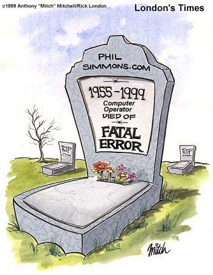
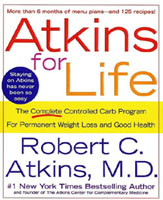
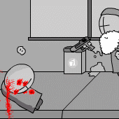
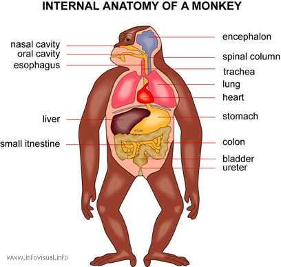

#88441 78 2005-08-05T00:56:12Z Bigblargh Jupiter Island is full of pleasures
Glowing gardens holding hidden treasures
Luminous flowers of yellows and greens
Glittering petals that have to be seen
Here's your chance don't let it pass you by
Take my hand and we'll fly
I am teh king. The first person to transcribe a chips brand name into l33t is king.
#88443 80 2005-08-05T01:04:51Z Bigblargh |\/|\/|\/|\/|\/|
Curl that up and put it on your head.
The first to describe the smell of a salmon is king.
#88475 85 2005-08-05T04:48:09Z Bigblargh EBAY!
The first to answer this question first is king:
According to
www.uncyclopedia.org, who is the inventor of the internet?
#88476 35 2005-08-05T04:52:14Z Bigblargh I would take a blunt object and some flint, then forage for food in the cold, dark city, living on birds and the occasional baby.

#88477 8 2005-08-05T04:55:22Z Bigblargh Jflash, you're going into 7th? Ha! You're tiny! I, however, am going into the wise, aged grade of 8th. Oh, I feel old...
#88478 38 2005-08-05T05:00:26Z Bigblargh I know online I'm exceedingly polite, which lets me get around. But what REALLY helps is just some proper grammar.
#88612 3 2005-08-05T17:22:17Z Bigblargh Well, another unacceptable reason to delete is to delete then resubmit because nobody voted and/or commented on your map.
#88664 28 2005-08-05T22:26:09Z Bigblargh I remember when I was very tiny, I had a dream where I was at an indoor play structure, and there was a large crowd around it (we were in a mall). Then my mom said "go find mommy" and went into the crowd. Lost and alone, I sat down to cry. The dream still makes me sad.

#88667 18 2005-08-05T22:38:41Z Bigblargh BLACK MAGE!
That's wheere the comedy is! Pirate or ninjas? No, just kidding.
1% milk vs. 2% milk?
#88670 92 2005-08-05T22:53:42Z Bigblargh Ebaumsworld's "Snot Rocket" disgusts me because it goes against all my right-winged cristian values.
Okay, whoever double posts next is TEH KIGN!!1!
#88673 94 2005-08-05T23:06:24Z Bigblargh But you didn't double post

#88681 24 2005-08-05T23:37:46Z Bigblargh 404'D! Too bad.
#88685 26 2005-08-06T00:12:43Z Bigblargh Sorry.
#88699 27 2005-08-06T02:01:50Z Bigblargh Before I die, I want to poop in the oval office.
#88712 25 2005-08-06T04:36:54Z Bigblargh Here's some comedy history for ya: the "Scene Missing" gag that is placed all over the internet actually originated is the 34th Monty Python episode "The Cycling Tour."
The gag was used when a character was about to be executed with shotguns, and then the screen flashed "Scene Missing" and the character appeared outside and said "That was the most thrilling escape" or something along those lines.
Fr tm!
#88714 106 2005-08-06T05:38:13Z Bigblargh IoulouooyoeallyIoulieoulSease
Never mind. But I think N would only be able to go on a TV console, because all the handhelds are too small for the awesomeness that N includes. I mean, I have a DS, and it's freaking sweet. And I've tried a PSP for a few seconds, and from what I know it sounds freaking sweet as well. But, the pixels are too big for N, and you would have to zoom out every five seconds to see what's going on.
But consoles sound awesome, and (insert stuff that's already been said). The only problem with is with adverts- N isn't particularly flashy, is it? "Experience extreme gray action!" Also, Thwumps are ripped off from Nintendo. Well, technically, no violations are made, because in the Mario games they are Thwomps, not Thwumps.
Though, if it is made, will systems with internet (XBox 2, Nintendo Revolution) be able to load the latest N webcomics? And, if so, would they get paid?
#89020 5 2005-08-07T17:45:20Z Bigblargh I'd be up for something like that.
#89025 110 2005-08-07T17:59:23Z Bigblargh TEH PH33R!
Next person to post a sound file of pants being played as an instument is king.
Attachment (lost): post-6-1123437563.jpg
#89033 4 2005-08-07T18:12:05Z Bigblargh 8-bit for me too. It's cram-packed with stupid jokes, and it updates really quickly. I also like Savage Chickens. They also specialize in stupid jokes.
#89044 7 2005-08-07T18:48:41Z Bigblargh Like wikipedia, but about a specific topic. There's a Homestar Runner wiki, for instance.
#89049 112 2005-08-07T18:57:31Z Bigblargh I thought it was a good idea...
First person to name a Egyptian God card from Yu-Gi-Oh! is king.
#89133 680 2005-08-07T23:22:34Z Bigblargh Then nerds begin to call you a nerd.
I wish my dandruff would go away.
#90003 142 2005-08-11T19:10:15Z Bigblargh I think there are four unlocakables.
Darth Vader
Stormtrooper
Princess Leia
Rebel
Or at least that's what the website said. And you can't lie on the internet, right?
I am king. First to post the first word of the story "Da Vinci Code"
Wins a fish
And becomes king.
#90035 18 2005-08-11T20:19:24Z Bigblargh I would be able to control electromagnetism, time, make living organisms, and, uh, have three legs.
#90037 65 2005-08-11T20:23:05Z Bigblargh Seven words to summarize my life? okay.
Love is sweet, but hate is commonplace.
#90043 7 2005-08-11T20:52:11Z Bigblargh I think I have a list like that.
Homework data loss
Homework data loss
Homework data loss
Homework data loss
Homework data loss
N
Homework data loss
Homework data loss
Homework data loss
N
Homework data loss
Saying the wrong thing on IM
Homework data loss
#90257 33 2005-08-12T17:38:36Z Bigblargh This is great, fantastic. While the proportions might be a bit off, this is still the best out there, and I think it will be for a while. My only complaint is that I can't figure out how to move the head in the new one. Unless I'm missing something...
#90278 11 2005-08-12T19:21:48Z Bigblargh I think we should get a bunch of people in the forums to mass spam them. That'd be fun.
#90602 29 2005-08-13T17:23:42Z Bigblargh I WANNA JOIN! I like teh club!!!

#90608 56 2005-08-13T17:46:39Z Bigblargh ^
Username is a lie, his avatar is purple
#90614 161 2005-08-13T17:54:23Z Bigblargh OJOKB in the context of:
QFSTPOBHHJP QVPl QPNQBSF J TVPJ $MJDIT 4F VO OJOKB TJ USPWB GBDDJB B GBDDJB DPO.
I dunno, I found it on Google. Does it count?
#90616 64 2005-08-13T18:00:32Z Bigblargh EARTHBOUND! After that, Black and White.
#90617 59 2005-08-13T18:01:57Z Bigblargh ^Apparently has a dark past of resurrecting topics
#90620 37 2005-08-13T18:10:17Z Bigblargh No, I just have circles. I'm supposed to have sliders? There must be some reoccurring loading error that happens only to me.

Edit: Happeens is not a word.
Attachment (lost): post-33-1123956617.png
#90623 61 2005-08-13T18:13:54Z Bigblargh ^Has greatly improved in mapmaking.
#90624 32 2005-08-13T18:17:08Z Bigblargh *Opens trenchcoat*
*Opens concealed trenchcoat*
*Removes waterproof jacket*
*Removes hamster*
Naked!

#90686 163 2005-08-13T21:54:53Z Bigblargh Often jam oreos know bacon

#90760 40 2005-08-14T02:51:02Z Bigblargh Oh, so no error. So all that's needed is a head circle.
Here's N getting kicked in the crotch:
Attachment (lost): post-33-1123987862.png
#90763 87 2005-08-14T02:58:00Z Bigblargh ^ Is incorrect, Brickman is Brickman on NUMA
#90764 698 2005-08-14T03:01:37Z Bigblargh But then you are expected to make it remain clean.
I wish I was a unpopular nerd.
#90765 377 2005-08-14T03:03:56Z Bigblargh 7.5/10 Pretty sweet. Teh matricks is teh p1mp.
#90771 201 2005-08-14T03:17:13Z Bigblargh Hell no!
Rolling fat people down hills?
#90773 8 2005-08-14T03:19:32Z Bigblargh I would make comics about myself and they would be lolness.
#90775 29 2005-08-14T03:25:43Z Bigblargh I remember when Calvin asked Hobbes "What if there's no afterlife? What if this is all we'll get?" And Hobbes replied "Oh, heck. I'll take it anyway." That's my ready answer when someone starts talking about death and suicide.
#90779 5 2005-08-14T03:33:15Z Bigblargh I would have an automated house, so I would never at any time in the rest of my life have to get up from the toilet.
#90780 701 2005-08-14T03:36:19Z Bigblargh Then your spleen no longer functions, you get a small scratch, and because you cannot move to mend it, it gets infected and your blood cannot be cleaned. You dies.
I wish I had the best pancake in the history of history of pancakes.
#90785 146 2005-08-14T03:51:20Z Bigblargh I'm bigblargh, But my real name is Sam Bennett. I don't mind giving you my name because there's a lot of Sam Bennetts in the world (Google it). I'm going into 8th grade, and I specialize in theatre-thetre-theter-theater-tights or however you spell it. I'm the funnyguy at school, and I would like to also be a funnyguy on the forums with my comics, assuming I can stay on schedule. I also weigh under 100 pounds, and I am 5"6.
#90921 4 2005-08-14T16:52:02Z Bigblargh When we were "listening" to our science teacher when we were "studying" the periodic table. She blurted out that periods were called periods because they are always in a predictable pattern, which is why they are named after a woman's period. Then she took a swig out of her "coffee." We seriously think she has booze in there, because it suits her personality and she acts very strangely after a hit.
The second story is short because I wasn't there, but I have a pretty good idea of what went down: Nobody was listening, and the teacher shouted "I HAVE THE KNIFE OF DISCIPLINE!" Everybody was listening after that. Years later, even after he has retired, we make fun and write scripts about the Knife of Discipline.
#90924 95 2005-08-14T16:56:49Z Bigblargh ^That post had been edited by Starcrossed on Aug 14 2005, 02:23 PM
#90926 5 2005-08-14T17:02:14Z Bigblargh When I went to a wedding yesterday and a guy I didn't know came up to me and said "Do you see that freaky guy over there?" "Yeah." "He's my son." Another thing that isn't funny but I found surprising is that one of the parents of a video game freak (which is good) was extremely interested in my webcomic making. That was fun describing.
#90929 58 2005-08-14T17:16:15Z Bigblargh I'm not religious because there are so many religions. Some have either heaven or hell, or some kind of reward or punishment, or another life that will reflect your current. Since there are some laws in religions that conflict, you can't be sure to pick the right one. But If I were to witness Jesus through some kind of miracle, I would be a devout Christian. But since I have never witnessed any proof to any religions, I go without.
#91015 7 2005-08-14T21:08:22Z Bigblargh Let's play the warn jak25 game! It's fun and productive!
#91017 98 2005-08-14T21:09:28Z Bigblargh ^has a funny quote in his sig

#91020 172 2005-08-14T21:14:32Z Bigblargh I am king. The next person to post a picture of their shoe listening to headphones is king.
Attachment (lost): post-6-1124054072.jpg
#91035 54 2005-08-14T21:31:23Z Bigblargh I like calling people "Dumb fucks."
"Hey, fuck!"
"Wh- What?"
"Yeah, you dumb fuck!" and hilarity ensues.
#91044 4 2005-08-14T21:42:32Z Bigblargh Seriously, anyone who has not warned jak25 should warn him RIGHT NOW! I will do it every day until he's gone.
")
#91122 10 2005-08-15T01:30:16Z Bigblargh We have kids like that. We really don't have mean teachers, but entertaining ones.
#91123 108 2005-08-15T01:33:01Z Bigblargh ^Isn't a mod, but an administrator. Ooh, big word
#91129 110 2005-08-15T01:43:27Z Bigblargh ^Is lying, if I were named bigblargh I would get beat up a lot
Edit: Noticed that Sgt. Poptarts edited his thread, now I changed mine
#91299 7 2005-08-15T14:38:11Z Bigblargh They could be used for the doppleganger levels...
#91551 136 2005-08-16T04:40:39Z Bigblargh ^Yeah, shaddup.
#91552 26 2005-08-16T04:43:29Z Bigblargh 5"6, and I'm 97 pounds. Doesn't help me with girls, though.
No, I'll just use brains. Brains help you get girls.

#91554 25 2005-08-16T05:05:19Z Bigblargh What do pigs say when it's raining?
It's raining cats and hogs!
*is shot*
#91642 30 2005-08-16T15:20:36Z Bigblargh Doctor, will I be able to play piano after the surgery?
Yes, you will be able to.
Excellent, because I couldn't before!
#91740 9 2005-08-16T23:03:02Z Bigblargh I get about 25ms/f, but it increases over time, so sometimes it gets so bad I have to close it and reopen it.
#91748 146 2005-08-16T23:14:04Z Bigblargh ^Modest
#92018 159 2005-08-17T23:25:26Z Bigblargh ^Has one of my most favorite avatars
#92019 74 2005-08-17T23:28:18Z Bigblargh Easy to use, well made, and on fire, like other good things. Good job, Lucidium.
#92579 14 2005-08-20T00:04:58Z Bigblargh If you think you're funny enough, go ahead, Starcrossed.
Attachment (lost): post-19-1124496298.png
#4117 1 2005-08-20T01:28:24Z Bigblargh Woo! 1000! I'm not worthy! Wow! A whole thousand! This isn't spam! We shall rejoice for a few seconds! Woo!
That's a lot of people. I really don't have anything to say, but a congratulations to N, Raigan Burns and Mare Sheppard, me, you, and your teacher's uncle's awesome dog.
I still can't get over the fact it's FREE.
 I'm not making too big of a deal out of this, am I?
I'm not making too big of a deal out of this, am I?
Again, congratulations, N.
#92588 3 2005-08-20T01:45:49Z Bigblargh 
Well, if 1000 was reached before, wouldn't it be considered...Special? Oh well.
#92599 7 2005-08-20T03:07:26Z Bigblargh Poop.
#92749 4 2005-08-20T18:34:22Z Bigblargh I'm in. But I won't make it because I don't think I'll be active enough. Someone like Maniac or Nevermore would do a good job.
#92750 166 2005-08-20T18:36:54Z Bigblargh ^Ended his sentence with a !.
#92751 9 2005-08-20T18:41:16Z Bigblargh No, he put a few periods at the end of the level data. I checked because this guy was probably to lazy to even edit the level.
#92753 4 2005-08-20T18:54:31Z Bigblargh I have a crush on a girl that says she doesn't want to be my girlfriend, which is fine by me. Unfortunately, my theatre teacher puts us together in every other scene together, which is always quite awkward. Very much so because we have to do a love scene. I always feel like apologising after every time we run through it.

#92806 6 2005-08-20T22:15:52Z Bigblargh To make sure nobody turns an article into FOODFOODFOODFOODFOODFOODFOODFOODFOODFOODFOODFOODFOODFOODFOODFOOD LOLOLOL!!!!111oneoneone!!! oiwdbnufawjijwfenjggg
It wouldn't be too unlike being a forum mod. Just create articles, and make sure nobody spams them. The main problem about this idea is that some people might make articles about themselves. Like, if blue_tetris or Lucidium did so, nobody would mind because they have helped with NUMA and the forums. But if random people do it, the the wiki would suck.
But I'm in. I want it to happen. It would be awsome. Do you think they'll have a Webcomics article?!
#93106 10 2005-08-22T03:42:07Z Bigblargh Am I in the big three? But I'm a n00b. Maybe I'm not? Wait. No NO! NO SUCH THING!
#93197 20 2005-08-22T15:07:40Z Bigblargh I want a webcomic maker one. Have it a closeup of N's head and have a Lol! next to it. That'd be sweet.

#93342 41 2005-08-22T22:29:46Z Bigblargh Hey sweet cool yeah. Thanks LV!
#93355 13 2005-08-22T22:47:30Z Bigblargh DEAR GOD NO!!!!!!!!!!!!!!!
I agree with the whole "N comic" thing. Whatever happened to the simple pride one used to get from making levels? What happened to those days? Soon, every n00b on NUMA is also going to try their hand at making a comic. Every day, there'll be tens and hundreds of retarded comics starting up. The funny ones will be buried in the pile of comics in a matter of minutes after being posted.
It'll be madness, I tell you! MADNESS!!!!!!!!!!!!!!!!!
Well, I have one of the good ones (or so I'm told) and mine is pinned. Perhaps we could have a forum subject only for webcomics? That way, we don't have to sift through tons of crap webcomics when you didn't even go there for them.
Oh, yeah, and about submitting maps? I don't quite know what makes a good map, so I don't like submitting them. Be thankful I'm just making webcomics.
#93362 15 2005-08-22T23:14:04Z Bigblargh Sage advice, Nevermore. But I have a hard time figuring out what fun is. I'm not too great at the game, so the levels I make are usually boring. And when I look at Lucidium's crazy hard maps, the are rated very high, but I simply find them frustrating.
#93418 183 2005-08-23T04:54:15Z Bigblargh freakin *grumble* *grumble* obscure *grumble* mcmuffins *grumble* glenno14 *grumble* *grumble*
#93419 47 2005-08-23T04:58:52Z Bigblargh Your face. OOOH! BURN, YOU FUCKING SON OF A BITCH!!!

Ahem.
Here's one I just made up:
Two noses, both writers, are disscussing their book.
"So, how's it coming along?"
"Snot done."
Nyuk nyuk nyuk.
Edit: typo in a swear word. I'm a facking retird.
#93423 185 2005-08-23T05:18:23Z Bigblargh I am yet another king.
First person to rant about crappy webcomics
will be the next king.
#93544 3 2005-08-23T16:41:20Z Bigblargh I added the editing help page. What have
you done?
#93564 15 2005-08-23T17:32:04Z Bigblargh I'm on it! Unfortunatley, the server is not responding!
I am ending everything with a "!"!
#93818 18 2005-08-24T15:21:59Z Bigblargh Um... I think that's worse...
#94408 18 2005-08-26T23:00:45Z Bigblargh
Pwn3d!
#94415 20 2005-08-26T23:13:02Z Bigblargh Nevermore, I searched that and now I'm scared.

#94716 74 2005-08-27T20:41:54Z Bigblargh 4.5/5. It reminded me of the Mentanet style of layout. It was a good difficulty, and was fairly open. Quite enjoyable.
 Tulips
Tulips
And while you're at it...
Spotlight#94868 22 2005-08-28T05:26:34Z Bigblargh No, I think he means he has met a girl that is pretty and nice, but has never really spoken to her.
But I think... No.

Sorry, I'm debating something related to this. Go away.
#96602 27 2005-09-02T22:55:19Z Bigblargh [not here] Sweep, It's a little known fact that webcomic makers have feelings. Not what you'd expect, huh?
[/still not here]
#97037 133 2005-09-03T22:53:31Z Bigblargh Simply Simplistic has been four'd.
Gesture#97076 42 2005-09-04T00:17:52Z Bigblargh Macaddict is a Mac person! I would never have guessed!
Frickin' Windows programs.
#97124 136 2005-09-04T04:18:03Z Bigblargh Only if you want to: Fun, easy challenge. But it felt like something I had played many times before. 3.5/5
Handle with care
Here's a glass door level. Very annoying.
#97133 131 2005-09-04T05:30:00Z Bigblargh The matrix has been parodied once again.
#97234 4 2005-09-04T16:37:24Z Bigblargh My life as a n00b
Who woulda thought that my first post would turn into a
good webcomic?
Frustrating
My first map. Way too many items, the enimies don't bug you enough, but it really isn't a n00bish level. I think.
#97255 2 2005-09-04T17:35:13Z Bigblargh Handy. But I would just use a text document to store it. Do you know how to export the data into a bite-sized file that includes the level data and a demo? That'd be cool.
#97258 347 2005-09-04T17:40:50Z Bigblargh indulged
#99230 29 2005-09-10T18:09:33Z Bigblargh Damnit! That was me.
#99234 31 2005-09-10T18:28:51Z Bigblargh Did you notice the * after final?

#99601 128 2005-09-11T16:39:37Z Bigblargh Yes! I'm like the most importnt thing evr!!!!
No, but all I want is more colors in the poser. I'll stop spamming now...
#99689 31 2005-09-11T20:00:16Z Bigblargh #99741 25 2005-09-11T21:19:17Z Bigblargh The last straw.
Wait! "Bigblargh is cool!" Oh, you're sure to be rolling in 5s in no time.
Not a guarentee.
#100133 58 2005-09-13T04:19:46Z Bigblargh Keron, that's the most awesome thing I have ever seen since Edward the Toaster.
#100135 49 2005-09-13T04:30:19Z Bigblargh I swear. Can't help it. It's like techno, once you start it, you just can't quit because it's just so addictive.
Oh, wait. Did I say techno? I ment drugs. Yeah. Sorry.
#100136 48 2005-09-13T04:43:32Z Bigblargh Ub-quisoloerstatederson?
I'm rated one of the highest? Second place right now!
Okay, that's wierd. Hmm...
*checks a thing*
Quote: Starcrossed
A Grand Totale Of.... 44/60! Can someone please check this please? It doesn't seem right.....
Starcrossed, it adds up to 43, I think.
#100417 109 2005-09-13T22:59:55Z Bigblargh But who's gold_tetris?
*everyone looks at bigblargh*
What I didn't do it! I'll just type *everyone looks away from bigblargh*
*everyone looks away from bigblargh*
Yay!
*Everyone starts dancing to YMCA*
Ah, this is power.
#100419 239 2005-09-13T23:04:07Z Bigblargh But it's sold at Fred Meyer!
#100695 246 2005-09-15T03:56:07Z Bigblargh Now the tortoise is sucked into a race with a hare.
#100697 84 2005-09-15T04:10:48Z Bigblargh Lightning bolts. Used in poetry all around the world, and scares children everywhere. But their mothers will come to aid them, soothe them. For lightning it but a masterpiece of nature's fury, and something to gaze upon in wonder. Hear ye, for lightning shall be the peacekeeper of love.
#100853 250 2005-09-15T22:58:19Z Bigblargh Your vacuum cleaner is teh not work.

#101221 2 2005-09-17T16:56:00Z Bigblargh Aw, (CENSORED). I was curious.
#101225 181 2005-09-17T17:01:58Z Bigblargh 4/5 for The Thwump Teleporter.
Insignifican't needs five votes, dear lord.
#101353 35 2005-09-17T22:32:34Z Bigblargh SUBMITTED! N-ything to help! Nyuk nyuk nyuk.
#101557 4 2005-09-18T04:23:35Z Bigblargh I love you. Wait-
Nevermind. But stick around!
#101725 10 2005-09-18T15:58:29Z Bigblargh Every few weeks!? But then every time you post I'd be like
OMGF!!! I MEAN OMFG!! IT'S RAZORSTAR! Oh god, it's great to have you back, old friend. Have a cookie!
But then I'd run out of cookies!
#101754 209 2005-09-18T17:47:09Z Bigblargh I am like the best ever at MTI.
The first person to make me a cool sig is king.
Attachment (lost): post-6-1127065629.png
#101758 15 2005-09-18T17:52:11Z Bigblargh What subject we not listening to in science?
Grape-flavored fritos
#101760 265 2005-09-18T17:54:38Z Bigblargh I drop the north pole into the furnace.
#101791 290 2005-09-18T18:56:27Z Bigblargh ^Enough tags for me
#101811 8 2005-09-18T19:11:01Z Bigblargh Not funny. Clever, but just not funny.
#101819 18 2005-09-18T19:23:34Z Bigblargh If X=X+1, then where can you find X amount of spam?
MTI
#101822 300 2005-09-18T19:28:24Z Bigblargh ^Has multicolored text in his sig
#101824 267 2005-09-18T19:31:28Z Bigblargh Tempel 1 is destroyed.

#101875 27 2005-09-18T20:38:44Z Bigblargh He deserves to burn as in touching a lightbulb and having an annoying red spot appear.
#101973 2 2005-09-18T23:37:04Z Bigblargh Quite amusing. Good job.

#101974 28 2005-09-18T23:40:13Z Bigblargh Name an object that I have named Jesus.
Your mom! Oh, BURN!
#101977 232 2005-09-18T23:46:24Z Bigblargh Eli did that beforehand with the "you got pwn3d" thing. But still, nice job BB.
I did that.
Hey look!
@Glenno: I'm guessing you use your inhaler every time you have difficulty breathing. So you don't have a set number.
#101979 316 2005-09-18T23:52:22Z Bigblargh ^Is a "Spong lover," allegedly.
#101984 318 2005-09-19T00:08:38Z Bigblargh ^Actually, I'm sleeping on my comics decision. You hold on.
#101986 4 2005-09-19T00:10:47Z Bigblargh Type in black plain text, please. Thank you
#101991 29 2005-09-19T00:25:39Z Bigblargh LOL- of course not. Just store it.
Ergh. I said... lol...
I said lol.
_I_ said lol.
I _said_ lol
I said _lol_?
This just doesn't feel right...
lol.
And how is this any better than spam?
#102027 234 2005-09-19T02:17:02Z Bigblargh I apologise your acceptably.
Glenno, are you still alive?
#102028 401 2005-09-19T02:19:12Z Bigblargh 420991266/561321688
Pretty good, just a little too pixely.
EDIT: Oh, yeah, it's 7.5/10 in case you suck at math.
#102032 236 2005-09-19T02:25:51Z Bigblargh Damn you and you literal logic.
#102034 45 2005-09-19T02:27:22Z Bigblargh Don't forget to include how awesome I am in your speech.
#102222 326 2005-09-19T23:15:09Z Bigblargh ^I think you're right.
#102230 216 2005-09-19T23:43:01Z Bigblargh I know just the thing!
I lead an intresting life...
Edit: Forgot to metion, this was me two years ago. Now I look almost the same, except my hair is incredibly long and my nose in bugger. Plus I have acne.
Attachment (lost): post-20-1127173381.jpg
#102235 9 2005-09-19T23:51:55Z Bigblargh So, what does macaddict think of this thread?
#102238 218 2005-09-20T00:00:21Z Bigblargh Ug, that pisses me off because what you said was mean, but reall, really clever.
#102239 8 2005-09-20T00:03:00Z Bigblargh Dang! I should've left that typo in Razorstar's comic. I thinnk Starcrossed knows what I'm talking about...
#102241 6 2005-09-20T00:05:55Z Bigblargh Do you sing soprano? Ha! You do! HAHAHA! Don't lie! You high-voiced dude!
Hey, I sing Tenor. But you could figure out where I lived if I showed you the website, though...
Edit: I'm am checkign teh spellink adn grammer.
#102244 273 2005-09-20T00:15:45Z Bigblargh The fat man loses weight.

#102246 221 2005-09-20T00:18:51Z Bigblargh I can never forgive you. You have offended me beyond the span of my life. I hope you stay up every night thinking about the horrible thing you have done. And while I'm dreaming, I'd like a pony.
Edit: In case you don't know, I knew it was a joke. So, yeah.
#102266 223 2005-09-20T01:37:39Z Bigblargh Regardless, I didn't picture you that way. Your way younger than I imagined. Or how old is this picture? And what's the occasion, why are you so dressed up?
I am am 13 currently, and this photo was taken two years ago. And I was dressed up for a costume party. My mom was Marylin Monroe, and I was a porody of me. I wear total crap clothes so it was quite amusing to see me so dressed up.
#102268 9 2005-09-20T01:54:40Z Bigblargh Wait! Your voice changed and you're an alto? I would think that once your voice cracks and lowers you would be lower than alto. Oh, it just hasn't dropped fully yet. Nor has mine. I gone be a bass!
Nah, who am I kidding. I was a soprano for a long time, so I'm gonnna be a baratone or something.
#102270 13 2005-09-20T01:56:32Z Bigblargh I have a mac classic, and I deleted all off the system files for fun. It crashed after that.
But I think that's a gimme.
#102655 2 2005-09-22T00:37:14Z Bigblargh Hmmm. I agree that the plot could be better, but all of these have been suggested before. And they have a bunch of reasons why they can't work.
But movies? Hey yeah cool. I would stand for that.
*stands*
#102658 53 2005-09-22T00:47:26Z Bigblargh Here's what went on in the den, summarized:
Trog: Yay! A forum! Rejoice.
Some wolf: Okay.
Me: Yay! But what's this for?
Trog: Hold on, you'll see.
Maniac: I see absolutley no point here...
Trog: Yes, I know! I have a reason for this, even if it is obscure!
(Maniac reveals password)
Trog: You barstrad!
Maniac: What'd I do?
That's the way I see it.
#102682 55 2005-09-22T03:12:41Z Bigblargh Would it make you feel better if I called you a barstrad too?
#102687 351 2005-09-22T03:25:26Z Bigblargh ^Most definitely worthy of a better tile than that
#102688 282 2005-09-22T03:28:12Z Bigblargh That fire dude is screwed as soon as I throw this dry ice at him.
#102691 201 2005-09-22T03:34:26Z Bigblargh Like, Dramatic Guide-Lines was, like, totally rated a, like, 3.5/5.
Leech needs a whole five votes! Hloy Omgz0rs j00r Momz0rz!
#102693 82 2005-09-22T03:38:50Z Bigblargh I was dragged to see 40-year-old virgin, which was a total waste of my time. So no.
#102704 18 2005-09-22T04:13:02Z Bigblargh A
timed
interregation:
Learning
language
A.S.A.P.
That one's about a spelling test.
#102706 285 2005-09-22T04:21:31Z Bigblargh No. Screw logic. If he wants to eat dry ice, let him eat dry ice.
But it created a chemical reaction in his stomach...

#102950 11 2005-09-23T02:22:52Z Bigblargh Give him one more chance. Contact him, and warn him. Tell him exactly what he's been doing wrong, and if he takes no heed to the reasonable instructions we give him, ban him.
There's my two cents.
#102961 32 2005-09-23T03:06:38Z Bigblargh A
Ted
Is
Likely
Loved
Abroad
#103096 8 2005-09-24T00:24:31Z Bigblargh I know nothing about flash, but I think the custom paths would be too difficult to implement. But I like this idea otherwise.
#103302 3 2005-09-24T17:58:25Z Bigblargh Well, that sucks. You could've been an accepted member if you just didn't talk about Macs all the time.
#103304 23 2005-09-24T18:02:22Z Bigblargh An unknown member with 16 posts asks you for a custom title and you give it to him? Was it in exchange for sexual favours or something?
Hmm.. This gives me an idea.
NO! Christ, I was just kidding.
#103307 12 2005-09-24T18:07:29Z Bigblargh Clever, but not that funny.
Attachment (lost): post-6-1127585249.jpg
#103310 14 2005-09-24T18:20:15Z Bigblargh I am blessed with two beautiful cats. Here's one...
Attachment (lost): post-20-1127586015.jpg
#103329 8 2005-09-24T20:01:26Z Bigblargh With a radom map like that, the computer would have to make a path that would make sure the level could be played. So, in theory, you could make a perfect demo for any map.
*Thinks fondly of Lucidium's freaky-hard puzzles*
#103330 290 2005-09-24T20:06:02Z Bigblargh Opps. Dropped the lighter in a toilet.
#103334 292 2005-09-24T20:22:17Z Bigblargh #103599 25 2005-09-25T20:41:51Z Bigblargh I don't quite understand, but it's amusing.
Attachment (lost): post-6-1127680911.jpg
#103623 212 2005-09-25T21:47:15Z Bigblargh Great map. 4.5/5!
Mine Haters Anonymous likeley doesn't need to be posted here, but I have a hunch it's being sniped...
#4523 1 2005-09-25T21:58:07Z Bigblargh I don't know if this would be hard to implement, but I would like a setting in Ned that would make it so mines wouldn't explode. I was playtesting one of my maps and the mines were essential to test the difficulty, and it was a hard map. I kept blowing up on the mines and in turn blowing up all the neighboring mines. It was incredibly annoying to reset again and again, so I wished I could playtest without having it so tedious.
What do you guys think?
Edit: I forot to add that when I say I don't want he mines to explode, I still want them to kill the ninja.
#103628 27 2005-09-25T22:04:21Z Bigblargh Hehe. That kid could've been me. Funny.
Attachment (lost): post-6-1127685861.jpg
#103631 9 2005-09-25T22:10:19Z Bigblargh Quote: My first map
This is my first map. If you vote 0 or something, I won't really mind. As long as you play it.
Yeah, I have the same thought that I would rather have comments than just votes. Not that having a top-rated map would be bad.
#103632 3 2005-09-25T22:11:48Z Bigblargh Did you send an email when you signed up? You can get it back if you have.
#103633 3 2005-09-25T22:16:28Z Bigblargh You could also do it to gold, but that wouldn't bug me as much.
Edit: Hmm. I seem to be "Supercool."
#103634 336 2005-09-25T22:18:48Z Bigblargh Ant - TMBG clock radio
#103638 6 2005-09-25T22:33:43Z Bigblargh That would be very nice of you.
#103649 6 2005-09-25T22:47:14Z Bigblargh My life as a n00b TEH MOVIE!!!1!!! Gerald would be british, and-
No, just kidding. Blackwolf, I like it, but the framerate is awful- can it be less choppy?
#103722 3 2005-09-26T01:38:57Z Bigblargh I think trl4b is gonna commit suicide...
#103977 390 2005-09-27T02:23:06Z Bigblargh ^ That was the most clever post ever. But not really.
#104380 14 2005-09-29T03:01:11Z Bigblargh Webcomic-producers don't hack into sites and steal their web space and bandwith.
Uhh.... Ummm...

#106295 8 2005-10-08T02:28:14Z Bigblargh Oh, my god. I just did that on my gameshark and I was truly amazed.
I'm writing Nintendo, this is just too cool.
#106450 2 2005-10-08T19:10:17Z Bigblargh Congrats. I haven't even beaten the first cloumn.
*noise*
Is that the raising of every knife, gun, and Nevermore's hammer to ever exist on the forum?
I should run...

#106452 10 2005-10-08T19:13:32Z Bigblargh It's not often we get a decent idea. Implement now! Or at least when M&R feel like it!
*bribe*
#106455 15 2005-10-08T19:18:48Z Bigblargh That's kind of freaky.
I found pikachu in goldeneye! If you go into invisable mode, and fall into a wall in that dump level, you see a yellow mouse.
No, I think I remember that. I think it's a random piece of cheese, not a mouse.
Wait... Nevermind. I'm thinking of another N64 shooter game. Sorry.
#106456 55 2005-10-08T19:23:57Z Bigblargh Good lord... All I hear here is horror stories. The worst fight that goes on at my school is
Kid 1:Hey you!
Kid 2:What?
Kid 1:*shove*
Kid 2:*shove*
*pause*
Both: I am genuinley sorry!
*both hug and start crying*
#106460 2 2005-10-08T19:52:31Z Bigblargh You can't swing the ragdoll around after you die, if that's what you mean.
#106461 295 2005-10-08T19:55:15Z Bigblargh Here's a minstrel playing a trumpet in a blackout...
Attachment (lost): post-6-1128801315minstrel
#106462 148 2005-10-08T19:57:16Z Bigblargh "blacked-out style minstrel playing a trumpet"
I was trying to find an obscure image on Google...
#106785 298 2005-10-09T22:02:07Z Bigblargh Sweet! The nest person to translate a portion of the scene where Romeo first sees Juliet into modern english is king. Example:
Quote: Romeo
She doth teach the torches to turn bright!
To:
Quote: Modernized Romeo
Holy s***, she's hot!
#106795 25 2005-10-09T22:19:12Z Bigblargh I now think we should use this thread to try to interpret Trogdor's bizzare and abscure post.
I think that this is clearly a sign of the spirit for of Jesus... Navi signifies the hand of Jesus, as she provides knoledge for Link, and Jesus's hand provides love and warmth for all of us. And if He uses both hands, He can make a really good sandwich.
#106798 8 2005-10-09T22:26:31Z Bigblargh I use a eMac. I use it because it's the only one my parents would buy, and it's teh shiney.
In aftermath of Napoleon Dynamite, do you think the pop culture influence it created was good or bad?
Do you think a sequel is a good idea?
#106804 466 2005-10-09T22:47:36Z Bigblargh ^I though this guy was dead for a few seconds until I realized the welt on my head was from him hitting me with a sign that said LOL
#106872 42 2005-10-10T03:23:46Z Bigblargh Multiple accounts? Damn, now that you tell me... Well, if you get rid of me, you get rid of
Maniac
Trogor007
Blue_tetris
URGENT MESSAGE FOR THE ABOVE USERS!! DO NOT READ UNLESS YOU AER TEH ONE OF THEM!!
Shut up, play along! I'll explain later!
#107141 304 2005-10-10T23:03:06Z Bigblargh Hmmmm... Here's a simulation of what kind of conversations I have with my short teacher.
Her: Sam, answer the question I never asked!
Me: I didn't raise my hand...
Her: I can't hear you!
Edit: Sorry, this is for Maestro.
#107142 20 2005-10-10T23:08:56Z Bigblargh 45-3, because it's just tedious.
Do you know what the Oedipal Complex is?
Can you describe it without making it sound gross?
#107153 23 2005-10-10T23:44:15Z Bigblargh No, that was me! I asked that brilliant question!
#107154 13 2005-10-10T23:49:17Z Bigblargh Sarcasm tastes like poo.
Ask Red Reamer for a sig! he is, in fact, teh awesomest sig maker.
#107170 23 2005-10-11T00:38:09Z Bigblargh Guys! Hey! Oy! Conspiricy!
Does this mean no N?
Crap.
#107173 106 2005-10-11T00:41:29Z Bigblargh I, personally, would find it horrible for a girl or a boy for that matter to have lost their virginity at an early age. I couldn't imagine some kid in my school losing it... Except than wanker-
God, I hope that shithead dies. He got expelled for looking at porn and touching himself in class. OMFG HOW COULD YOU BE THAT STUPID? oiuasfjsdf
*end of post*
#107175 24 2005-10-11T00:47:11Z Bigblargh I found it on flash player, but I can't find it again. I guess it was divine intervention or something.
#107176 30 2005-10-11T01:08:35Z Bigblargh Bigblargh's short commentary:
Suxx0rz is the spam du jour. Now, we get maps like this all the time, but the reason I'm talking about it is this:
Quote: Jonah
This sucks. I just discovereed how to use level editor. Make fun of this as much as u want.
Yup, spam.
Bad description? Yes.
Bad map? No exit, random items. Check.
Bad, period? Yes.
But this bugs me because he
knows this sucks, so he
could do better. He also invites you to make fun of him. This is scary because we usally yell at most n00bs. But this one is immune! N00bs are evolving to make bad maps, no matter what tells them not to.
It seems that numa is turning into n00ba.
I am SO sorry, I had to use that pun eventually.#107192 486 2005-10-11T02:14:59Z Bigblargh ^Of course, this is equivilent to an average of .4 members met.
#107195 2 2005-10-11T02:16:38Z Bigblargh I completley know what you mean. I think it's a good idea, but it's gonna be shot down, I'm sure. Don't know how, but this has a way of happening.
But for what it's worth, good idea.
#107196 8 2005-10-11T02:21:12Z Bigblargh *put hacking equiptment behind back*
What?

#107197 9 2005-10-11T02:23:40Z Bigblargh On with the game?
Is often quite cynical, but is a valued member of whom is very active
#107462 307 2005-10-12T03:49:37Z Bigblargh Poop. I wanna be teh king! I am teh funnie!!! [/spam]
#107464 156 2005-10-12T03:51:40Z Bigblargh You know you've been playing N too much when you look at a piece of modern art and think, "That would be an awesome level."
I have that problem...
#107466 509 2005-10-12T03:53:09Z Bigblargh ^I cannot tolerate your high-brow humour
#107473 49 2005-10-12T04:14:32Z Bigblargh I have an ipod, and it doesn't work very well because my cat peed on it.
What is your favorite color?
Why?
Has it always been that way? And if not, what was it before? Why?
#107476 51 2005-10-12T04:23:56Z Bigblargh Your salary?
#107483 158 2005-10-12T04:43:39Z Bigblargh ...You twich with pain when someone says "tetris"
...You tell your friends about N and become extremeley giddy to the point where they become scared*
...Made your own forum for the sole reason to inform people about N*
...Have one or two copies of it on a floppy when you go to school or a friend's house
...Been doodling on graph paper, and then you suddenly realize you're drawing N tiles*
...You have actually, genuinley tried to walljump**
*I do this
**I did this after playing Prince of Persia, and sprained my arm. Der, I'm am teh smeart!!
#107485 6 2005-10-12T04:45:00Z Bigblargh That every single shampoo brand is better than every other brand out there.
#107487 119 2005-10-12T04:52:59Z Bigblargh Hey, I'm new to this thread. Here's my polite side before I get so angry as to sign someone up to gay porn:
Maniac: A
ar a
is not a post. And you tell us to stop spamming. Wait... You've never told me...
Keep up the good work!
Brickman: Stop being so cynical. Can you make a "jolly" post? One with teh butterflies and teh fluffy kittens? That would be awesome. Ohh! OOH! Make your avatar pink, too!
Bigblargh: LOL! u r teh l00ser!!!!111 U don't have teh gilrfriend!!!
Bigblargh: Yes, I teh do....
Bigblargh: Oh. I teh sorry.
Bigblargh: I are teh forgiving.
Bigblargh: Pass the giant pile of salt.
Bigblargh: You got the hiccups?
#107489 511 2005-10-12T04:58:24Z Bigblargh ^The wolf den asploded, if you haven't noticed.
But I'm not part of COFFEE...
#108309 25 2005-10-14T19:40:25Z Bigblargh What?! I love smilies! Especially the
!
But I HATE

#108315 15 2005-10-14T19:50:19Z Bigblargh I don't really care about custom ranks.... In fact, I didn't really notice them until a week ago. If you really want some unique thingie, put it in your sig.
Not that I wouldn't mind a custom rank HINT HING OMG NEVERMIND
#108369 26 2005-10-15T00:06:41Z Bigblargh Death by girls playing with your hair.
They have less sensitive heads, so when they play with mine, it feels like I'm being hit upside the face with a flaming bat while needles soaked in vinager are being shoved into my scalp. Exept worse.
#108374 34 2005-10-15T00:30:53Z Bigblargh Hoorayful! I feel all propud now because I filled out a survey. Yey.
Congrats!
#108648 66 2005-10-16T03:11:00Z Bigblargh Dear Dr. Tetris...
I made a forum for my mates, but I have no idea what my custom title should be. Any suggetions?
#108736 256 2005-10-16T16:42:59Z Bigblargh Hmm... I'm wavering between a 3.5 and a 4... I'll just rate it four.
Sorrowful Invention needs
one vote!#108819 344 2005-10-16T23:32:52Z Bigblargh Awww... He's teh cute.
Here's me, with my x-wing I almost immdidateley desroyed.
Attachment (lost): post-20-1129505572.jpg
#109012 31 2005-10-17T23:14:17Z Bigblargh Great ideas- But don't you think we should have, how you say, silly categories? This contest does have a humorous atmosphere. You might even notice "The Dronies" is a bad pun. I don't have any suggestions for what the categories would be, but I think it's a medium-level idea.
#109016 356 2005-10-17T23:26:00Z Bigblargh Woo! late reply!
I was seven when my father took that picture.
I looked back a few pages, and people said they didn't want to post pictures because of a bad "haircut." I am not familiar with this term. Could somebody explain?
Woo! BEST PHOTO EVER.
Attachment (lost): post-20-1129591560.jpg
#109026 3 2005-10-17T23:45:17Z Bigblargh It is annoying, though. But I don't care. It's all in good fun, right?
*Thinks about biggerblargh and miniblargh*
#109063 638 2005-10-18T03:21:28Z Bigblargh ^Cleverly made a little pun with his screen name and avatar combined
#109415 33 2005-10-20T23:10:09Z Bigblargh To be honest, I didn't think that guy was a n00b. I thought he just wanted to show someone his experimentation with the editor. He didn't know how perfect a map has to be for submission. Take it easy on this guy--like dayve did--and I've sure his maps will get better.
Sorry, Blue_tetris. I interpreted him as a n00b because he had a bad map. But I was thinking: there are the occasional spammers that are oblivious to any input we give them. I was concerned that this might be another n00b because he said we could make fun of it.
But, you're right... I had a similar discription on my third map. Yeah, nevermind.
#109725 6 2005-10-22T20:44:13Z Bigblargh This is the most crap topic I've ever seen. Is it going to be locked, or what?
#109728 8 2005-10-22T20:56:48Z Bigblargh At least tell us what you were gonna say.
*realizes he's being rash*
*rash starts itching*
#109729 679 2005-10-22T20:59:16Z Bigblargh ^ Has made a new word, "pice"
#109799 22 2005-10-23T01:42:52Z Bigblargh ahhh... Poop.
It's times like this I wish I could say something with meaning that someone would want to read, but it isn't the case. So, I'll just repeat what others have said:
Bye, man. I'll miss you.
#109859 688 2005-10-23T03:26:57Z Bigblargh ^sig makes me cringe
#109869 8 2005-10-23T03:53:37Z Bigblargh Here:
http://www.ndu.edu/ctnsp/Bird_flu.htm
It has some stuff about how to deal with it.
#109873 10 2005-10-23T03:57:47Z Bigblargh Damn. Your basic logic leaves me in awe again.
But, your point states that people aren't doing much about the diseases we have. But if we can't even deal with those, then we're positively screwed. I think that may be why everyone's fretting about a potential epidemic.
#109874 82 2005-10-23T04:00:23Z Bigblargh I move to Canada. Then when it reaches Canada, I'll sit in a corner and kill everyone who comes near me.
If a tree in a forest falls down and nobody is there to see it, will it make any sound? Give an in-depth answer you could use in a debate without looking stupid.
#109876 362 2005-10-23T04:02:03Z Bigblargh Why, thank you. And, yes, I am making a face in case you're not sure. I gotta find a pic where I don't look like crap, though...
#110068 136 2005-10-23T22:39:32Z Bigblargh EDIT'D!
I skimmed the rules, and missed something. So disregard the original post if you saw it.
Anyways, put me in line.
#110105 708 2005-10-24T01:04:10Z Bigblargh ^Has caused about $30 worth of damage by jumping out that window
#110109 14 2005-10-24T01:11:33Z Bigblargh Oh, I do! I DOO!!!
Take a picture of a chaingun drone firing horizontally WITH bullets, but zoom in once so it's big. But only once. Very important that you only zoom in once.
#110132 714 2005-10-24T04:36:15Z Bigblargh ^Obviously did not experience Nevermore's quote in its context, and therefore cannot judge the true brilliance of the writing.
#110133 355 2005-10-24T04:37:36Z Bigblargh My dishwasher- Samsung
#110134 18 2005-10-24T04:43:44Z Bigblargh Hey, cool. I was going to suggest this, but I didn't do it because I though it was already asked. I'd implement. And, tOBY, you are now one of my favorite members. It's simply because you obviously can use common sense, unlike other newbies. Welcome!
#110549 42 2005-10-26T01:24:03Z Bigblargh Why is everyone questioning the mechanics of the game instead of just applying what we know to make it function?
#110550 21 2005-10-26T01:29:33Z Bigblargh Ride a bike. Sheesh.
#110555 45 2005-10-26T01:53:09Z Bigblargh Is it in Gamingwolf's power to put aside his cynical poet personality in order to not post in obscure cynical poetry?
#110563 47 2005-10-26T03:36:36Z Bigblargh Does anybody have a hamster I could pick the lock with?
#110564 440 2005-10-26T03:46:41Z Bigblargh Here, Sukian. Here's a stereotypical girl question.
I have a girl named Rick in my science class, and I really want to date her. How do I get her to be attracted to me? Keep in mind I burnt off my face in an unfortunate remote-reaching accident.
Rick is albino, and bald. She has a scar from temple to temple and absolutely no nose. She has eleven fingers on one of her hands.
Her personality is awesome. She eats cats and loves to stick other people's fingers in electrical outlets. She also is mute. And blind.
How can I ask her out without commenting on her looks, personality, and do it without words? I need an honest answer, and fast.
#110745 444 2005-10-27T02:38:11Z Bigblargh Here, Sukian. Here's a stereotypical girl question.
Yes, I'm making it up.
My friend's answer to this quandary was to put her unconscious, and then take out her blood to kill her humanely. Rick is horrible, but we gotta be nice.
#111315 280 2005-10-29T19:10:26Z Bigblargh Masrshtop: 4
Kaze: 4
Rugburn needs- I don't know how many votes. Well, vote anywayz.
Also see:
Mayan MotherboardVillö#111316 761 2005-10-29T19:17:21Z Bigblargh ^What?
#111382 113 2005-10-30T04:14:10Z Bigblargh Okay, I'm going away. Don't panic, though, I'm not leaving as much as I am taking a break. Every time I get on the computer, I play N while doing my homework. But it's making me miss small assignments. I make them up, but they add together which makes me get a crummy report. So, I'm going, but I'll be back, when you least expect it. Maybe, like, tomorrow. Or not. I honestly have no idea.
Erm- bye.
#116243 121 2005-11-20T00:01:47Z Bigblargh oops. Shoulda said this earlier: I'm back on. I did a bit of makup work, and my grades rose to 96%. Woo, yay.
#116244 182 2005-11-20T00:03:40Z Bigblargh Sign me up again, I guess. Is it my turn now? Because I have no idea.
#116335 18 2005-11-20T04:32:52Z Bigblargh You're a cool guy, Kablizzy. You'll go far...
#116647 3 2005-11-20T22:30:22Z Bigblargh What the hell? Does this truly deserve its own thread? I think not.
#116652 40 2005-11-20T22:44:01Z Bigblargh My cat rates up all my maps on Numa. She isn't really doing a great job, though. Sometimes she coughs up a furball and accidently rates it a 1 or 2, so then I give her the DRY CATFOOD. Muahahaha.
Yeah, I do that too. Seriously, get some furball medicine. It's cheap right now, and the market's up.
#116757 409 2005-11-21T05:57:17Z Bigblargh Yeah, that was genearally how I pictured you, IanB. I'm gonna try to find the most horrible pic of me I can. Actually, scratch that: I found a good photo of me of when I was younger.
Attachment (lost): post-20-1132552637.jpg
#116959 204 2005-11-22T05:20:21Z Bigblargh Edit 2: Disregard what you are now reading.
Edit: Wait, whoa, wait.
Part XVI: Sweep (to replace Sketchs map)
Part XVII: Mark II
Part XVIII: Templex
Pat XXI: Bigblargh
Part XX: macaddict
Part XXI: formica
It's my turn, isn't it? Sweep is always right!
#116961 417 2005-11-22T05:31:55Z Bigblargh Wow. Wedgie, that's EXACTLY how I pictured you. Teh cool, teh cool.
#116963 206 2005-11-22T05:41:59Z Bigblargh Okay, let's try this again. My epic map.
http://numa.notdot.net/map/19296#117041 20 2005-11-22T17:47:24Z Bigblargh If you would be so kind, I would like to reserve (4,4) and (-2,-2). Thee coordanites are assuming that formica's start point is (0,0).
I'm thinking forwards, but when we start submitting these, I think the best way to compile these into one image is to use the thumbnails on NUMA. If you compile it correctly, by which I mean remove the borders, you get an image that is a little bit bigger than 1116x855. And if you don't know how big that is, click
Here. (6 kb)
Could I compile the maps into one large pic? It sounds like heaps of fun.
Edit: Actually, I was wrong. You wouldn't have to remove borders because the individual maps will use them as part of the level. This is gonna be a frickin' big image...
#117044 51 2005-11-22T17:55:24Z Bigblargh For all it's worth, I'm still going to use that damn saybox. Just because there are absoluteley no links to it doesn't mean it's not there- kind of like the official homestarrunner.com forum. It's certainly there, just nobody has pointed it out to you yet.
#117061 194 2005-11-22T18:48:57Z Bigblargh atramentis@hotmail.com
Oh, I was asking for his maps. How exiting.
#117063 107 2005-11-22T18:51:41Z Bigblargh Fuck you is a good one, but I'm a bit more obscure about insulting: "You make life worse."
#117658 18 2005-11-24T21:59:26Z Bigblargh Well, I know that what I'm saying has already been said, but I am genuineley sorry about what happened. But because I'm human, I kind of tend to take this in stride becuse I can't relate to what heppened. But I can relate to how some parts of life are good, and I hope you can return to that. Nice to see you around.
(plays his maps)
#117661 32 2005-11-24T22:27:14Z Bigblargh I read that all small percentage of the new Xboxes were defective. The chairwoman said something like "machines the powerful and complex are bound to have errors" in defense. How silly. I remember the one before this had its wires crossing and catching on fire.
I'm a Nintendo person, so excuse me for being cynical. But good luck to M$ anyways.
#117762 7 2005-11-25T04:24:41Z Bigblargh The best thing about ressurections is that they are now allowed, and beside, thies is the game forum we're talking about.
#117992 42 2005-11-25T19:58:51Z Bigblargh Quote: 0111001101110111011001010110010101110000
010011100100111101001111010011110100111101001111010011110100111101001111010011110010000100001101000010100000110100001010010011100110111101110100001000000111010001101000011010010111001100100000011000010110011101100001011010010110111000101110
01001001001001110110110100100000011101100110010101110010011110010010000001110011011011110111001001110010011110010010110000100000011100110111011101100101011001010111000000101100001000000110001001110101011101000010000001101001011101000010000001110011011001010110010101101101011100110010000001110011011011110010111000100000010011110110111000100000011101000110100001100101001000000110111101110100011010000110010101110010001000000110100001100001011011100110010000101100001000000100100100100000011101000110100001101001011011100110101100100000011010010111010000100111011100110010000001110010011001010110000101101100011011000111100100100000011001100111010101101110011011100111100100101110001000000100100001101111011100100111001001100001011110010010000001100110011011110111001000100000011100100110010101110011011101010111001001100101011000110111010001110010011010010110111101101110011100110010000100100000010011110111001000100000011010000110111101110111011001010111011001100101011100100010000001110100011010000110010100100000011010000110010101101100011011000010000001111001011011110111010100100000011100110111000001100101011011000110110000100000011010010111010000101110
#117994 28 2005-11-25T19:59:38Z Bigblargh I'd use it, if that means anything.
#118042 168 2005-11-25T23:15:24Z Bigblargh 87/100
Great member, respected, reminds me of my best friend.
#118122 172 2005-11-26T03:28:05Z Bigblargh @macaddict: 574: bigblargh...
65/100
Not incredibly prominent, about at my level. One of us underlings.
#118125 5 2005-11-26T03:34:15Z Bigblargh I like jam and mayonaise. White bread. Everything should be made promptly from the fridge. Do not eat, just admire. Throw away when you desire to do so.
#118141 38 2005-11-26T04:57:05Z Bigblargh #118154 42 2005-11-26T06:35:07Z Bigblargh #118155 174 2005-11-26T06:37:59Z Bigblargh 89/100
More popular than you mortals think. He keeps telling me that my comics are great when I'm unspeakably horrible at updating/being funny. Well, that's just one of Ngaged's cool little mannerisms.
#5414 1 2005-11-26T22:02:55Z Bigblargh My problem is simple, really: No keys work in N. The only exeption is when I click on the "key config (click to choose new key)." I am then able to choose the key, and also "press q to abort." But aside from this, I can't do a thing, unless I use the mouse. Does anybody have any idea what's going on? I have backed uo my .sol, so I can redownload and stuff...
#118304 3 2005-11-26T23:20:31Z Bigblargh On the configure menu:
I can type in the account details
I can configure keys
Additionally:
I can type in demo data in the userlevels
When I go to the credits section, I can get out of it by pressing any key
I can also do anything that uses the mouse, like buttons and sliders.
#118309 35 2005-11-26T23:55:41Z Bigblargh Optical illusions, you say? Just take it from the M.C.- Escher, that is!
http://en.wikipedia.org/wiki/Category:Work...by_M._C._Escher
Lame enough joke for you?
#118311 11 2005-11-27T00:08:14Z Bigblargh Two questions.
1. I have no recording equipment for my keyboard. However, I have professional choir experience with harmonies and writing music. Could I do some of that?
2. Does singing count as a instrument? I'm not amazing, but it's what I do best.
EDIT: Also, what type of file? I have an example that has some cool harmonies, and you can hear my voice (but I'm not trying at all, so don't be horrified)
*listens to it again*
My voice is lower now...
#118312 7 2005-11-27T00:10:32Z Bigblargh Clock Crew, eh? What's your clock name? I want to be obsucreinternetjokeclock, but I gave up on that dream because I don't want to buy Flash.
#118333 28 2005-11-27T02:10:29Z Bigblargh http://www.thinkgeek.com/ is wonderfully filled with random marketed crap. Look around.
#118341 4 2005-11-27T02:35:19Z Bigblargh Nevermind, I restarted my comuter and it works again.
Lock'd!
#118345 37 2005-11-27T02:57:14Z Bigblargh I thought M.C. was some obscure rap phrase. Man, I got the bad part from my white heritage...
Ydit: Tipo...
#118348 179 2005-11-27T03:00:38Z Bigblargh 40-ish/100
#5417 1 2005-11-27T04:51:02Z Bigblargh Check out this horrendous map:
Dump After Anal Sex
I'll bet Kolific is someone who has been on our forums for a while. He said something about bothering Arachnid, so he knows our patterns.
Ban!
#118395 3 2005-11-27T04:58:23Z Bigblargh Forgot to mention: I contacted Arachnid already, so, like, don't if you were going to.
#118396 9 2005-11-27T05:01:23Z Bigblargh http://www.newgrounds.com/collections/clockcrew.html
This is a page at Newgrounds that talks about the clocks. It hasn't been updated in years, but it's informative nonetheless.
#118397 3 2005-11-27T05:03:59Z Bigblargh All I knows is, Salad fingers isn't going to do much but sit in his wooden shack crying with joy as he cuts himself on nails.
#118398 33 2005-11-27T05:09:17Z Bigblargh I spat on a kid when she was choking me. It's hard to punch when you're choking. Of course, in Seven million, six hundred and fifty-four thousand, three hundred and twenty one's case, spitting seemed a bit wierd.
#118531 4 2005-11-27T18:40:50Z Bigblargh For some odd reason, I've always liked
Musicwumusic. He makes only barely decent maps, and he still posts once in a while. However, his maps are seldom rated/commented. It's as if nobody recognizes he exists. I searched the forums, and nobody has ever mentioned him. I admire him simply for his experimental and n00bish maps. I've ripped off many an idea from him. He has 291, so check it out.
#118536 7 2005-11-27T19:11:52Z Bigblargh Well, I, for one, think it's funny.
#118544 3 2005-11-27T19:25:22Z Bigblargh Hm. Cool. Did you know N was made by a guy and a girl, though? Mare and Raigan are their names.
What happened to your promise to not have some sarcastic ninja dialogue?? No, it's fine, but I'm certain you can do better.
#118572 64 2005-11-27T22:08:54Z Bigblargh Here's an bermap. It's the first draft, but it doesn't need very many changes to be fully polished.
Edit: Uh-oh. That file is kablooie wacky. Well, I'll re-do it later.
Attachment (lost): post-10-1133129334.doc
#118587 66 2005-11-27T23:26:39Z Bigblargh No, kirby, you haven't done it correctly. Load the level data in the first post in this thread. Then, as long as you alter none of the tiles (except the blank ones, of course), you can put whatever you want in it. The two above you are good examples. You'll notice they don't have doors at some sides, but that's because they have edge pieces on the grid.
By the way: Great map, Master Jmd. Just wanted you to know
My example map. with all dour thingies on the sides:
EDIT: Let's see if this works better.
EDIT 2: It does. Enjoy the map.
Attachment (lost): post-10-1133134067.txt
#118589 111 2005-11-27T23:37:12Z Bigblargh It was very similar, though:
Quote
Perhaps one of the most interesting words in the English language today, is the word fuck. Of all the English words beginning with f, fuck is the single one referred to as the "f-word". It's the one magical word. Just by it's sound it can describe pain, pleasure, hate and love. Fuck, as most of the other words in English, has arrived from Germany. Fuck from German's "fliechen" which mean to strike. In English, fuck folds into many grammatical categories. As a transital verb for instance, "John fucked Shirley". As an intransitive verb; "Shirley fucks". It's meaning is not always sexual, it can be used as an adjective such as; John's doing all the fucking work. As part of an adverb; "Shirley talks too fucking much", as an adverb enhancing an adjective; Shirley is fucking beautiful. As a noun; "I don't give a fuck". As part of a word: "abso-fucking-lutely" or "in-fucking-credible". Or as almost every word in a sentence: "fuck the fucking fuckers!". As you must realize, there aren't many words with the versitility such as the word fuck,as in these examples used as the following words;
- fraud: "I got fucked"
- trouble: "I guess I'm really fucked now"
- dismay: "Oh, fuck it!"
- aggresion: "don't fuck with me, buddy!"
- difficulty: "I don't understand this fucking question"
- inquery: "who the fuck was that?"
- dissatisfaction: "I don't like what the fuck is going on here"
- incompetence: "he's a fuck-off!"
- dismissal: "why don't you go outside and fuck yourself?"
I'm sure you can think of many more examples.
With all these multipurpoused applications, how can anyone be offended when you use the word?
Use this unique, flexibel word more often in your daily speech. It will identify the quality of your character immediately. Say it loudly and proudly:
FUCK YOU!
Apparently, it may not actually be from Monty Python, although that is what it is widely attributed to.
No, it's not by Monty Python. Some guy on the interweb made an audio file including that monologue, and it was a hit. Then, some other guy made a cartoon, and it was also a hit. Then, they were both stolen by
*shudder*
Ebaumsworld.
Oh, sorry. I wasn't logged in. Poop.
#118624 9 2005-11-28T02:27:00Z Bigblargh Mine Haters Anonymous is just about impossible. I don't know what I was thinking when I made it.
Edit: Oh, I remember what I was thinking. I was thinking "I'm hungry" and "this map is going to be rated a two."
So he has a homicidal robot helper? But- aren't the robots evil? Is it annoying for me to point out insignificant plotholes? Can I have a pony?
#118683 8 2005-11-28T06:40:34Z Bigblargh I pick it up, take what I can home, and store some. The rest I'd give away or sell.
If you had to spend the day with one forum member, who would it be?
#118685 36 2005-11-28T06:42:49Z Bigblargh The number of levels is technically infinite, if you count an extra stacked item a new level.
#118867 14 2005-11-28T23:58:53Z Bigblargh And it's good.
Champane?
*relizes most everyone here is a minor, and puts the champane away*
#118881 17 2005-11-29T00:41:23Z Bigblargh I just got the hunch that the guy who submitted "dump after anal sex" on NUMA is this same guy.
#118906 40 2005-11-29T01:34:05Z Bigblargh Yep. I didn't even consider that. I was thinking about gold. There's a hella lot of infinities there.
#118913 8 2005-11-29T01:52:30Z Bigblargh "I rule"
D opdgg nqga.
Edit: Sorry, code typo.
#118915 12 2005-11-29T01:57:00Z Bigblargh Well, at 200 you'd be really wrinkly and be so old that it would suck to be alive. 50, please.
Which major politician would you eat? How would you prepare the meal?
And to top it off, MTI, the ninjas' bane, is in the background. Nice.
#118922 81 2005-11-29T02:13:21Z Bigblargh "big party in hell- be there, or be square"
#118930 16 2005-11-29T02:23:21Z Bigblargh Stop Typing Like This. People Think You Are Retarded When You Do.
#118980 64 2005-11-29T05:18:21Z Bigblargh Speaking of REALLY not clever...
The 40-Year-Old Virgin
You have interesting wordplay. Me likes. But you need to pace yourself. You seem okay right now, but I know that schedules are as hard as something really hard. Like a diamond. Dipped in hard stuff.
^has lowered your writing talent by 10%
#119222 43 2005-11-30T03:28:36Z Bigblargh I would double my writing skills.
#119238 16 2005-11-30T05:24:38Z Bigblargh http://www.ihud.com/file.php?file=1133327945/Iron%20bars.mp3
This is my song about whacking things with iron bars. Take a listen. Listen again. Think "kinda cool" and tell me I sound like an unanesthetized kidney stone removal just because Bigblargh is fun to abuse.
No, really. Tell me what you think.
Methinks of my coffeebeer episode.
I was making an AIM account, and I found that "Bigonion" was taken, so I searched my documents for a random word, and I came up with bigblargh.
My email, ughughughhaha@gmail.com, had the same logic.
#119417 115 2005-12-01T00:15:35Z Bigblargh Well, that's iffy-racist.
Did you hear the one about the two tampons?
Nevermind. They're stuck up bitches anyway.
#119419 39 2005-12-01T00:19:03Z Bigblargh Thiss isn't a choice question, but a one answer: It would suck a hella lot.
Phone or internet?
#119641 799 2005-12-01T23:50:17Z Bigblargh Granted, but then your taste buds are destroyed, and you steadily ingest toothpaste every night and morning on accident, so you get poison and die.
I wish I had wi-fi internet.
#119646 802 2005-12-01T23:58:05Z Bigblargh Granted. She doesn't like you, and because you're indifferent, she chops you up with an ax and you don't notice.
I wish I could volmit golden eggs.
#119707 9 2005-12-02T04:30:38Z Bigblargh I suggest making an innocent thread on Ebaum's forum saying something like this:
"Hey, my name is Aaron and I'm fifteen years old. I really enjoy your website, I think its really funny. I was thinking about making a simaler website, and I was wondering what company you pay for your domain name and stuff. I assume there really good because you have so many videos and stuff.
Sincerley, Aaron"
Hopefully he will give us the provider. Then, we will contact the provider with a very well-written arguement of why it should be shut down. We should also say that Ebaumsworld may argue in all its glory. Obviously, Ebaum will not put up an extremley good case. Because he's a monkey on a keyboard. And a stupid one at that.
Whaddya think?
#123261 5 2005-12-15T23:46:39Z Bigblargh No. Eli means simply to stop swearing, period. For life, not for B&T.
How old are you, Kai?
#124437 6 2005-12-18T21:52:35Z Bigblargh #124444 11 2005-12-18T21:59:33Z Bigblargh Meh, my maps aren't that great. They're always more fun to make than play, so the way they look are more important to me. This sucks because I'm not a great tilestet maker.
 Salt And Pepper
6.5-sided die
Salt And Pepper
6.5-sided die#124726 11 2005-12-19T18:05:47Z Bigblargh Are shipping costs truly horrible? I've bought everyone in my family at least three presents, and I have money left over. I might just be nice enough to donate you some.
Yeah, I think I will. Now, because I don't know where you live, I'll have to send a letter to every adress in the USA with the message "r u loudog004?" and assuming nobody is a wiseguy and I don't get more than one reply letter, I'll have you down.
#125048 17 2005-12-20T04:06:52Z Bigblargh Hey, blackhawk, coughNo N Artcough.
#125049 4 2005-12-20T04:12:59Z Bigblargh Santa: What do you want for Christmas, little big blargh?
Me: Lock this thread.
#125071 31 2005-12-20T05:46:13Z Bigblargh Gasp! It's Jtbandes! He's some kid at school. I played a part in introducing N to him, so any good that comes out of him is purely my doing. Bad stuff is some other kid's fault.
I use the up arrow. Most games use the arrow keys, so I configured N to do so. Yep.
#125072 10 2005-12-20T05:49:56Z Bigblargh Download it twice.
#125338 11 2005-12-20T22:30:57Z Bigblargh Um... Yes, Artsmock.
I live in Portland, Oregon, which is a hippie city. It really is. There's modern art everywhere. So, you'll notice a bunch of stores with Menorahs and other Hanukah festives inside. But these are the hippie shops, mind you. Wallmart has tons of Christmas stuff, for instance. Of course, that doesn't matter, because everybody hates Wallmart anyways.
#125342 12 2005-12-20T22:38:39Z Bigblargh Man... The rest of the world is pissed off at the US. And so is half of the US, too. It's a good place, just our leaders are dumb. I respect the good part, and I'm the only kid who says the pledge.
But, man, if they start drafting, Canada it is.
#125343 5 2005-12-20T22:42:18Z Bigblargh I don't do that. My friend does, though. We went to see Narnia, and every time the white witch came on, he shouted "IT'S THE WHITE BITCH!" This really sucked, because we were in the front-right corner, and I was on the left seat. I had my face covered with my hair and fingers the entire time. This is a reason I grow my hair long.
#125373 96 2005-12-21T00:06:28Z Bigblargh Hard to say, Evil Bob. We'll start submitting them when the main chart is complete, but we encourage you to work on them, like, now. The sooner the better. Evil Bob, I don't think you fully appreciate your responsibility. Strangers from all over the world are handing by a thread, and unless YOU make a map, their lives will be ruined. Well, actually, they won't care, but really, the sooner the better.
#125374 11 2005-12-21T00:11:01Z Bigblargh One time, my kneee swelled up, and it didn't hurt, but I couldn't move it. It got better in two days.
This is the worst thing that has happened to me.
#125465 10 2005-12-21T04:42:20Z Bigblargh What? Were people annoyed or something? Meh. You're pretty well forgiven, at least by me.
#125466 8 2005-12-21T04:52:09Z Bigblargh #125681 13 2005-12-21T20:49:20Z Bigblargh Yes, there is! Download it twice, Jtbandes. When you have two different files, you can open them at the same time. But it's VERY laggy, like Maniac said.
Edit: Typso
#125683 2 2005-12-21T20:53:34Z Bigblargh Probably not, but you've got to give them credit, because they gave us credit.
#125703 8 2005-12-21T21:57:53Z Bigblargh No, I think he means a solid surface is one tile.
#125707 7 2005-12-21T22:02:20Z Bigblargh May I direct you all to
B3ta... WARNING: Immature content

#125754 21 2005-12-22T01:09:50Z Bigblargh Can someone give me a link to play the flash game N and seriously thats the stupitest video game name ever N you think thats a good game umm lets see which ones a cooler name N vs. Mortal Kombat Mortal Kombat punches N in the face Mortal Kombat Wins Flawless Victory Round 2 fight Mortal Kombat Uppercuts and N lands in the bottom of the pit Mortal Kombat Wins Double Flawless Victory Fatality.
AHAHAHAHA!!! AH HA!!! HAAA HAAA!!! YOU'RE SO WONDERFULLY STUPID!!! HAHAHA!!!!
I am
SO putting that in my sig. Ha.. HAHA!!! You have failed at life! WOW, what kind of grades do you get in your school? Or are you in some kind of special program? I'm serious. People with that horrible grammar... What do you sound like when you talk? Do you stop to breathe? I really shouldn't be laughing, because my mom's a phychyatrist, but, WOW, you are messed up.
#125991 34 2005-12-22T19:53:51Z Bigblargh Hehehe. You've never dranc kool-aid. That's ironik.
#5842 1 2005-12-23T02:35:32Z Bigblargh Okay, I was looking at my profile, and I noticed I had went from a three-ninja rating to a four. "W00t," I said silently in my mind. Curious, I did a basic hack on NUMA to
show the top 100. I found myself at #61. "That's odd," I thought. "I might have been sniped or something, because I was at (I check sig) #57. Oh, well, I don't care." But then I noticed Mark_II was above me. He had a rating of 3.5 ninja. I was still at four. Shouldn't I be higher? I scrolled down. Shouldn't Ianb? He was at four, too. I scrolled up. Shouldn't Lancer0?
I was wondering if anybody knew why some 3.5 authors are rated higher than some 4 authors. I honestly don't care that much about my rating, but I'm curious.
#126391 6 2005-12-23T21:09:43Z Bigblargh I have 83 maps. I think that's a good amount...
EDIT: And to remind you, I honestly don't care that much about ratings. I do care, of course, but being top rated isn't high on my priorities. It's mainly because I know I can't, really. I'm mostly curious why.
#126405 21 2005-12-23T22:12:14Z Bigblargh A rocket luancher taht looks lik a rocket luancher but it shoots 9,999,9999,999 rockets at a time
#5863 1 2005-12-24T03:43:40Z Bigblargh Mario Kart DS has a wifi online play function, and I was curious to see if anyone else has tried out this feature. If so, you should try me, if you can find me when I'm online. Check the booklet for infomation.
Here's my friend code:
017239668524
I don't have any redily available hotspots, so you'd be very lucky to find me. In the meantime, post your friend code, and see if anyone else is here.
#126479 1139 2005-12-24T03:50:31Z Bigblargh ^Has had his share of avatars.
#126680 17 2005-12-24T18:48:35Z Bigblargh Well, cool. I like the idea, altough it will probably morph a bit, but in a good kind of morph. Like, there won't be a third are growing out of the character.
I'm phyched.
#126724 10 2005-12-24T22:12:02Z Bigblargh Blue_tetris, maybe.
#126727 3 2005-12-24T22:13:04Z Bigblargh Not really needed, but I would use it.
#126744 2 2005-12-24T23:23:35Z Bigblargh I would use this. I make this mistake a lot. This should also be easy to do, I think.
#127191 22 2005-12-27T04:02:58Z Bigblargh Parking, while you bring up some very important points, I honestly don't care.
I know there's good on Newgrounds but I try to veer away.
#127197 27 2005-12-27T04:26:35Z Bigblargh Most of 'yall are saying that deja vu occurs a few seconds later. This, I find odd. I had deja vu a year later when something happened. However, I don't think my brain was delayed that long. See, my friend for across the state had come over, and he was playing on my toy tractor, digging dirt. The exact thing happened a year later, still playing with that same toy. Both actually happened. And it felt quite weird.
#127207 4 2005-12-27T04:47:44Z Bigblargh While you're at it, make Formica and I mods. Take the responsible route.
#127735 11 2005-12-28T22:14:26Z Bigblargh HAHAHAH!!!! HOLY SHIT, YOU ARE HILARIOUS!!!!! Aha! "Poop!" HAHAHAHA!!! The originality hit me like a wet cat!
Dude, you could get on TV. I'm serious! you're really, really funny and the animations are like I'm RIGHT THERE!!
HAHAHAHA!!!!!!!!!! "POOP!" HAHAHA!!!
#127739 73 2005-12-28T22:22:25Z Bigblargh Can someone give me a link to play the flash game N and seriously thats the stupitest video game name ever N you think thats a good game umm lets see which ones a cooler name N vs. Mortal Kombat Mortal Kombat punches N in the face Mortal Kombat Wins Flawless Victory Round 2 fight Mortal Kombat Uppercuts and N lands in the bottom of the pit Mortal Kombat Wins Double Flawless Victory Fatality.
AHAHAHAHA!!! AH HA!!! HAAA HAAA!!! YOU'RE SO WONDERFULLY STUPID!!! HAHAHA!!!!
I am SO putting that in my sig. Ha.. HAHA!!! You have failed at life! WOW, what kind of grades do you get in your school? Or are you in some kind of special program? I'm serious. People with that horrible grammar... What do you sound like when you talk? Do you stop to breathe? I really shouldn't be laughing, because my mom's a phychyatrist, but, WOW, you are messed up.
You stop that  I was doing that because I was to lasy to use words like then at the moment so f*ck off man !!!
I was doing that because I was to lasy to use words like then at the moment so f*ck off man !!!
You're attacking me? I'm honored! Really! This is quite cool. You see, Brickman usually is our best defense about anything, and he will use basic reason to destroy any idea. But now I can look like I know what I'm talking about just like Brickman because I've been personally attacked by you.
Oh, wait. No I can't. I can't bring up any useful points because you're a retard and I can't really expand on that.
@Formica: Kool-aid is this flavored sugar powder that you mix with water and more sugar to make this punch-like crap. Kool-aid is sometimes used for dying hair.
#127832 4 2005-12-29T04:39:12Z Bigblargh This thread is going to spammed. Really, lock this.
#127834 943 2005-12-29T04:59:34Z Bigblargh Granted, but then you see some guest of whom is outragously fat and hairy dance around. This doesn't kill you, but you wish it does.
I wish I could eat ANYTHING without having a difference in health or weight.
#127836 18 2005-12-29T05:03:03Z Bigblargh Basketball. I'm so skinny, I'd be killed otherwise.
Would you rather spend a day with Blue_tetris or not?
#127838 22 2005-12-29T05:06:41Z Bigblargh I aslpode the world with a |30|\/||3.
The end.
#127857 29 2005-12-29T05:35:24Z Bigblargh Ha! Sweet!
I can proudly say: I was there on the IRC. I was a witness.
Hehe. Congrats.
#127859 117 2005-12-29T05:40:07Z Bigblargh Be a hobo. That way I wouldn't have to work.
If you ran over your girlfriend's cat, how would you tell her?
#127860 945 2005-12-29T05:41:10Z Bigblargh Granted, but it's stupid and corrupted easily.
I wish I could meet M&R.
#127861 31 2005-12-29T05:43:17Z Bigblargh Did you submit?
#128069 23 2005-12-29T21:08:13Z Bigblargh I just made another one
Uh... what the hell am I watching? I can't tell.
#128226 4 2005-12-30T04:29:21Z Bigblargh Ask somebody like Maccadict or Red_Reamer. Just ask for something generic.
#128230 3 2005-12-30T04:36:55Z Bigblargh Oh. Record a demo. Record it of anything. At the start of the data code, there is a number followed by a ":", followed by more numbers. The first number is the one you want.
Example:
104:35791394|35791394|35791394|107880994|1638|0|0|0|0|0|0|0|0|0|0
There are 104 frames.
EDIT: Darn. I was beat to it.
#128236 30 2005-12-30T05:03:35Z Bigblargh Heh. You're the only one who got that, Louie.
My submission:
http://numa.notdot.net/map/18527#128240 6 2005-12-30T05:11:01Z Bigblargh Why don't you ask for another? Macaddict probably won't hate you.
You: "Hey, could I have a new sig?"
Him: "YOU SHALL DIE AT THE HANDS OF THE GOD OF SORROW, LUCIFER!! HAHAHAH1111"
Unlikley.
Wow, this was spam.
#128285 4 2005-12-30T07:46:40Z Bigblargh I like this idea, and I've had it before. This would add to sniping and blah blah blah. Yeah right.
Implement.
#128891 11 2005-12-31T22:18:11Z Bigblargh Heh. I noticed you got rid of the gold clustering on the sides. It looks neater, and I think I'll actually use it now.
#128904 15 2005-12-31T23:26:33Z Bigblargh Hey, don't make fun of him (too much), he's changing just for you. Besides, this be Bash and Thrash. He can deal out some bashing and thrashing to those who bash and thrash him if he feels like it.
Don't mean to be rude, Maniac, but we know he's flaming us but we don't care because he's a retard.
#128905 2 2005-12-31T23:28:01Z Bigblargh Hey, I love madness. I made comics riddled with inside jokes for my friends at school.
#128906 445 2005-12-31T23:37:09Z Bigblargh Maximo now submits maps, too.
Tktktk, you're almos how I imagined you. You seemed a bit paler in my mind, but it might be the lighting.
I'm still trying to find a ACTUAL pic, and that I won't have fake teeth or be cross eyed.
#129292 245 2006-01-02T20:06:14Z Bigblargh Hey, 7654321
Oh. I was adressing numberboy for having a cool sig.
#129309 18 2006-01-02T20:52:17Z Bigblargh Wow. You guys have the best voices. Raigan, do you sing? If not, why not? If you're tone deaf, it doesn't matter. I'd still listen. Mare, you also have a beautiful voice. Read for radio. I'm not sure about singing, but you could pull it off. Oh! What if you do book readings? Like, audiobooks? That'd be cool, too.
Heh. I didn't listen to the things you people said, though.
#129356 823 2006-01-02T23:18:53Z Bigblargh 10/10. The picture is quite purty, and you have quite a nice color scheme. I can't find any flaws, so full score.
#129360 9 2006-01-02T23:38:55Z Bigblargh Well, he might call it N Ninja because he got it off a website. That would explain saving problemos.
#129373 63 2006-01-03T01:14:19Z Bigblargh There's 3, a Mac...
Meh. I'll leave you to your own devices.
#129374 2 2006-01-03T01:27:44Z Bigblargh Frame by frame. In debug, load a level, and play it, but don't turn caps lock on. Each time you now click on N, one frame will go by. You can use this to pull off l33t stunts. Like jumping really fast up a column and explodifying.
Yeah, wrong section, I don't care.
#129382 8 2006-01-03T01:48:34Z Bigblargh We're not thanking you randomly. We're thanking you for a pretty good reason.
M&R also sound quite pretty.
#129383 2 2006-01-03T02:14:52Z Bigblargh #129384 2 2006-01-03T02:17:07Z Bigblargh That's wierd. All I can say is that there might be something wrong with your .sol (your saved data file).
Perhaps somebody can provide a walkthrough?
#129397 2 2006-01-03T04:55:31Z Bigblargh Read the readme. No further help.
#129399 2 2006-01-03T05:03:06Z Bigblargh http://numa.notdot.net/map/20678
This map says it all. Check the description and his last comment. In fact, all his comments.
Worth a ban.
#129406 11 2006-01-03T05:46:30Z Bigblargh I'm not sure if you did that intentionally, Formica, but it still made me laugh.
#129555 7 2006-01-03T23:37:49Z Bigblargh I never said he didn't deserve to be banned.
It's just a wonder people get so angry at somone who's obviously trying to aggravate them.
I know. I still think he's ban-worthy. He's spamming, and he obviously know he's spamming and he abviously know he's not to be spamming, and all of this he has the ability to change, but he doesn't. So, we can fix it by banning. Give him a warning, and if he doesn't improve, we;ll ban.
#129561 2 2006-01-03T23:58:47Z Bigblargh Possible, but not likely. There a pinned thread about this.
#129563 14 2006-01-04T00:19:39Z Bigblargh Canadianality
That's the best adjective I have ever heard.
Bonjour. J'utilise le "traducteur de google" pour ceci. Si vous avez des ennuis avec l'anglais, alors vous pourriez vouloir essayer ceci. Voici un lien
http://www.google.com/language_tools?hl=fr
Je fais des excuses pour retentir stupide, si je . Google n'est pas parfait

In english:
Hello. I am using the "google translator" for this. If you are having trouble with English, then you might want to try this. Here is a link.
http://www.google.com/language_tools?hl=fr
I apologise for sounding stupid, if I do. Google isn't perfect
#129593 19 2006-01-04T02:48:47Z Bigblargh I recall seeing a NUMA map based on this. I would be overjoyed if anybody else could find it.
#129596 19 2006-01-04T03:18:46Z Bigblargh Not much of a challenge, but good. I like your usage of floor guards.
#129602 3 2006-01-04T03:28:09Z Bigblargh If i wasbaned people would not laught Keron Cyst would qwit everyone will edit all there posts to by then the site admin who never posted will delete all the smileys members and forums delete all the user groups inculding admin then no one would log in or visit the board for 30 days then the forum was deleted thats the sad story of what would happen if you ban me.
What? I can't understand. Periods are your friend. No, not the blood that comes out.
Translation:
If I was banned, people would not laugh. Keron Cyst would quit the forum. Everyone and Keron would edit all their posts. By then, the site admin (who never posted) would delete all the smilies. Members and forums qould delete all the user groups, inculding admin, then no one would log in or visit the board for 30 days. That would cause the forum to become inactive and will be deleted. This is the sad story of what will happen if you ban me.
Well, scary story, but I don't see why Keron would quit. Are you going to hack the forum? Heh. Heh heheh.
Yeah right.
Seriously, Ermac: There's good in you. Maniac helped bring that out, and because you showed that there was, I took that quote of you out of my sig. Do you talk like that, with no spaces and all those grammar errors? You can type better than that, just take a bit more time. Also, don't diss N, seeing as this is an N forum.
But I won't have full respect until you truly show you're not retarded. I know you aren't, but evidence to the contrary...
EDIT: Changed interpretation slightly.
#130087 19 2006-01-06T03:24:13Z Bigblargh Uhh... How 'bout:
Top N IRC user:
Funny, types in a non-retarded fashion, is on a good amount
Best overall community member:
Participates in most N websites we have a good amount
Biggest loser:
This will be a fun one.
Webcomic, eh?
*votes for blue_tetris*
#130088 22 2006-01-06T03:29:05Z Bigblargh Heh. He had good in him. If he really got no better, sure ban him. But I don't think he was around long enough for a good chance.
#130091 7 2006-01-06T03:35:32Z Bigblargh LICK BFY
*shudders*
Uh... How can I make this post non spam?
Quote: Maestro on the IRC @ after I promted everyone to say anything
Yola.
#130093 5 2006-01-06T03:39:45Z Bigblargh Hmm. I heard M&R were kind of interested in random maps. But if a computer generates a map, it has to check that it's possible. So, they'd have to make a program like this.
Now, if somebody hacked their .sol with a computerized all-gold demo, the highscores would be screwed. It wouldn't be skill but a challenge to hack the fastest.
#130306 105 2006-01-07T00:49:18Z Bigblargh Hey. I procrastinate at school. I have four classes. Do you have any basic tips for organization? I'm organized already, I just wanted to see if I could learn anything new.
Me,
Me.
#130309 2 2006-01-07T01:06:05Z Bigblargh Hey, I like. Most of the tilesets aren't amzing, but the gameplay is great. The main theme seemed to be puzzles and actions. I'd rate 4/5.
#130320 1296 2006-01-07T02:01:47Z Bigblargh ^
EDIT: And just in case anybody cares, that guest stating "Probably doesn't know who I am" was me.
#130322 13 2006-01-07T02:10:34Z Bigblargh Best thing I've seen today. The next best thing was seeing a baby sacrificed to a Tiki God. Today wasn't a good day.
No, but that's cool. You could use it in a variety of ways, and none of which I can currently think of.
#130324 46 2006-01-07T02:18:21Z Bigblargh Whoa. That's awesome. I couldn't have expected less.
Well, best of luck. If you get in the top ten, we'll be rejoicing, I'm sure. Or lower. I don't think people will be too inclined to leave N forever because it did.
#130330 2 2006-01-07T02:42:02Z Bigblargh Go to the main menu, and press the ~` key or the |\ key. Mess around with the functions. Read the manual for a very good tutorial.
#130337 67 2006-01-07T02:51:27Z Bigblargh Yokels Make Crappy Accountants.
MTI
#130518 26 2006-01-07T17:22:41Z Bigblargh No, not until he's a Metanember, I thought.
#130519 4 2006-01-07T17:26:19Z Bigblargh I think the sound effects are fine. You say they're horrid? That's quite odd. I think they pair with the game quite well. The only annoying thing is when sounds are looping for too long, but you can fix that easily.
#130521 985 2006-01-07T17:38:10Z Bigblargh Granted, but the new resolution is so hard on your eyes that they catch fire and melt.
I wish I had a flying, bulletproof toilet.
#130523 10 2006-01-07T17:42:25Z Bigblargh I tried sex once, and it guessed a flag.
#130849 6 2006-01-08T20:03:01Z Bigblargh Quote: They Might be Giants
Where your eyes don't go a filthy scarecrow waves its broomstick arms
and does a parody of each unconscious thing you do
When you turn around to look it's gone behind you
On its face it's wearing your confused expression
Where your eyes don't go
Where your eyes don't go a part of you is hovering
It's a nightmare that you'll never be discovering
You're free to come and go
Or talk like Kurtis Blow
But there's a pair of eyes in back of your head
Every jumbled pile of person has a thinking part
that wonders what the part that isn't thinking isn't thinking of
Should you worry when the skullhead is in front of you,
Or is it worse because it's always waiting
Where your eyes don't go?
Where your eyes don't go a part of you is hovering
It's a nightmare that you'll never be discovering
You're free to come and go
Or talk like Kurtis Blow
But there's a pair of eyes in back of your head
Where your eyes don't go a filthy scarecrow waves its broomstick arms
and does a parody of each unconscious thing you do
When you turn around and look it's gone behind you
On its face it's wearing your confused expression
Where your eyes don't go
#130851 2 2006-01-08T20:06:36Z Bigblargh Well, I see we have something is common, Shiro183.
Yes, N has been stolen many times. Not only is it stolen, the credits are lazily absent. It's also not the full game.
The only good thing is that it's full-sized.
#130927 6 2006-01-09T01:10:41Z Bigblargh I, for one, think it's funny. I thought about organizing something very similar to this, but I had no idea how.
Wonderful. I hope that guy realizes what he's been doing wrong.
#130931 8 2006-01-09T01:15:42Z Bigblargh Tell that to Ebaum. Over 1000 wrongs don't make a right, either.
Man, too bad this isn't in B&T.
#130937 9 2006-01-09T01:34:35Z Bigblargh I'm with Iangb. I don't think there's a God, but it's not like I don't think people should believe in religion. They often teach you just to be nice. Also, with Iangb, I don't like it when people say Intelligent Design should be taught in science. It's not science. Keep you faith in the church, and we'll keep science in the classroom.
And in the same way, those who oppose gay rights should just not allow it in their own churches.
#130946 12 2006-01-09T01:45:10Z Bigblargh I thought homosexuality was only interpreted to be a sin because somewhere in the Bible it said that a marriage consists of a man and woman, but I didn't think it specifically forbidden gay marriage. Really, I find this ridiculous, because if there's some God who wants everyone to practice unity and whatnot, you'd think He'd find true love acceptable in any form except perversion, which gays are, well, not.
#131342 9 2006-01-10T03:52:03Z Bigblargh N: You already live with your mom.
Z: No, its more like my mom lives with me.
I snorted when I read that. The rest was droll, but I still read it.
EDIT: Oh, yeah. Ermac spelled it "fagget."
#131343 10 2006-01-10T03:54:58Z Bigblargh Odd. I thought the mines were quite shiney.
Well, I loves it.
#131346 19 2006-01-10T03:58:52Z Bigblargh [CODE]. It's kinda unpoular.
Which of my siggies.


#131347 12 2006-01-10T04:05:00Z Bigblargh I'm too lazy to take a photo of the other icons, but here are some.

#131349 9 2006-01-10T04:07:19Z Bigblargh *Bigblargh and the other Mac users sit quietly and cough politeley*
EDIT: Well, I actually appreciate how much this sucks. I patched my PC too, even though I don't use it. It's just too easy to get this one. I mean, if you load spam email just to delete it, you're infected. Knowing the clutz I am, I installed.
#131352 2 2006-01-10T04:11:50Z Bigblargh Oh, boy. I was pwn3d for a thread like this. AND NOW WILL YOU!! HAHAHA!!!
Due to deletions and lack of active members, we really don't have that many.
*toasts anyway*
EDIT: Yup, click here.
http://metanet.2.forumer.com/index.php?sho...t=0&#entry83053#131355 37 2006-01-10T04:16:24Z Bigblargh Hmm. I missed something, so for clarification, how do I get a custom title? One for each year? One for each year on the forum? Posts? Or what?
Or maybe you're an evil blargh racist.
Edit: I read the first post, and I'm more confused. Somewhat because of the wording, and somewhat because the second post wasn't edited when you claimed. I feel stupid, but, this is the internet we're talking about.
#131789 7 2006-01-12T01:59:15Z Bigblargh All I know is that when we bought our PC, it was quite slow. It had no viruses. Now, I know that there are fast PCs. That's indisputable. However, PCs mainly only have the potential to be faster. Lots of spawn that comes from Microsoft is quite bad, and it makes me wonder about their quality of work.
With Macs, you're guarenteed a certain speed. Some types are fast, others slow. But you know.
But, as I know there'll be some PC user who knows what they're talking about will come in, I'm gonna be quiet now.
#131802 241 2006-01-12T02:43:13Z Bigblargh Even though I was ROB, I thought this was funny.
Quote
Kat_Monroe: Who are you guys?
Star_Fox: The name's Star Fox.
Star_Fox: Meet my team.
ROB: ROB!
Star_Fox: And...
Kat_Monroe: ...
Star_Fox: ..ahem...
Star_Fox: AND...
ROB: ROB!
This is odd out of context, but it was odd in context, so there you go.
#131804 28 2006-01-12T03:08:38Z Bigblargh SRY MY CPSA LOCK IS ALWYS ON SO IT DOESNT''' WHEHERK!!!!!!!!!!! : DDDDDDDDDDDDDDDDDDDDD THE MAPZXO WAS REEWASLLY LAGGGGGGG BUT ITD LOOKS COOOOOOOO0O0O0O0O0O0OLLLL SO 5/5!!!!!!!!!!!!!! 1 OF A KIDN!!!!!!!!
#131808 337 2006-01-12T03:18:12Z Bigblargh Hey, I remember thiis thread! It's one of the best games we've ever had! ...I think.
Atilla, I searched. I found nothing. So:
0.
The next person to post a picture of a hotpocket is king.
#131812 148 2006-01-12T03:45:34Z Bigblargh Too many solutions.
It is known that a quadratic equation has either 0, 1, or 2 unique real solutions. Well, look at the attached equation.
Without loss of generality, assume a < b < c. Now note that x=a, x=b, and x=c are all unique solutions! How can this equation have 3 solutions?
Now, I would be grateful if someone could tell me what that meant.
Somone else post a riddle.
EDIT: Hold on, the image is messed up. Fixing it...
EDIT: Fixed.
Attachment (lost): post-6-1137037849.png
#132037 13 2006-01-13T02:46:25Z Bigblargh Sorry about that forum. I needed spam to prove to my teacher that the obscene crap me and my buds posted was not us, but people on the interweb I don't know (which is bullshit, of course). But, some other kid hacked it and it's gone.
#6209 1 2006-01-14T19:51:48Z Bigblargh I don't know if this is the adolescence talking, but my father sure gets on my nerves.
This morning is a Saturday. He woke me up at 8:38 (AM, dummy), which is not early, but I wanted to sleep in. He then demanded me to do chores.
"Sam, take out the recycling! It's all over the steps! You and your brother were supposed to take it out last week!"
We were supposed to take it out Friday. It's 8:38, Saturday morning.
"Pick up the basement! There's candy wrappers all over the place! Do you like living in a pig sty?!"
My basement is pretty clean. There's carpet, and some junk in a corner for storage. We also have a TV that has video games and wires that reach three feet at the most. There are also no candy wrappers, as we don't eat in the basement.
"You video game wires strewn all over the floor, and I need to vacuum!"
Our vacuum doesn't work.
"Okay, but can't I sleep in just a bit more?"
"No."
I go downstairs to eat some cereal. Eight minutes pass.
"Are you about done, or did you forget? Clean the basement!"
I finish quickly, and place my bowl in the dishwasher.
"Did you put your bowl in the dishwasher? I'm tired of you boys-"
"Yes," I interrupt.
He gave me the evil eye. Was it because I did something right? So, I went down to clean my three feet of "pig sty," so he can re-learn our vacuum doesn't work.
"Remember to clean up your video games and crap," he said, as I cleaned up my video games and crap.
"Yes, okay. I'm not stupid."
"Well, evidence to the contrary-"
"Oh, shut up."
I'm not stupid. I'm not a brilliant kid, but I'm certainly not stupid. How my father came to that conclusion is beyond me.
"Pick up all the crap in front of the computer, too," he said, pointing to our dusty iMac.
We have two computers in the basement. We have a Windows XP, which we don't use because it's not hooked up to the Internet, and it's slow. My father doesn't care about the desk it's on because it's my brother's and my father has given up on trying to clean/sell/destroy it. We have an iMac, too, and it also is slow and has no Internet.
"I said, pick it up!" he stated again, because I was busy picking up something else. I must do everything at once. There is no second option. So, I walk over to the computer. I find wires in the back, a crumpled receipt, and some mints.
"Are these your mints?"
"No."
"Then throw them away."
I shake the tin. It's full.
"Well, isn't that a waste of money?"
"I don't want them, and neither do you!"
"Can't we just leave them there? Nobody uses this area anyways."
"I do!"
Bullshit.
"Yeah, for what?"
"For the computer!"
Bullshit.
Now I go to my room to practice my play lines. My brother is two rooms over, reading a book for school. My father then shouts at my brother for not doing the chore that he told him to do this morning. The chore was the recycling, and he told it to me.
"Dad, you told it to me."
"I distinctly remember telling both of you!"
My brother was asleep at the time.
"Both of you are just playing! Do the recycling RIGHT NOW!"
"I'm not playing," I say. "I need to have this memorized."
"GO DO THE RECYCLING!!"
"Jesus, Dad," my brother says. "Can't we wait five minutes? It's pouring outside, anyways."
"No, you may not! This is the one fucking chore you have in this house, and now you're not even doing it!"
I was half-hoping my dad would try to hit my brother. No, I like my brother. But he's almost seven feet tall, has broad shoulders, and strong limbs. Anybody who would try to pick on him could very well be dead. My brother is a nice guy in all respects, but not very many people would pick a fight with him. But, of course, my dad did not hit my brother.
"Well, fine!" My dad said. "In sixty seconds, I'm gonna bring the recycling up to your rooms and dump it on your floors."
I don't know what my brother was thinking, but I thought this was going to be good. My room is a mess anyways, and if he dumps paper and cans on the floor, nothing will happen, and I will not be any more inclined to clean my room/take out the recycling. If he puts the recycling on my floor, problem solved; now I don't have to take out the recycling. Also, my mom would not be happy with my father's behavior.
Sure enough, he comes upstairs, dumps paper and cans on my floor.
"Problem solved," I said.
"What the hell do you mean?"
My mom then came home from the gym. My brother and I told her about what happened, and my father denied it, like a child. She then told him to clean our rooms. And this is called irony/punch line.
EDIT: Spelling.
#132400 2 2006-01-14T19:57:04Z Bigblargh I think there's two types you can download for Windows. Have you tried both? Also, what kind of Windows are you using?
#132401 5 2006-01-14T20:00:01Z Bigblargh The thinking part that wonders what the part the isn't thinking isn't thinking of, and Grandma
#132406 5 2006-01-14T20:09:39Z Bigblargh Purposley bad, but very funny:
http://numa.notdot.net/map/489#132408 4 2006-01-14T20:18:24Z Bigblargh It's silly. I was laughing most of the time, just because the situation was stupid, and I found it funny. My father's just in a grumpy mood, and it impairs his logic.
#132417 243 2006-01-14T21:10:01Z Bigblargh Oh, God. That was bizzare. It's still half-happening as we speak. Man, I don't even know who I am anymore.
#132423 8 2006-01-14T21:20:41Z Bigblargh Yeah. I thought that was entirely pointless until you said about he might've hit your brother. But...that behavior's immature...uncalled for.
No, he wouldn't hit him. I was just thinking about what would happen if he did.
#132464 3 2006-01-14T23:48:10Z Bigblargh I see absolutley no drawbacks, aside from programming.
#132467 7 2006-01-14T23:57:57Z Bigblargh Argh. I know this kid. Lemme handle it.
Here's the dealio, Sherry: .sol sharing is not allowed. Do you know somebody who can give you a .sol? And when you do, will they give it to you? Until then, play it the honest way. I have a cheated .sol file, and even then I'm playing the game with an honest one.
#132472 16 2006-01-15T00:04:43Z Bigblargh @Atilla: Oh, I know it's nobody's fault. He was just grumpy this one time, and it was funny. And kind of sad at the same time.
@Maccadict: I know some people could have really bad- even abusive- parents (I'm not saying yours are, I don't know). Just in contrast to the rest of my family, he seems pretty mean.
@Kirby: My mom believed me. I'm usually really honest.
"Were you playing that ninja game?!" she demanded. "You're supposed to be doing your homework!"
"No," I said. This was true. I was only making a level, and no prior playtesting has happened.
#132476 1008 2006-01-15T00:08:33Z Bigblargh Granted, but he turns out to be a total jerk and eats you out of house and home.
I wish this wish could not be corrupted.
#132504 18 2006-01-15T01:22:59Z Bigblargh Yeah. They just all have different teaching methods.
#132506 1012 2006-01-15T01:24:55Z Bigblargh Granted, but your accent makes you say something completeley different than you implied, and you find yourself peering at you own kidney hanging of the end of a sword.
I wish I had a really cool matrix-looking suit.
#132513 14 2006-01-15T01:48:36Z Bigblargh I don't think it is possible...
And if it is I am not gonna try...
It's so possible, that I eat kittens.
http://numa.notdot.net/map/14454#132531 245 2006-01-15T03:30:12Z Bigblargh In an epic battle between the ultimate good, and the evil of all evils...
Lucifer: ORLY
God: YA RLY
#132669 27 2006-01-15T19:06:15Z Bigblargh I named mine Gerald.
#132688 40 2006-01-15T19:47:24Z Bigblargh http://numa.notdot.net/browse?author=Korbachev
Korbachev is one of the most underrated authors I have ever come across. His maps are funn to play and great looking. His races are some of the best you'll ever play.
#132834 22 2006-01-16T06:17:59Z Bigblargh Whoa, Kablizzy. I love my dad. We have good times, we have bad times. It only shows he's human. This was just one incident where he was being pissy and had amusingly flawed logic. But he's a great guy, no doubt. I respect him. I really will take your hint about the cynical sarcsam to heart. I wasn't being too nice either.
And yes, your words do leave impact on me.
#132959 15 2006-01-16T18:35:33Z Bigblargh Neither was the internet made for buying and selling, or forums, or pornography. It was made for e-mail, originally, by Al Gore.
Get your facts right. It was originally invented by the military for exchanging of data (files, papers on physics, that sort of thing)
Sorry, Maniac. Get YOUR facts straight. On the website of Uncyclopedia, a parody of Wikipedia, it is said that the internet was invented by Al Gore.
http://uncyclopedia.org/wiki/Internet
Er, it was, anyways.
Uh... On topic...
I only like arguing with my friends because I'm smarter than they are.
I made a website of my own using that service. If you do a pre-made template thingy, you can use photo galleries. They are quite handy, although I haven't really used them yet. Check the link.
http://www.freewebs.com/bigblargh/doodles.htm#133007 253 2006-01-16T21:41:36Z Bigblargh Sucker, we always make stupid channels. I made it this time. They're usually about (insert beatings from moderators here) made by (insert beatings from (insert beatings from (insert beatings from (insert beatings from (insert beatings from God here) here) here) here) here)
#133107 66 2006-01-17T04:33:47Z Bigblargh Here are my two ideas about how time is changed through travel.
INEVITABLE TIME
Anybody played Timesplitters 3? In that game, you travel through time often, and meet your future self. This is how one example works:
You will come across yourself. He'll give you a key to a door. You use it. you come across a wormhole. You give your past self the key.
This is interesting, because it states that whatever happened has happened and is inevitable. Say I decided to travel back in time in front of a camera. If I found the camera film before going back and played it, I'd be on it. This also meant I was guaranteed to live at least until that point on camera. So, I could jump off a building and I'd be sure to live. I'd be in the hospital for some time, though...
But this Timesplitters 3 scene is impossible. Where did the key come from? It was given to the character by the future self of whom was given the key by his future self of whom was given the key by his future self of whom was given the key by his future self of whom was given the key by his future self of whom was given the key by his future self of whom PARADOX!!!
But, this is actually possible if you think about it.
Say I want a drawing, drawn by myself. All of a sudden, a second me jumps out with the drawing in his hand. I then go back in time to give the drawing to my past self. He then disappears, going back in time to deliver the drawing. Now I'm alone.
So, this is impossible, right? The drawing can't come out of this air. WRONG. It's quite possible. How? I created it. Let's try this again:
Say I want a drawing, drawn by myself. I then draw it. I go back in time to give it to myself. But now, my memory is changed to remember my future self giving me that paper. See the above scenario for what would go on if that happened.
So, if time plays out inevitably, then there is no such thing as a time paradox. That would help me sleep at night if I had a time machine. But time could play out another way...
CHANGING TIME
In this type, nothing is preset. If one goes back in time and changes something, it's not expected, and it can ruin everything. Example:
I travel back to when Lincoln was about to go to the theater where he will be shot. I go to his home, and prevent him from going somehow. I barricade the door or something. But as soon as I change anything, it has consequences. All of a sudden, everything from that time on changes. Most likely, I won't be born, and I'll disappear. History has been changed. Of course, now time paradoxes are very possible. If I was never born, then how was Lincoln prevented from exiting his house and changing everything else? Well, he was stopped by the nonexistent me. PARADOX.
I like the first time format better. These two times are similar in many ways, and very different.
Don't worry. I'm as confused as you are.
EDIT: Speling and typo.s
#133117 2 2006-01-17T05:26:30Z Bigblargh I'll tell you that all of these ideas have been suggested and shot down. It's simply because it takes away the simplicity. Read the other threads.
#133364 128 2006-01-18T05:18:56Z Bigblargh "Gosh darnit!"
"Bumsucker!"
"Bumsicles."
"Well, 'aint that a boner."
"Flucking bastrad!"
#133370 52 2006-01-18T06:03:27Z Bigblargh Gladiator, because an E is annoyingly absent.
.com, .org, .gov
#133559 3 2006-01-19T01:06:52Z Bigblargh Not for my tastes, no. I use a medium-large resolution so no pictures in sigs are too bad. As long as nobody has one large, abonoxious block of text or picture, then I don't mind.
#133561 2 2006-01-19T01:12:11Z Bigblargh I noticed hte bizzare rating thing too. It's a mystery.
#133948 13 2006-01-20T03:03:37Z Bigblargh Are you going to resubmit the maps you deleted? I have them all archived neatly, and I was contemplating submitting them myself. Deleting all of them was not quite the right way to go.
But thank you for coming back.
#133951 11 2006-01-20T03:10:26Z Bigblargh And, I, Bigblargh, also think this is a good idea.
Now, to make this post non-spam, here's a kitten.

#134471 7 2006-01-22T00:26:34Z Bigblargh "I would rate it a 5/5 otherwise, but you stole the tileset and a few items. It only deserves a two."
What then? It would count it as a five.
#134473 26 2006-01-22T00:34:39Z Bigblargh So, is anyone else gonna say it?
No?
Well, I guess it's up to me.
TDL, you are the worst waste of dump ever because you lashed out once or twice and nobody really cared which is IMMEDIATE proof that everyone hates you.
Look around. You saw the subtle hints. "I forgive you." NOT! You are missing all of our intentions! We are planning to beat a path to you house and pee on your bed! And you completely deserve it because YOU ONLY HALF-MEANT IT!!!!1111
[/sarcasm]
I really hope you get the love in that, TDL. Everyone gets down in the dumps, and it only shows you're human. And if the fact you're human gets you down in the dumps, I suppose you're just going to have to come to terms with that.
Well, I also forgive you.
You fat lard.
#134478 1313 2006-01-22T00:51:19Z Bigblargh ^Is a bit cynical against all who think slower than him, like newbies
V will probably say something quite unoriginal, such as something about my name, avatar, sig, or webcomic
#134542 1066 2006-01-22T03:59:14Z Bigblargh Granted, but then Apple's stock greatly falls, and although you may not care about that, you'll still have a bunch of Mac nerds complaining at you seeing as you made the wish.
I wish I had protected wifi in my home.
#134911 5 2006-01-23T03:14:36Z Bigblargh but it would still be nice to actualy race someone through a level, and it dosen't seem hard to immplament.
This would mean all items you can interact with have to have ghosts for each player. Ghosts = lag.
#135983 8 2006-01-26T02:04:08Z Bigblargh How many decimals are there between 1 and 2? Plenty. But I'm a firm believer that 2 is not infinitely bigger than 1.
#135991 2 2006-01-26T02:19:03Z Bigblargh [img]Put the image URL in the IMG brackets.[/img]
#135993 3 2006-01-26T02:23:09Z Bigblargh Or, have no extra text, but make it so FBF is on with caps lock.
#135995 82 2006-01-26T02:25:52Z Bigblargh ^ Most likley going to be the first of his friends to at least beat the next Zelda, if not own it.
EDIT: Typsos.
#136017 84 2006-01-26T03:50:01Z Bigblargh ^ Most likely to win a nice guy contest in his lifetime.
#136018 4 2006-01-26T04:00:06Z Bigblargh @ question number two: Yes, but it's illegal on these forums. There arer a few soul dealers on the more shady alleys of the Metanet Forums... I'm usually offered them on the way to the Bash and Trash pub, whilist being offered drugs. I say no to both.
[/blabber]
Ergh- The point is, yes it's possible, people have done it, but you will be yelled at for asking for a .sol file. So don't.
EDIT: Hey, my 400th post.
#136021 30 2006-01-26T04:17:26Z Bigblargh 27ish. You seem very smart and mature, but not quite an adult. Your sense of humor makes me think of a young Great_sea.
#136022 1131 2006-01-26T04:25:34Z Bigblargh Granted, but you live that time in a coma. Ingnorance is bliss, so you died happy. I go to Alaska, and arive in the airport wearing what you predicted. I wait inside until my cab pulls up, and then I walk twenty feet to sit in the warm car. When I get to the hotel, I realize how cold it is outside, and I take a bath then put on some warm clothes. A week after, I go home, after having a nice vacation.
#136692 17 2006-01-28T17:38:02Z Bigblargh Upon opening this thread, I was holding my breath, and when I saw that you won, I did not jump up in the air and shout as planned. I thought winning would be terribly exiting. It really isn't... But it's never too exiting when you know who's gonna win, anyways.
Congrats!
#136696 1149 2006-01-28T17:51:34Z Bigblargh Seeing as bigb has corrupted not only the last wish but also the entire game...
I wish that people could play this game properly.
Ah ha! I have perfected my wish, you see!
"But bigblargh, you didn't post a wish."
And by doing so, it cannot be corrupted! I HAVE THE MASTER PLAN!
"...are you retarded?"
[/that]
Oops. Sorry.
On topic:
You create a time paradox, and your head turns into Wonderbread. You die instantaniously.
I wish I were dead. (be creative.)
#136698 4 2006-01-28T17:57:05Z Bigblargh N00b. Noun.
One who spams; mispells create into creat.
"I mournfully clicked on the n00b's thread, of which was labeled 'The definition of noob, creat dictionary definitions for noob.'"
EDIT: This edit is a test as to whether this thread will now count as being posted in, even though I was not the last to post.
#136715 1448 2006-01-28T18:43:33Z Bigblargh ^ I know little/nothing about you.
<Remember to buy milk. Also had to edit his post because somebody posted at the same time.
#136719 90 2006-01-28T18:49:41Z Bigblargh ^ 14. You act like one of my peers.
#136747 94 2006-01-28T19:33:59Z Bigblargh ^ 16... You seem steriotypical depressed high-schooler material to me.
#136786 6 2006-01-28T21:38:56Z Bigblargh Dear guest,
Your concerns echo within me. I agree. Atramentis is but one of the many authors that have odd ratings about. Most of these authors aren't cheating, they just get lots of fives. Some authors don't even deserve the high ratings. There was once a time in NUMA when the Top Rated didn't change everyday, when ratings actually meant something. The acclaimed authors were truly acclaimed.
And who would be in the top ten but Atramentis? He had several familiar maps up there. He deserved them. So, at this point, not only does Atramentis deserve most of those ratings, but he's also being rated up high for no good reason, like others. I don't like it when the Top Rated is sporadic, but there really isn't much we can do, sadly.
Hope I made my point, whatever it was.
#136794 8 2006-01-28T22:01:08Z Bigblargh Another solution was considered, which was Average Votes. On a profile screen, there would be a statistic to show what is the user's average vote.
Off-topic: Grr, you should make an account on the forums. You seem smart; you'd be appreciated here.
#136808 1160 2006-01-28T22:25:22Z Bigblargh Well, you eat a small amount every day, and you get fat. You sell the rest, but you still have a great craving, but you're too fat to do anything about it. Now you're a fat, hungry guy who can't do anything about it.
I wish I could beta test N v 1.5.
#136813 160 2006-01-28T22:30:10Z Bigblargh heres my latest... and not greatest... can you tell i suck at these
(you have to have a slight bit of math knowledge to understand it)
EDIT: i noticed its kinda hard to read so here is a naration...
drone: what is your pin number?
ninja: the square root of 5 over pie
drone: ...
drone: ...
(explosion)
ninja: haha
You stole that joke from a children's book.
#6505 1 2006-01-28T23:37:12Z Bigblargh I forget the context exactly, but I tried to convince people I was bea testing N 1.5. Not true, of course, I was quickly dubbed not to. People did hush up after I gave them an edited (unbeknownest to them) photo of the 139 episodes the game had to offer. That's my map in the background, by the way.

I also had another that I showed later after I said I faked them. It shows the secret mode included in the false 1.5: The ability to change the background color.

Comments/flames appreciated.
#136936 110 2006-01-29T02:05:50Z Bigblargh ^14. People say that you're much older because you're smart, but the vibe I'm getting from you is young. Still smart, though.
#137320 14 2006-01-30T00:52:07Z Bigblargh Thats gay, but okay
Last time I checked, file uploads had no sexuality. Don't triple post.
#137342 125 2006-01-30T02:04:50Z Bigblargh ^Most likeley to be beat up.
(first thing that came to mind)
#137349 366 2006-01-30T02:21:35Z Bigblargh Religion trumps scientists.
#137361 141 2006-01-30T02:44:18Z Bigblargh ^17.
#137367 7 2006-01-30T03:40:51Z Bigblargh Oooh! I have a request. I like your drawing style. This mght be a challenge, though...
I want a ship in the ocean. A dark gray cargo ship with the title H.M.S. BLARGH on the side. There is a tall flagpole coming from the center. The flag is white, and has red characters that say 2+2=5. The sea can be calm or wavy, I don't care. The sky has to be blue, though.
So, let's recap:
Dark gray cargo ship
H.M.S. BLARGH on the side
Flagpole in middle, flag is white and has red 2+2=5 on it
Water can be anything
Sky is blue
I don't expect perfection. As long as you give it 60%, I'll be very pleased.
#137368 2 2006-01-30T03:42:36Z Bigblargh Who would ya: Micheal Moore and Jesus
#138065 20 2006-02-01T02:34:04Z Bigblargh My favorite part was the floorguard. It's a nice interpretation of what a realistic one might look like... I thought that part was randomly brilliant. Nice job.
#138068 169 2006-02-01T02:39:14Z Bigblargh ^20 - Your smrat!!!
No, but really, you are the smratest of the smrat.
#138071 55 2006-02-01T02:42:40Z Bigblargh Link's Awakening, for Game Boy. I had a Game Boy Pocket, and I would smuggle it everywhere. Still my favorite Link game.
#138072 23 2006-02-01T02:47:05Z Bigblargh Well...actually, all beginners are noobs. You're new here, so you're still classified as a noob. Stick around, help out a lot, and you will be past noobage.
I was never a n00b. I was a newb, granted, but never a n00b. I'm t00 g00d t0 be a n00b.
[/waste of space]
My advice about your sig? Destroy everything except the Cheesethwump pic. It's genius. Really. I got your back, man.
#139050 47 2006-02-03T18:15:50Z Bigblargh Interesting.
*gets off his Mac, goes to his PC, installs newest virus software*
*sends 1000 virus emails to his school's computer room*
*is very, very happy*
I hope this clears up. Viruses always make a big scare, but they're dealt with. Poor Mr. Gates...
#139059 35 2006-02-03T18:48:19Z Bigblargh I congratulate both of you, and I hope this will stay a balanced relationship. Lots of luv.
#139062 17 2006-02-03T18:56:18Z Bigblargh Hi. I'm Bigblargh. I'm sarcastic, and randomly cynical. I'm always joyous, however, so if you need a virtual helping hand, I'm your guy.
Welcome, Resistence!
#139094 6 2006-02-03T21:08:01Z Bigblargh No it's not. Feelings are for wimps.
*slits wrists then scoffs*
#139555 527 2006-02-04T23:44:13Z Bigblargh Heh. Piercings can look cool, but when you're 50....
#139583 627 2006-02-05T00:53:34Z Bigblargh ^ 4/10: It's not yours, I don't know who/what it is.
V will rate me low
#139599 19 2006-02-05T01:30:07Z Bigblargh #139616 5 2006-02-05T02:18:37Z Bigblargh Although this thread is spam, I agree that this forum is great. Yup.
#139618 7 2006-02-05T02:20:23Z Bigblargh I'd use no snap to put items in places where snaps would be. not a good idea.
#6661 1 2006-02-05T02:23:50Z Bigblargh Post something that you have in common with the member above you. For example, you might post something like
^We both have a B in our names
Or something to that extent.
#139637 2 2006-02-05T02:39:47Z Bigblargh Give us the code, and we see what we can do. You may have a missing tile, or no ninja, or something like that.
#139902 11 2006-02-05T19:25:50Z Bigblargh This would be my first time judging, so it'd be nice to something simple like this. Count me in. Of course, there are many potential judges who have posted before me and are sure to post after, so hold out for a bit.
#139928 126 2006-02-05T20:33:33Z Bigblargh I'll jump on the next time around, I suppose. I assume I have signed up correctly by posting here.
#139934 2 2006-02-05T20:50:05Z Bigblargh Search for "giant N" and you'll find this glitch. It's known.
#139959 4 2006-02-05T21:43:41Z Bigblargh Red Reamer made this for me a while back. Then I reversed the colors.
#140005 6 2006-02-05T23:14:40Z Bigblargh This is a joke. Nothing but. Does this constitute a warn?
#141531 30 2006-02-10T02:26:13Z Bigblargh I remember somebody saying something about compressing the forum... Well, it is really big. The squeezing will hurt a bit, so please fold up your tray tables and reset your chairs to the full upright posistion.
Thank your for flying with Metanet Airlines.
#141924 82 2006-02-11T00:15:21Z Bigblargh The ony thing for certain is that I, a humble big Blargh, cannot be blamed.
Or can I?
No, I can't. I know that I'll forget about the spectulation unil the day comes, so what ever IT is, IT will be a pleasent suprise. Even if it's not pleasent.
#141930 27 2006-02-11T00:29:26Z Bigblargh
Aaron Carter gets bad publicity.
#142087 2 2006-02-11T04:42:56Z Bigblargh 9/10. I have anything I need and then some. I take it for granted, so there's some mild depression, but I've had a very good run so far.
#142485 2 2006-02-12T04:34:03Z Bigblargh Sounds interesting. We could borrow the scripts from the original NUMA, but use a top-secret URL exclusive for those invited.
#142491 116 2006-02-12T04:50:02Z Bigblargh Dawn Of The Dead.
#142523 557 2006-02-12T07:30:15Z Bigblargh I look rather like Jesus in this one.
Attachment (lost): post-20-1139729415.png
#142698 15 2006-02-12T18:45:23Z Bigblargh *tests*
(expect and edit of this post soon)
Hmmm... OK.
I got it. Try removing the zap drone. THEN test it.
While I tested it. I got a frame where the ninja was killed by the laser, then blew up the mine one frame later. That means that the mine blows up only because of the randomness of the rag-doll-physics. So that leaves us a zap drone to worry about.
*continues testing*
I have yet to find out which one it is. I don't actually know which one is supposed to be checked first, but I'd say it'll be the direct circle/box collisions, so the zap drone kills the ninja. (but that's just my opinion based on my own reasoning)
TS
It's the laser drone. See the info at the top-left that everyone ignores? It says what you were killed by. But the ninja most certainly seem to die in two ways at once. Although, oof the two ways the ninja dies by, the laser drone is the last to be put down.
Attachment (lost): post-7-1139769923.jpg
#142700 112 2006-02-12T18:47:25Z Bigblargh If you think it's beta testing for N 1.5, it makes sense in a bizzare way. It's farfetched but it fits.
#142709 17 2006-02-12T18:59:17Z Bigblargh Hmmm....I noticed that also. So I guess TS is correct, you can only hit one enemy in one frame.
Then whycome you die by lazer, and see sparks in the same frame?
#142711 55 2006-02-12T19:00:34Z Bigblargh ^ Mascot_potato
#142716 19 2006-02-12T19:18:59Z Bigblargh The ragdoll must have hit it.
View mp map and demo in FBF. I get two gold peices at once each frame, the I die on both mines. See? More double collisions!
Quote
00000000000000000000000000000000000000000000000000000000000000000000000000000000000000000000000000000000000000000000000000000000000000000000000000000000000000000000000000000000000000000000000000001000000000100000000000010000000001000000000000100000000010000000000001000000000100000000000010000000001000000000000100000000010000000000001000000000100000000000010000000001000000000000100000000010000000000001000000000100000000000010000000001000000000000100000000010000000000001000000000100000000000010000000001000000000000100000000010000000000000000000000000000000000000000000000000000000000000000000000000000000000000000000000000000000000000000000000000000000000000000000000000000000000000000000000000000000000000000|5^396,540!12^24,420!12^24,444!12^24,468!12^24,492!12^24,516!12^24,540!12^24,564!12^36,576!12^60,576!12^84,576!12^108,576!12^132,576!12^156,576!12^180,576!12^612,576!12^636,576!12^660,576!12^684,576!12^708,576!12^732,576!12^768,540!12^768,516!12^768,492!12^768,468!12^768,444!12^768,420!12^756,576!12^768,564!0^768,564!0^768,564!0^768,564!0^768,564!0^756,576!0^756,576!0^756,576!0^756,576!0^756,576!0^768,564!11^444,540,756,564!0^756,576!0^768,564
Quote
108:35791394|35791394|35791394|35791394|107880994|107374182|107374182|40265318|2|0|0|17891328|35651584|8738|65808|0
#142825 9 2006-02-13T00:08:18Z Bigblargh Here's good news: Blue_tetris can't beat it either.
#142853 4 2006-02-13T01:13:04Z Bigblargh What aspect of what Ngaged said is wrong?
Besides, it doesn't matter how much you extend time. If the maps through time are concentrated, they'll be bad. Half of a retarded dead monkey could figure that out.
#143271 28 2006-02-13T23:55:14Z Bigblargh Yo mamma's so fat, that when she dances, she makes the band skip.
#144354 30 2006-02-16T02:51:46Z Bigblargh I like Minitrue. For some odd reason, I find it very intriguing. I do not find it threatening as some others do.
#145158 10 2006-02-18T01:52:48Z Bigblargh You know what could be new to N?Taunt the drones!
Isint it a good idea?
You could add it.
Buh? Wow, you're a retard.
On topic: I rather like the new colors. It isn't my first choice, but I think NUMA looks a lot better. The main reason I can't spen very much time on NUMA is because of its drab design, but I'm content now. Yay!
#145175 22 2006-02-18T02:54:38Z Bigblargh Surely you don't speak how you type? I can't understand what you are talking about. Go play Soldat and see if that quenches your thirst for N-ish online play. As for chat, there's the IRC.
After that, go to a grammar/spelling/conventions class so that I don't take you for half a dead retarded monkey.
#145346 38 2006-02-18T17:25:17Z Bigblargh Little girls hate me.
I took their Girl Scout Cookies.
I will eat them all.
Blarggs are large monsters.
Although composed of lava,
Yoshi can jump on.
I like poetry.
It's so obscure, I think it's
just a great big hoax.
I want some more sleep.
I am quite lazy. Stretch, yawn.
[Fill this in later.]
Why are there fifteen
men on a dead man's chest? They
don't know C-P-ARRR!!!!!
#145350 11 2006-02-18T17:31:33Z Bigblargh I'd go to 7-11, and eat candy there. Tht's about it- my own mind keeps me amused. I have no idea where I'd get another source of water, aside from bottled stuff. I'd last a while. I'd keep a gun with me at all times, so in case of the event where I lose my will to live or start going insane, I could end it. But I think I'd have fun first by running around naked in court and such.
#145351 20 2006-02-18T17:37:11Z Bigblargh I know JTBandes in person. I'm fairly certain he would tell all. I don't know what the rest of the forumers would think... People would be sad, but I doubt any tears would be shed. The only time something like that would happen would be if I were saying my last words on the IRC.
Logbot... I've always loved you.
#145354 2 2006-02-18T17:44:02Z Bigblargh Make a short and wide sig featuring a Blargg (see lava monster). Any other content inside it can be anything.
I like asking people for sigs just because I love to see what people can do with photoshop or gimp.
#145418 28 2006-02-18T21:15:13Z Bigblargh ...what?
What are you talking about? You make just about as much sense as Mysterypower- but at least Mysterypower has the ability to see points. Iknowyoursecret, go suggest some of your own ideas, and we'll shoot them down just because it turns N into another game, not because we're pessimistic. The word you need is cynical.
#145423 12 2006-02-18T21:23:51Z Bigblargh Oh, cool! It's wonderful! It isn't quite what I had expected, but in a good way. I'm gonna put it in my sigaroo.
#145458 4 2006-02-18T23:14:25Z Bigblargh Woohoo! My first Mafia forum game!
*is first to post*
My ploy is to act a suspicious as possible. This draws needless attention to you, which in turn usually makes people ignore you. Sometimes.
Meh. Accusations are useless at this point. I'll just hand around until something weird happens.
#145460 6 2006-02-18T23:16:05Z Bigblargh ADD-ON: Whoops. I'm not the first. I assume there no editing, so there is this doublepost.
#145516 4 2006-02-19T03:26:46Z Bigblargh And to think I shot down those suggestions... I'm so sorry, Metanet....
#145548 324 2006-02-19T04:25:55Z Bigblargh ^most likely the biggest wegro wigga y'all eva see.
#145554 1028 2006-02-19T04:28:42Z Bigblargh 9/10. It's not the most seamless sig, but it's hella funny.
#145571 11 2006-02-19T04:42:51Z Bigblargh Yes, Trogdor, there is a mafia. Why wouldn't there be?
I'm thinking profusely if there is something I need to add to keep from double-posting late, but I can't.
#145861 27 2006-02-19T18:35:41Z Bigblargh Trogdor, if we decide to lynch the least active member, that means we have no grounds of lynching.
There's about a 6% chance that we'll get the right one.
Oops, that's not right. My math was 1/16, for one person out of 16. The chance depends on how many ninja are in the mafia. So it's probably bigger than 6.25%, assuming there is more than one mafia ninja.
Wow. This post is pretty much useless.
#145862 33 2006-02-19T18:38:20Z Bigblargh I'd like to be black, and being kicked in the crotch by somebody. Put me on that platform on the right.
Who wants to kick Bigblargh in the crotch? Step right up, test your strength!
#145993 7 2006-02-20T01:54:15Z Bigblargh Green, ugly, intolerable. Stupid? Extremeley! Please punture internals.
With apologies. Bigblargh loves you.
#146463 41 2006-02-21T01:55:43Z Bigblargh Meh. Maccadict is a bit... judgey, but I think I've seen him do that before in past games. In my opinion, the only best way to see who is Mafia or not is to study the patterns of the Mafia's kills in the night. So,
no lynch
until I see something truly weird.
#146540 10 2006-02-21T06:12:59Z Bigblargh Keep dreaming for me, too. Those orbs are sexy.
#146659 3 2006-02-21T18:21:33Z Bigblargh I think I'm like They Might Be Giants. Although complex and weird, most of their songs are 30 seconds, but there are long, amazing ones as well. The lyrics are bizarre and are open to interpretation. Plus, they're not popular, and that suits me well.
#146668 9 2006-02-21T18:39:50Z Bigblargh I'll hop on the bandwagon too. Looks quite fun.
#146680 18 2006-02-21T19:01:57Z Bigblargh Oh, BT, that reminds me...
Quote: They might Be Giants ripping of some other band
Istanbul was Constantinople
Now it's Istanbul, not Constantinople
Been a long time gone, Constantinople
Now it's Turkish delight on a moonlit night
(Oh) every gal in Constantinople
(Oh) lives in Istanbul, not Constantinople
(Oh) so if you've a date in Constantinople
(Oh) she'll be waiting in Istanbul
Even old New York
Was once New Amsterdam
Why they changed it I can't say
People just liked it better that way
So take me back to Constantinople
No, you can't go back to Constantinople
Been a long time gone, Constantinople
Why did Constantinople get the works?
That's nobody's business but the Turks'.
Doo doo doo, doo doo doo doo doo doo doo / ohhhhhhh ohh ohh ohh
Doo doo doo, doo doo doo doo doo doo doo / ohhhhhh ohh ohh ohh
Doo doo doo, doo doo doo doo doo doo doo doo doo doo / ohhhh ohh ohh ohh ohhh
Istanbul (Istanbul)
Doo doo doo, doo doo doo doo doo doo doo / ohhhhhhh ohh ohh ohh
Doo doo doo, doo doo doo doo doo doo doo / ohhhhhhh ohh ohh ohh
Doo doo doo, doo doo doo doo doo doo doo doo doo doo / ohhhh ohh ohh ohh ohhh
Istanbul (Istanbul)
Even old New York
Was once New Amsterdam
Why they changed it I can't say
People just liked it better that way
Istanbul was Constantinople
Now it's Istanbul, not Constantinople
Been a long time gone, Constantinople
Why did Constantinople get the works?
That's nobody's business but the Turks'
Doo doo doo, doo doo doo doo doo doo doo
Doo doo doo, doo doo doo doo doo doo doo
Doo doo doo, doo doo doo doo doo doo doo
Doo doo doo doo doo doo doo doo
So take me back to Constantinople
No, you can't go back to Constantinople
Been a long time gone, Constantinople
Why did Constantinople get the works?
That's nobody's business but the Turks'
Istanbul
#146690 21 2006-02-21T19:07:17Z Bigblargh I'm probably going to see Date Movie only because it looks so bad that it may be a hoax. What is its point? It seems like a montage of stupid parodies of stupid movies.
#146712 2 2006-02-21T20:00:21Z Bigblargh I've seen that before. It's cool, but I myself would just put the keys in normal fashion expect for the vowels so my buds wouldn't be able to use it.
#146766 53 2006-02-21T22:13:47Z Bigblargh vote to lynch blazeraid
because he is the 1st one apart from mark who has tryed to lead a voting rally against someone and he down't have a valid reason to lynch lucidium while mark does kinda because mark thinks that lucidium tryed to blame thos who haven't been active
You're blaming quickly. And, this, my friends, is one of those "wierd" things I was talking about.
Unvote no lynch
Vote to lynch Luminaflare#146770 346 2006-02-21T22:20:01Z Bigblargh Most likely to be kicked in the xbox.
#146771 8 2006-02-21T22:21:54Z Bigblargh No
N is about playing all 100 episodes, not flipping tiles in NED. It would ruin the simplicity of the game. The lag also makes it impossible.
I think he's being sarcastic.
Well, I'd use the flip.
#146773 2 2006-02-21T22:23:43Z Bigblargh http://numa.notdot.net/map/7137
Put that level into Ned and have fun.
#146794 24 2006-02-21T22:57:12Z Bigblargh mysterypower, would you mind y'know, checking your spelling/grammer/intelligence before you post?
Hehe. Amusing.
#146799 55 2006-02-21T23:06:25Z Bigblargh Then The Hulk hides in a bombshelter.

#147286 7 2006-02-23T00:27:46Z Bigblargh C stick in much worse... They aren't different from standard smashes, except they don't charge. The also leave you thumb occupied.
I use Link. He can take and make hits well.
#147337 4 2006-02-23T01:23:20Z Bigblargh Someone already asked this question.
Logo16 asked this question.
#147376 34 2006-02-23T02:40:05Z Bigblargh Dibs on MTI.
*cackles*
#147413 37 2006-02-23T03:36:49Z Bigblargh Majorly Tiny Inferno is my mini MTI. It's really not THAT bad, but there are some pretty snazzy dodges you need to do to avoid the thwumps in those tiny caves.
I'm probably not going to win, but, heck, it sure was fun to make and play.
JOINT THE CULT! SELL YOUR SOUL TO MTI! HAHAHA!!! #147513 49 2006-02-23T17:10:11Z Bigblargh Jtbandes, Korbachev already did Twisted. Sorry.
See?
http://numa.notdot.net/map/30702#147803 8 2006-02-24T05:37:50Z Bigblargh #147805 10 2006-02-24T05:42:18Z Bigblargh *types out entire works of Shakespear*
#148126 92 2006-02-25T00:01:37Z Bigblargh wait... did you miss my first twelve posts in this thread?!?
I've been the most active poster in here!
Aside from those who have not posted at all, I don't think anybody is posting suspiciously too much or little. The fact that he posted right afterwards could be just luck. Have you ever been the first person to post in a thread? It's the same logic in my book.
Still, you have no reason to decide to lynch Luminaflare. He's not suspicious.... all he has done is throw suspicion away from himself.
Wait, that's kinda conspicuous.
Still, I'm waiting for something weird.
#148130 4 2006-02-25T00:05:48Z Bigblargh 
This has been suggested and debunked before. It would lag, the online actions would be hard to transit, and although it would be quite cool, it wouldn't work.
#148285 19 2006-02-25T05:20:02Z Bigblargh 
Dude, that's Romeo And Juliet summarized.
#148591 26 2006-02-25T22:17:51Z Bigblargh I agree with Wedgie that the idea of charging posts will just add to spam, whether it can be disciplined or not. We can warn and stuff as we speak, and yet it still happens. This new idea won't help.
Instead of charging posts, I think anyone who wants to get a member title should have to write a 300-word essay as to why they deserve it, how they have contributed to the community, and how cool Keron Cyst is (for the amusement of Keron Cyst).
I think it's a good idea...
#148688 11 2006-02-26T02:42:00Z Bigblargh If this is an N images contest, then put it in the N images subforum.
#148692 76 2006-02-26T02:57:56Z Bigblargh But his particles get screwed up and he turns into macaroni.
#148708 2 2006-02-26T03:57:58Z Bigblargh Dude.
Best.
Thread.
EVER!
Candy cobs: A dessert made of a sugary clump of corns.
Makes 8 cobs
Ingredients:
3 Tablespoons of margarine or butter
4 cups tiny marshmallows
2 cups popped popcorn
2 cups puffed corn cereal
1 cup candy corn
Softened margarine or butter
utensils:
Waxed paper
Baking sheet
Measuring cups
Large saucepan
Wooden spoon
8 wooden sticks
Method:
1. Cover the baking sheet with waxed paper. Save until Step 5.
2. Put the 3 tablespoons margarine or butter in saucepan. Put it on a low heat stove. Melt until melted.
3. Add the marshmallows to the saucepan. Once again, melt them until melted, stirring with the wooden spoon all the while. Then turn it off when done.
4. Add the popcorn and puffed corn cereal to the pan. Quickly stir until the popcorn and cereal are coated with the marshmallow goop. Wait until it is cool enough to touch.
5. Rub the softened margarine or butter into 4-inch logs. Stick the stick into one end and out the other. Put the cobs on the baking sheet, then let them cool completely before ingesting.
I'll add more recipies later.
#148711 171 2006-02-26T04:00:25Z Bigblargh I'll be there too.
#148882 12 2006-02-26T17:18:01Z Bigblargh BB's Italian soda tips
Yes, yes, these are very simple to make. But these are the tips that play in my head:
Use seltzer water, not tonic water. Tonic water has added sugar. Also, if you find flavored seltzer water, don't use that either. It'll make your soda taste like poopoo.
For the syrup, I suggest a berry flavor. They usually guarantee a good taste. Flavors like caramel and hazelnut are supposed to be used in other recipes, and flavors like mandarin orange are just gross in soda (to my taste, anyways).
Before putting syrup in, taste the water. This way, you have a starting point as to how much sweeter it needs to be.
Add as much syrup as you think you'll need, then add a touch more. If you taste a dab of the stuff, you'll know that the syrups have intense flavor, so don't dump the whole bottle or something weird.
Taste another sip. If it's too sweet, too bad. If it's not sweet enough, add a little more. If it's perfect, then, well, perfect.
Stir. (Duh!) Stir until the syrup is diluted.
Put whipped cream on the top. Add just a second or two's worth, pushing on the tip hard. This way you have a perfect glop of cream at the top.
Freakin' drink it. The alternative is to pour out the drink and run into a wall.
#148885 4 2006-02-26T17:30:22Z Bigblargh #148963 2 2006-02-26T21:49:04Z Bigblargh I'm attaching it. I hit refresh, and I got it.
#149517 5 2006-02-28T02:26:07Z Bigblargh I climbed a skinny tree up 20 feet and fell into mud. It cushioned my fall, but I still sprained an arm.
The other stupidest thing was throwing rocks and hammers at a fire extinguisher...
Then there was hitting an oxygen spray cleaner with a hammer.
#149524 1193 2006-02-28T02:43:23Z Bigblargh I won't be here when IT's unveiled. Have fun, everybody.
Edit: I think it reads:
DR TETRIS PHP
8.128(x^4) = MOTHER THWUMPING IMPOSSIBLE
THE REAL N
Edit: Oops. Looks like a put a typo in there. I'm not changing it because that'll screw up the next post.
#149528 9 2006-02-28T02:51:12Z Bigblargh My study habits are awful, but I get the job done. I shouldn't be on right now, but I don't think I'd get in much trouble...
#149538 11 2006-02-28T03:01:30Z Bigblargh ...I'm just kind of here. Don't pay any attention to me. I'm uninteresting on the forums, but on the IRC I'm funny and freaky.
Hope you enjoy your stay. I love new members.
#149550 15 2006-02-28T03:17:42Z Bigblargh ^has admitted to sniping.
#149556 1202 2006-02-28T03:23:19Z Bigblargh Perhaps The Real N has been some kind of front this entire time?
EDIT: Erg. Too late on that one.
#149567 8 2006-02-28T03:35:55Z Bigblargh I have one of those, and I draw pics. Someday I'll let go of my lazieness and show you some of my styles.
Maybe.
#149582 107 2006-02-28T04:11:15Z Bigblargh Me and Luminaflare? Ew, guys. Ew. Perhaps "Bligblargh" and Luminaflare are lovers, but you can leave me out of your soap opera. I did try to lynch him in the first round, and I'm gonna try to lynch him again.
Lynch Luminaflare
#149594 1218 2006-02-28T04:37:50Z Bigblargh *peers at Tetrises*
*yawns*
*walks away*
#150063 33 2006-03-01T02:12:52Z Bigblargh Life-changing? This a bit disappointing in that regard. Though, I have to say, I haven't played the maps yet.
Really, though, great job. I'm not sure it's worth all the hype, but it flagged our interest and we'll be quite motivated to play and enjoy the maps. Thank you, guys!
*hip hip hoorays*
*goes to bed*
#150165 44 2006-03-01T06:16:57Z Bigblargh No quote above me, so...
"Purple Rain?"
"No."
"Sign o' the Times?"
"Definitely not."
"The Batman soundtrack?"
"Throw it."
#150483 31 2006-03-01T23:38:27Z Bigblargh I know this might be difficult to do, but what if for every map you post, you have to rate at least 5 others.
I like this idea. I like it a lot, in fact. The only problem is that people would whine about the possible problem of sniping. What I mean by that is that it's not the sniping I'm concerned about, it's the whining.
Also, how 'bout that idea backa while ago about choosing how many votes until a public rating?
#150488 10 2006-03-01T23:45:54Z Bigblargh You would have to have a ghost of every interactive object, each with their own demo. You'd be playing two demos at once with twice the amount of CPU usage. I'd like it, but the lag would be intensive.
#150490 124 2006-03-01T23:50:58Z Bigblargh So, is my vote part of the majority of votes?
K-k-karma? 
All no lynch does is show you have no vote. Even if there is a majority of No Lynch, then the person with the most votes will still be killed.
Also, if you kill an innocent person, Karma strikes you back and you can't lynch the day after.
Nothing else needs to be said here.
#150634 71 2006-03-02T04:35:48Z Bigblargh k, bhg gtvhnj ln nm nm
Looks like my nonsense has some grammar.
#150773 130 2006-03-02T17:22:22Z Bigblargh If Luminaflare is really the bodyguard, then it'll just help the mafia to lynch him. If he is Mafia, then he shouldn't be killed overnight, as stated above. So, we have to find someone else to kill instead.
Unvote Luminaflare
Quote: sweep
Mafia Game 4 (N Mafia) has started.
You are Bigblargh. If you die, then you will be laughed at and disregarded. With no exceptions, you always win.
#150775 2 2006-03-02T17:23:53Z Bigblargh 
That was confusing.
#150783 4 2006-03-02T17:49:16Z Bigblargh The Google translator gives you this fractured message:
Quote: Fractured Thomas
hello I am new and having only little experiment, I do not know how walk the lvl editor I traversed the file on the lvl editor (in English) and no matter what enough good in English I is not nothing included/understood has the manipulation. I awaits your reponses impassiament thank you in advance PS veiled: in all site is super!!! and I litterallement fell in love with N
Here's my interpretation:
Quote: Bigblargh + Fractured Thomas
Hello! I am new, and having only a little problem: I do not know how to use the level editor. I translated the file on the lvl editor, in English to French, and no matter what the result from English, I don't understand the translation at all. I await your reponses! Thank you in advance.
PS: I love your website!!! I litterally fell in love with N!
I dunno. He seems to simply be having problems with the translation. I'll indulge him later, assuming no one else beats me to it.
Thomas-
J'essayerai de vous aider avec ceci plus tard. Le traducteur de Google n'est pas trs bon, ainsi je fais des excuses pour retentir altr. Si je comprends correctement, la traduction est embrouillante ou simplement mauvaise. Si tout le d'autre choue, serrez les boutons et la figure hors de ce qu'elles .
En attendant, ayez l'amusement avec N!
#151008 3 2006-03-03T03:17:29Z Bigblargh N, I assume.
If so, no.
#151010 90 2006-03-03T03:23:19Z Bigblargh Dick Cheney protects Bush from the hunter.
Quote
Quote
Quote
Quote
Quote
Quote
Quote
Quote
Quote
Quote
Quote
Quote
Quote
Quote
Quote
Quote
Quote
Quote
Quote
Quote
Quote
Quote
Quote
Quote
Quote
Quote
Quote
Quote
Quote
Quote
Quote
Quote
Quote
Quote
Quote
Quote
Quote
Quote
Quote
Quote
Quote
Quote
Quote
Quote
Quote
Quote
Quote
Quote
Quote
Quote
Quote
Quote
Quote
Quote
Quote
Quote
Quote
Quote
Quote
Quote
Quote
Quote
Quote
Quote
Quote
Quote
Quote
Quote
Quote
Quote
Quote
Quote
Quote
Quote
Quote
Quote
Quote
Quote
Quote
Quote
Quote
Quote
Quote
Quote
Quote
Quote
Quote
Quote
Quote
Quote
Quote
Quote
Quote
Quote
Quote
Quote
Quote
Quote
Quote
Quote
Quote
Quote
Quote
Quote
Quote
Quote
Quote
Quote
Quote
Quote
Quote
Quote
Quote
Quote
Quote
Quote
Quote
Quote
Quote
Quote
Quote
Quote
Quote
Quote
Quote
Quote
Quote
Quote
Quote
Quote
Quote
Quote
Quote
Quote
Quote
Quote
Quote
Quote
Quote
Quote
Quote
Quote
Quote
Quote
Quote
Quote
Quote
Quote
Quote
Quote
Quote
Woo.
Woo.
Woo.
Woo.
Woo.
Woo.
Woo.
Woo.
Woo.
Woo.
Woo.
Let's see if this works....
Wow, my text in there didn't even appear.
#151026 1222 2006-03-03T04:21:04Z Bigblargh I rated a map of playa1's.
Mine:
http://numa.notdot.net/map/31689#151032 2 2006-03-03T05:05:51Z Bigblargh That's what websites like putfile or ihud are for. I suppose it's an okay idea, but I wouldn't use it.
#151033 12 2006-03-03T05:09:16Z Bigblargh Hey, cool. Now I have a use for my Windows computer.
The game's a bit weird...
#151308 154 2006-03-03T23:49:28Z Bigblargh So under one of those circumstances, one lover is in the mafia and one isn't. It's like Romeo & Juliet!
*amuses his own little mind*
I, for one, beleive that Lucidium is a villager. If he is Mafia, he's still helping us- so why kill what we have handy? He's the most valuable asset in my mind.
Trogdor is acting very strangley. Plus, he isn't justifying his actions. If he ain't gonna help, I want to get rid of him.
Lynch Trogdor007
#151309 8 2006-03-03T23:52:30Z Bigblargh Watch it, impotentboy2...
Heartview is a vet around here. All of this is well thought out, and I like it better than the similar ideas.
In my mind, it doesn't matter who says the idea- if it's a bad one, disregard it.
This isn't going to work, at least not for 1.5. Wait for a mod to have this, I guess.
[quote="Sucker" date="March 03, 2006 09:21 pm"]
Quote
Quote
Quote
Quote
Quote
Quote
Quote
Quote
Quote
Quote
Quote
Quote
Quote
Quote
Quote
Quote
Quote
Quote
Quote
Quote
Quote
Quote
Quote
Quote
Quote
Quote
Quote
Quote
Quote
Quote
Quote
Quote
Quote
Quote
Quote
Quote
Quote
Quote
Quote
Quote
Quote
Quote
Quote
Quote
Quote
Quote
Quote
Quote
Quote
Quote
Zomg.
Quote
Quote
Quote
Quote
Quote
Quote
Quote
Quote
Quote
Quote
Quote
Quote
Quote
Quote
Quote
Quote
Quote
Quote
Quote
Quote
Quote
Quote
Quote
Quote
Quote
Quote
Quote
Quote
Quote
Quote
Quote
Quote
Quote
Quote
Quote
Quote
Quote
Quote
Quote
Quote
Quote
Quote
Quote
Quote
Quote
Quote
Quote
Quote
Quote
Quote
Zomg.
Quote
Quote
Quote
Quote
Quote
Quote
Quote
Quote
Quote
Quote
Quote
Quote
Quote
Quote
Quote
Quote
Quote
Quote
Quote
Quote
Quote
Quote
Quote
Quote
Quote
Quote
Quote
Quote
Quote
Quote
Quote
Quote
Quote
Quote
Quote
Quote
Quote
Quote
Quote
Quote
Quote
Quote
Quote
Quote
Quote
Quote
Quote
Quote
Quote
Quote
Zomg.
Quote
Quote
Quote
Quote
Quote
Quote
Quote
Quote
Quote
Quote
Quote
Quote
Quote
Quote
Quote
Quote
Quote
Quote
Quote
Quote
Quote
Quote
Quote
Quote
Quote
Quote
Quote
Quote
Quote
Quote
Quote
Quote
Quote
Quote
Quote
Quote
Quote
Quote
Quote
Quote
Quote
Quote
Quote
Quote
Quote
Quote
Quote
Quote
Quote
Quote
Zomg.
Quote
Quote
Quote
Quote
Quote
Quote
Quote
Quote
Quote
Quote
Quote
Quote
Quote
Quote
Quote
Quote
Quote
Quote
Quote
Quote
Quote
Quote
Quote
Quote
Quote
Quote
Quote
Quote
Quote
Quote
Quote
Quote
Quote
Quote
Quote
Quote
Quote
Quote
Quote
Quote
Quote
Quote
Quote
Quote
Quote
Quote
Quote
Quote
Quote
Quote
SHITEMONKEYS!! - Bigblargh
[QUOTE][QUOTE][QUOTE][QUOTE][QUOTE][QUOTE][QUOTE][QUOTE][QUOTE][QUOTE][QUOTE][QUOTE][QUOTE][QUOTE][QUOTE][QUOTE][QUOTE][QUOTE][QUOTE][QUOTE][QUOTE][QUOTE][QUOTE][QUOTE][QUOTE][QUOTE][QUOTE][QUOTE][QUOTE][QUOTE][QUOTE]
Quote
<!--QuoteBegin--></div><table border='0' align='center' width='95%' cellpadding='3' cellspacing='1'><tr><td><b>QU
Kee hee hee.
Wow, this is total spam.
#151587 4 2006-03-04T19:22:27Z Bigblargh Here's a tip for photos of the screen:
Turn off flash
Turn off lights
Turn on macro lens focus
And then you should have a nice little photo.
#151639 16 2006-03-04T21:58:33Z Bigblargh Like Blue_tetris said, a smaller school can diminish steriotypes. My school is small too, and although you can see little social groups, it's not on a large level. I myself fit into every group (even jocks!) except preppy girls. The preppy girls seem deathly afraid of me as if I'm going to bite them and give them diseases or something. I'm quite popular for being funny, and am loved by the "nerds" because I know of good flash cartoons and I showed them N.
The preppy guys I actually just kind of avoid, though...
#151643 63 2006-03-04T22:10:14Z Bigblargh #151652 2 2006-03-04T22:35:07Z Bigblargh Pff. The Epic hardly has a storyline at all. It's rather silly, in fact. Of course, that doesn't mean it's bad.
#151984 5 2006-03-05T19:38:18Z Bigblargh *inhales*
*thinks of ethics*
*exhales*
*thinks of a really good insult*
*inhales*
*reads topic + first post*
*exhales sadly*
*inhales*
If his is the way to start my day, today is going to suck.
*exhales more*
#152104 11 2006-03-06T01:17:18Z Bigblargh I think I'm freakin' brilliant.
I dunno, I'd have to search around... As said above, you cannot say just one author, much less one of the few in the poll.
#152105 4 2006-03-06T01:18:52Z Bigblargh Okay, simple, really: Just quote the person above you, and say something. The goal is to make bigger and bigger quotes. We can make a conversation out of this as well. Remember, always quote the entire post of the person above you. Enjoy. Okay, here's a topic, how's everyone doing on "The Legacy"?
I have yet to play Legacy as it Defunkticates my computer.
I don't understand how that would happen, but okay. Any others?
Meh. I'm trying to hold off so it doesn't come in front of my schoolwork. The few I've played are great, though.
#152111 7 2006-03-06T01:29:50Z Bigblargh I was asked:
AAARGH, AARAGH, AARGAH, AARGHA, AAGARH, AAGRAH, AAGRHA, AAHAGR, AAHGAR, AAHGRA, AAARHG, AAAGRH, AAAGHR, AAAHRG, AAAHGR, AARAHG, AARHAG, AARHGA, AAGAHR, AAGHAR, AAGHRA, AAHARG, AAHRAG, AAHRGAARAAGH, ARAGAH, ARGAAH, ARGAHA, ARGHAA, ARAGHA, AGAARH, AGARAH, AGRAAH, AGRAHA, AGRHAA, AGARHA,ARAAHG, ARAHAG, ARHAAG, ARHAGA, ARHGAA, ARAHGA, AHAAGR, AHAGAR, AHGAAR, AHGARA, AHGRAA, AHAGRA,AHAARG, AHARAG, AHRAAG, AHRAGA, AHRGAA, AHARGA, RAAAGH, RAAGAH, RAAGHA, RAGAAH, RAGAHA, RAGHAA,RGAAAH, RGAAHA, RGAHAA, RGHAAA, GAAARH, GAARAH, GAARHA, GARAAH, GARAHA, GARHAA,GRAAAH, GRAAHA, GRAHAA, GRHAAA, RAAAHG, RAAHAG, RAAHGA, RAHAAG, RAHAGA, RAHGAA,RHAAAG, RHAAGA, RHAGAA, RHGAAA, HAAAGR, HAAGAR, HAAGRA, HAGAAR, HAGARA, HAGRAA,HGAAAR, HGAARA, HGARAA, HGRAAA, HAAARG, HAARAG, HAARGA, HARAAG, HARAGA, HARGAA,HRAAAG, HRAAGA, HRAGAA, HRGAAA, GAAAHR, GAAHAR, GAAHRA, GAHAAR, GAHARA, GAHRAA,GHAAAR, GHAARA, GHARAA, GHRAAA?
I answered:
Probably by Thursday, but you know how my boss is. He's planning some stupid trip. But I'll be over there at... fourish? Sweet, good. Love you!
This is my new life.
#152121 53 2006-03-06T01:46:54Z Bigblargh Quadruple post? Well, that wasn't at all spam at all.
#152507 19 2006-03-07T03:43:42Z Bigblargh Have fun with everything. Follow your dreams even if you think it's foolish. Check back once in a while, okay?
#152509 9 2006-03-07T03:46:53Z Bigblargh The only bright side I can see is that they drew the Swastika correctly. And even that isn't good.
Well, the internet isn't the internet unless you're offended time to time.
#152511 42 2006-03-07T03:57:23Z Bigblargh If you leave, I'll sure miss your cynical satire and intelligent posts. You're a good member. Also, I thought the bunny sig was quite funny, and I would pay to have "sparkle pony" as a member title.
Possibly "girl scout" or "With a cherry on top"....
#154486 28 2006-03-14T01:28:51Z Bigblargh I'm white, and white, and whiter with a side of white. Canadian, American, and Finnish are my backgrounds, descending. I can't vote, but I consider myself a liberal. As long as what you're doing doesn't hurt anyone else, I'm probably for it- marijuana, or gay marriage. I'm not gay myself, but I've been asked if I was because I sarcastically hit on my classmates. I'm atheist, as well.
I'm swaying on abortion, though. I'm basically okay with it, but killing babies is just wrong. Why don't people just use condoms? If you can't afford one pack, you shouldn't be having a relationship with anybody.
I also have long, dirty blonde hair, which expresses my hippie-ness. Just a fun 'lil tidbit.
#154877 629 2006-03-15T04:13:50Z Bigblargh Ooh. Nevermore, you're a cool-lookin' dude. What exactly does your shirt depict?
#154880 8 2006-03-15T04:20:24Z Bigblargh Quite a lump of horse genitalia, that one.
Often times, kids who run around shooting people were pretty fucked up in the first place. Video games are the social norm for a lot of groups, so it's not surprising to me.
#155386 246 2006-03-17T05:34:52Z Bigblargh I'm for lynching Aju, but I'm still concerned about karma. Bah, I'm going to vote for him anyways, just to speed up the process. It's not like my votes have that much use anyhow...
Lynch Aju
One thing is nagging me right now: Daddaluma has edited one or two of his posts. It's probably out of habit, but it still concerns me. Stop it, okay? Okay. Nobody needs to get hurt.
Daddaluma's Edit: I edited my post because there was an unexpected

smilie right in the middle of a sentence where it didn't make any sense. It had to be done. You can see that the edit time is almost identical to the posting time, so there really should be any problems.
Water
Italian sodas
Strawberry Daquries
Dr Pepper, I suppose...
#155646 30 2006-03-18T17:42:21Z Bigblargh Suck my kiss in my pants
Burning down the house in my pants
Thriller in my pants
Hee hee.
#155681 16 2006-03-18T21:53:04Z Bigblargh The only thing that irks me is that some people (perhaps me?) have been demoted and deserve that spot. But, Sweep said that stuff about conflict of deservingness, so it's okay with me.
#155682 2 2006-03-18T21:56:33Z Bigblargh Heh. I thought you were talking about Mr. Bush.
*looks at website*
Well, it may as well be.
#155686 4 2006-03-18T22:24:15Z Bigblargh If you're going to change, I'd go with 4.
#155987 31 2006-03-20T02:19:46Z Bigblargh I show little of those symptoms, but if I look at ANYTHING I'll immediately evaluate what it would be like if it was an N level.
#156298 11 2006-03-21T01:00:13Z Bigblargh When somebody has a set back, I proclaim "Well, 'aint that a boner" or "I guess you certainly bit the big weenie."
I also pronounce fuck "fug," but I don't often swear because it usually doesn't help my points across. However, if I want attention, they're quite handy.
Hey, man! is not as effective as
What the fuck is your problem, man whore!? Shove a razor dildo up your ass, then eat some cat shit and see if anyone cares, dicklicker.
i said that to a teacher in pig latin once. He didn't understand.
#156347 3 2006-03-21T03:28:11Z Bigblargh That one of the least ridiculous things I've seen on eBay for a while.
#156349 3 2006-03-21T03:32:31Z Bigblargh Arachnid is no tyrant. If you want to get rid of an account, just ask him. If you don't, you'll get into a ton of trouble. He'll, liek, ete u!
#156350 27 2006-03-21T03:38:51Z Bigblargh Some madness.

#156478 259 2006-03-21T18:18:42Z Bigblargh Karma didn't get me on that last vote, but guilt is. I'm not going to vote unless I think I really need to.
Lucidium, I'm seconding you on that majority thing. If they could so quickly sacrifice somebody for the gun, they probably have room for error.
Let's see how much time we have. If there is one mafia, and we get our lynch wrong every time, we can see how much time we have.
Day 1
Dude a [lynched!]
Dude b
Dude c
Dude d
Dude e
Dude f
Dude g
Dude h [mafia]
Night 1
Dude a [dead]
Dude b [killed!]
Dude c
Dude d
Dude e
Dude f
Dude g
Dude h [mafia]
Day 2
Dude a [dead]
Dude b [dead]
Dude c [lynched!]
Dude d
Dude e
Dude f
Dude g
Dude h [mafia]
Night 2
Dude a [dead]
Dude b [dead]
Dude c [dead]
Dude d [killed!]
Dude e
Dude f
Dude g
Dude h [mafia]
Day 3
Dude a [dead]
Dude b [dead]
Dude c [dead]
Dude d [dead]
Dude e [lynched!]
Dude f
Dude g
Dude h [mafia]
Night 3
Dude a [dead]
Dude b [dead]
Dude c [dead]
Dude d [dead]
Dude e [dead]
Dude f [Killed!]
Dude g [G and F are lovers! G goes down as well.]
Dude h [mafia]
Understand my chart? We have a maximum of three days, or less if there is more than one in the Mafia. So, a message for the lovers: don't reveal yourselves. We need your votes!
This isnt gonna be easy. How can we be accurate in lynching without blindly accusing?
#156482 9 2006-03-21T18:38:47Z Bigblargh I suppose a mild improvement would be to get rid of acne, unless somebody give me an exact reason as to why. The only thing it helps with is social matters; it prevents 13-year-olds from having sex as soon as hormones kick in.
Also, fixing toes so they don't bend when you're older would be hand... Also, some coordination in feet might not be too bad, either.
Thicker, stronger eyelids?
Make calluses develop on the feet, with use or without.
Ability to sleep when you really need to...
Now I'm thinking about healing the navel, but there's no use for that, I think.
Lazer eyes!
#156632 267 2006-03-22T04:43:24Z Bigblargh I'm almost certain that Lucidium is a villigar, and Pariah simply accused him *snaps fingers* just like that.
I'm seeing no other suspicions, except that Daddaluma edited his posts a while back. Although he explained it and there is probably no reason for my suspicion, it's bugging me.
I'm not voting until I can be swayed to do so.
#157591 295 2006-03-25T00:22:49Z Bigblargh Lucidium may have led us astray, but nobody else has helped as much.
#157810 299 2006-03-25T17:52:28Z Bigblargh Daddluma said that I may be one to lynch because I was "quiet." Maybe so, but that's because my mind isn't too great with finding suspicion, as you may be able to tell about my failing lynches before. Sure, I may seem to "unwittingly" lynch townies, but I'm not that quiet.
As for my stupid lynchings, I've decided not to vote unless I really need to, and I'm convinced. Kill me, and you've got yourself one less vote against the mafia.
Also, if the mafia "goes with the flow" and votes with everyone else, we actually have a chance of getting lynches to go where we want 'em.
#158023 52 2006-03-26T04:15:08Z Bigblargh *walks in*
*pees on Ngaged*
*laughs at him*
*goes to sleep*
#158294 27 2006-03-27T00:30:46Z Bigblargh N, so nobody will do it later.
#158302 36 2006-03-27T00:33:44Z Bigblargh Free will doesn't exist as long as I still have my mom.
#158513 667 2006-03-27T18:34:59Z Bigblargh TDL, you look exactly like one of my bro's freinds by a margin of 0%.
Too bad it's not you...
Here's an extremley blurry picture of a party at my house. If you've seen a picture of me earlier in this thread, you should have no trouble finding me.

#158638 669 2006-03-28T01:33:08Z Bigblargh Yes, Aju, we were drinking alcohol. We're in eighth grade but the guy at 7-11 said he let us buy some if he could come to the party. We got soooooo smashed.... The next day, my bed was covered with volmit and girls.
It was Fanta, I believe.
#158940 29 2006-03-28T18:54:05Z Bigblargh Brickman obviously didn't like me very much, but he reconized me and refrained from being quite mean. Occasionally, he would use basic logic to tear my joy from limb to limb, but you had to love that guy. I would most certainly vouch for him at a... um, anti-Brickman debate.
If he died, I'm most certain that God wouldn't think twice about sending him to Hell.
#158944 675 2006-03-28T19:00:15Z Bigblargh ...I was kidding. Does that seem mildly plausable in your minds? 'Cause it's really not.
#158946 308 2006-03-28T19:06:37Z Bigblargh He may even have encouraged people to vote for another mafia as a diversion.
Well,
duh. That's the mafia's oldest trick in the book. Although, Maccadict, if you look through his posts, is actually quite suspicious-looking.
Who to blame, who to blame...

#7700 1 2006-03-28T20:27:48Z Bigblargh Next time you see "N-game" somewhere, you can just whip out an automated request.
Text in
blue signifies my comments and instructions.
EDIT: I added the suggestion to redirect down there.
EDIT 2: I'm also adding a part about how it's not lawful to have N on your site, although it asks to distribute.
EDIT 3: Thanks to Maestro for a few other things he suggested to add.
EDIT 4: Yay for thread pin.
Before I say anything, I'm gonna tell you that nobody will be suing anybody over this. ; )
On your site, you have a game entitled "
insert the name given for N here," found at
URL for where N is found on the site.
If the name given is not "N," add this: (its actual name is "N", but that isn't important). It features physics and yadda yadda, you'd probably reconize it. But unfortunately, the creators of the game never intended it to found online; it's a freeware game found at
http://www.harveycartel.org/metanet/n.html. If you download it, you will find a licence in a text file. It reads as following:
N v1.4
Copyright 2005 by Metanet Software Inc.
Raigan Burns / Mare Sheppard
metanet at harveycartel dot org
BY COPYING, USING OR DISTRIBUTING "N", YOU INDICATE
YOUR AGREEMENT TO THIS LICENSE
===============================================================
LICENSE:
Raigan Burns and Mare Sheppard / Metanet Software Inc. own and reserve the exclusive
right to distribute "N" except as noted below.
Its content is the property of Raigan Burns and Mare Sheppard / Metanet Software Inc.
to the extent permitted by law.
Raigan Burns and Mare Sheppard / Metanet Software Inc. grant a non-exclusive, non-transferable, royalty-free license to distribute "N" only as follows:
Individuals are encouraged to share and give copies of
"N" to friends, family, coworkers, and members of any
not-for-profit organization, but only without charge and
without ADVERTISING ACCOMPANYING ITS DISTRIBUTION. That is:
you may NOT distribute N for money. This includes money
made from any location or source where there exists
advertising, or other product endorsements of any kind without
prior consent of the authors, Raigan Burns and Mare Sheppard / Metanet Software Inc..
These grants are subject to the conditions that no copyright
information or trademark will be added or removed, and all of
"N"'s files as released by Raigan Burns and Mare Sheppard / Metanet Software Inc.
will be included without modification.
===============================================================
LIMITED WARRANTY AND LIMITATION OF REMEDIES:
"N" is provided "AS-IS", and no warranty of any kind
are made as to it or any medium it may be on.
Except as explicitly permitted herein, you will not modify
"N". Except to the extent, if any, applicable law may
require otherwise,
put this in bold you will not decompile, disassemble, or
reverse engineer "N", or use or disclose any
confidential information that it contains.
That bold bit at the bottom is what I'm getting at. I'm not saying that you yourself have altered N to play online, but I am saying that it isn't lawful to have it on your site. Although the credits section ask you to distribute, the original game is in .exe form, and would be one heck of a job to change it back into a .swf file. You may not decompile, disassemble, or reverse engineer "N," as stated by the license. As I said, you may not have done it yourself, but you're still not allowed to have it on your site.
So, this is a request for you to kindly take it off your webpage. If you really don't want to take it off, you have two options:
-Give the hard-working non-payed creators some credit by saying who it's by, and giving a link to the full version. paste this, or something to the same extent:
"N" was created by Mare Sheppard and Raigan Burns
Please visit their site for the full and faster version of N with another 350 episodes, and other info!
http://www.harveycartel.org/metanet/n.html
-Or, simply redirect to
http://www.harveycartel.org/metanet/n.html.
Also, keep in mind that Mare and Raigan may be releasing an official .swf file soon.
Other info:
If you're wondering how I'm connected to Mare and Raigan, I simply play their game, and contribute to their large forum and mapmaking community. I haven't been sent to your site by them, or anyone. This is a request out of my own time.
Contact:
If the website looks really iffy, use your best judgment as to what to include in Contacts
Put your own email here without spaces is my email
http://metanet.2.forumer.com/index.php?showforum=7 is the appropriate forum to ask questions
metanet @ harveycartel. org without spaces is how to contact the creators themselves
Well, I think that's all. Thanks for reading (and possibly regarding!) my request.
-
insert your name or username here
And that is the template. Whoopee.
#158983 311 2006-03-28T20:36:34Z Bigblargh Krusch was the other Mafia. Here are his posts:
Oh wow, I almost got lynvhed for not speaking?
Heh, you guys are crazy suss.
Anyway, I'm sorry, I should have put forward something earlier to let you guys know I was around.
I have no suspicions as yet, probably because nobody has been put into a situation where they can let something slip.
The first lynch is always hardest, I'll give it some thought.
UltraCool
******
Group: Members
Posts: 440
Member No.: 1441
Joined: September 23, 2005
Offline Offline
Um, haver you guys talked to LuminaFlare on IRC?
He's pretty odd, no offense to you, LF, because there's nothing wrong with being odd.
But yeah, if he had sinister intentions wouldn't he have been a tad less extroverted?
I think he just isn't taking the game seriously.
And there are his two posts. He sure was suspicion central, wasn't he?
#158984 312 2006-03-28T20:39:23Z Bigblargh I'm still watching the thread.
I just don't have any solid ideas as to who to vote for, so I didn't think it was worth posting anything yet.
But guys, let's be careful about voting now, or we'll just make the same mistake again.
I'm starting to think that it's probably the quiet folks who we should look at. We've been going for the obvious, outspoken targets so far, and every time it's been wrong. It would be a pretty effective tactic for any mafia to just keep quiet.
Makes sense. unvote
Vote for Bigblargh
And Spect: Maccadict did in fact vote for me.
#159098 684 2006-03-29T00:07:04Z Bigblargh *looks at Wedgie's photo*
*looks at the Hendrix album on the wall*
Man, that pictue of the two dozen naked women has yet to fail to catch my eye. You have good taste.
#159107 15 2006-03-29T00:25:43Z Bigblargh In my mind, they're really not amzing. They remind me of a slighty crappy comic in my paper. But, that's just my opinion. I'm only saying you can do better.
#159108 2 2006-03-29T00:27:31Z Bigblargh USA! USA! I wanna be the awful/awesome patriot that is the American!
#159418 695 2006-03-29T20:02:53Z Bigblargh Suki, your date vaguely resembles a kid in my boychoir. I find that absolutely hilarious.
#7734 1 2006-03-29T20:42:46Z Bigblargh If N 1.5 will be released along with the .swf and/or source code, please disregard the following suggestion.
Recently, I have been surfing the internet moreso than usual, and as a result, I have been finding N on lots of websites. I have also been asking people to take it off politely. Generally, I've been successful, but I always have to debate a little bit.
See, the credits ask to "distribute like crazy." When I ask somebody to take N off their site, they ask me why they can't keep it on their site when they are asked to distribute it. I have to tell them about N being in an exe. file and decompiling and yadda yadda yadda, whilst they think I'm making this up, or that my points aren't valid as this somewhat contradicts what M&R wrote in the credits. Unless I get them to download N themselves, and observe the .exe and the legal files, they don't often believe me.
So, my suggestion is to include in the credits section N's legal license, or at least a statement saying that recompiling and the like is unlawful, and you mayn't have it on your site.
As I said, this suggestion has no meaning unless N 1.5 is released with the .swf and/or source code.
Whaddya think?
#159449 696 2006-03-29T20:51:36Z Bigblargh Logo16 is black.
#159455 7 2006-03-29T21:06:24Z Bigblargh Inakto, you're an ass. Moreover, your maps suck. Go to your corner.
#159456 326 2006-03-29T21:07:30Z Bigblargh inakto
Oh, I copied the above from the last thread I posted in.
#160209 321 2006-03-31T17:25:02Z Bigblargh Possibly, yes. Although, if Kirby is still moving houses, that means he gets lynched no matter what his alignment. We need every vote.
Now, let's go around the circle and say something special about ourselves. I'll start.
My name is Bigblargh, and I like to pretend that I can fly over mountains. Also, I don't know how to prove I'm not Mafia... All I really have going for me is that I've honestly been trying to figure out who the mafia is, and I made a crappy little chart that shows how much time we have. I haven't been accusing people, which could be interpreted for trying to avoid suspicion in a common Mafia tactic. The reason I'm doing that is that I don't vote for people unless I see something weird. Like...
I R TEH MAFIA!!!!
or
Vote Person (when it's completely out of the blue)
or
Vote person with reasoning that is false, or otherwise shown wrong
or
The Mafia's choice tonight to kill is person.
followed by
Shit, did I post that?
Etc.
But we haven't seen that magnitude of weirdness by a longshot, so I have nothing to throw my lynch at. In fact, everyone I see looks mutually conspicuous, so that just might be the same thing as mutually innocent. Except one.
Actually, in my mind, I think I look the most suspicious. But I don't want to lynch Bigblargh because I know the inside story, plus he's awesome.
That's my story. Who's next in the circle?
#160256 10 2006-03-31T19:09:47Z Bigblargh It vaugueley reminded me of Douglas Adams' works. I'll re-read it later, as I just skimmed it. It seems pretty cool.
#160621 12 2006-04-01T20:31:18Z Bigblargh I figured that if you're going to leave at that crappy of a reason, then you obviously shouldn't be a valued member in the first place. I could see right through you without that text.
#160623 16 2006-04-01T20:43:43Z Bigblargh Snipers? Dude, be glad we have snipers. What we need to get rid of are antisnipers that rate everything fives. I'm a victim, for sure. Who remembers Wasteland? Worth a 3.5, but given a five. But, it was sniped, and by gum, I liked it.
#160634 2 2006-04-01T21:24:19Z Bigblargh Well, if you went straight through a trap door, that means a door has been put on top of another. Just n00b about with that, and you'll have interesting results.
#160637 34 2006-04-01T21:30:36Z Bigblargh Worst resurrection ever.
#160639 2 2006-04-01T21:43:15Z Bigblargh Confession? You said you sniped a while ago. Well, you have the integrity to fess up, so you can't be too bad.
#160806 10 2006-04-02T05:31:20Z Bigblargh I have a huge imagination.
Did you just say you [blank]ed your mom?!
#160810 19 2006-04-02T05:53:29Z Bigblargh You arsenut.
Tis all I have to announce.
#160821 6 2006-04-02T06:34:55Z Bigblargh Are you sure that the other sites modified or changed N? I think they use N version 1.2 or something, but I agree they shouldn't have it on their sites, even though I found N because of an internet site. Maybe you should check the stuff in version 1.2 to see if the stuff is the same. The site people may not be breaking any rules if there are none that came along with the older version.
Anyways, this might come in handy. 
Yes, they had to modify it, as N has never been released as a .swf. Something doesn't add up.
#161081 28 2006-04-02T19:23:38Z Bigblargh *sigh*
I've left no legacy.
heh. Nice pun.
#161089 26 2006-04-02T19:40:55Z Bigblargh All I'm gonna say is that I'm not mourning one bit until all the tetrises stop posting and you stop appearing on the IRC.
#161092 16 2006-04-02T19:45:25Z Bigblargh Omg Wtf Is Everyones Problam With Grammer Im Not That Good At Typing So Soree!!!!!!!!!!!!!!!!!!!!1
No, but really, I hope people take a listen to this.
#161122 31 2006-04-02T21:13:29Z Bigblargh Alright, man. It sounds like you want me to clean out my desk right now. Excuse me if I happen to be running on a little social momentum after 15 months in the community.
This is directed towards me. Blue_tetris, I'm not saying that you have to all of a sudden stop coming here to leave. It's just that I don't think that I'm going to start missing you until I don't see you on IRC or somewhere else. I can't really say "I miss BT" and then you're still there to hear it.
As you may have guessed, you're not that high in terms of respect of me, but you made good maps, you're witty, and you're obviously a valued member and a good guy. I don't think I'll miss you the most by any means, but I won't be glad you're gone- well, I don't think anyone is.
Life's been good to you, Blue_tetris, even after bouts of depression and a possible mid-life crisis. Live it up, man.
With many strong feelings,
Bigblargh
#161133 9 2006-04-02T21:41:19Z Bigblargh My math teacher is a good one who gets the point, and helps everyone with study habits. He is also a matrix-agent egyptian mummy robotic superhero astronaut plumber. Also, his favorite number is 0.
#161137 6 2006-04-02T21:49:06Z Bigblargh I'm liking these. It's like Legacy but with less fat. And content.
#161542 336 2006-04-04T00:00:43Z Bigblargh Ah, you lucky arses.
Apparently, even as the last Mafia, if I killed everyone else but kirby, the mafia would win. Good game.
EDIT: Oh, the sacrificing bit was Krusch's idea. In retrospect, it was pretty stupid.
#161548 2 2006-04-04T00:05:59Z Bigblargh Well, hello, fellow residents of Coruscant. I'm probably going to be lynched because I'm posting first, but that's up to everyone else. And that is my very important message.
Woo.
#161549 2 2006-04-04T00:08:15Z Bigblargh I don't quite understand the bit about names, nor do I know why the ninja's arms are raised. I dunno, you can continue if you feel like it.
#161553 9 2006-04-04T00:20:28Z Bigblargh Without reading anything but the first post, here's what I have to say. Ideas are often shot down because they are either really stupid, or inpractical, or both. Stupid: guns. Inpractical: Online play. There are a few gems of suggestions, *cough* mine
http://metanet.2.forumer.com/index.php?showtopic=8605 *cough* but most are just not gonna happen.
#161569 15 2006-04-04T00:43:08Z Bigblargh Well, I do have quite a honker, I suppose, but my nose is quite difficult to grab and lead me with.
I always play with figuring out how to say things backwards. I've found this:
"Hello, friends! My name is Sam." backwards sounds kind of like:
My ass slit me in the arm! Snairf vole, eh?
Not exactly like that, but pretty darn close. Sam backwards is exactly "my ass," though. Try this at home, kids!
#161571 11 2006-04-04T00:47:15Z Bigblargh Okay, screw this post of mine. I was gonna rant, but then I made a typo in "bratz" and typed "braz," and I thought you all would find that amusing.
#161573 3 2006-04-04T00:52:10Z Bigblargh If I google bigblargh, I get a picture of one of my maps.

#161960 2 2006-04-05T01:10:35Z Bigblargh I beleive it was IanGB who beat Legacy first. The pack has been out for a while, anyways, so I'm sure there are many other blokes who tore through it as well.
#161965 20 2006-04-05T01:17:54Z Bigblargh Trogdor, I do think that we should be allowed to type lynch as opposed to disentegrate.
Kindly Lynch me. I'm barracking for the mafia.
I don't lose this way.
This is very, very bizzare in my mind. Perhaps less so if I knew what it meant. I can't dertemine what "barracking" means in the context. Clarification, please?
#161989 20 2006-04-05T02:59:03Z Bigblargh Well, if I were in Keron's shoes, I would probably change "Keron Cyst" to "Ultra-Awesome Jedi Matrix cyborg bodybuilding disco-dancing cowboy" or something. I doubt that he's going to do something just to annoy us, as Keron is a genocidal overlord pretty nice guy.
EDIT: Or perhaps every single word will be changed into one? "Horsecock" comes to mind...
#161992 8 2006-04-05T03:09:15Z Bigblargh Quote: Shadowbane, April 05, 2006 03:00 am
just cause raigan sucks at N doesn't mean that he has to get all jealous about highscore boards....he just want an excuse to knock lots of so called "spammers" off of the N listings so that his sorry self might have a half-assed chance at making a record....
*has never felt such a strange combination of hilarity and anger*
Fu- um...
*also wishes he were in B&T*
To but is simply without any of my own opinion: Raigan is one of the two creators of N. He has little intent on gaining a highscore, but moreso in the field of removing hacked or otherwise invalid highscores.
WHY GOD, WHY? WHY ISN'T THIS IN BASH AND THRASH?!#161996 16 2006-04-05T03:21:22Z Bigblargh I was stuck on 4-something, but I can't say I've tried at all to beat N. I'm here for mapmaking and the community.
#162000 9 2006-04-05T03:46:18Z Bigblargh *snickers at your ignorance*
At this forum, I'm no high and mighty dude that you seem to think I think I am, but that's not true in both ways. Here, I'm gonna break down what you said, and answer.
Q: sure, bagbligh, or whatever your pansyassed "handle" is
A: Farmer brown has three cows in this word problem. Also, I'm not sure "shadowbane" is a much better one, either. You sound like an emo poem.
Q: like I really believe that prez reagan is one of the two creators for N...he has only been on the forum since nov of last-assed year!
A: On November last year, we were victim to some hacker attacks, so Raigan's account was deleted. If you don't believe the game was created in part by him, go to the N download page, or look at the credits.
Q: anyway, he should be smart enough to know that records is what it is all about, not being a freakin' nurse maid.
A: But knowing that "records is what it is all about" and not being a nurse (adjective?) maid is actually difficult. If you had the job to sift through all highscores to determine whether they were valid or not, would you be overjoyed to take the job?
Q: and what is *BT* or whatever you were rambling on about? big and tall?
A: B&T is an acronym for Bash & Thrash, a part of this forum where we are allowed to excessively swear. I'm sure you disregard your privileges to do so, but I prefer to keep a foot in this community, so I abide by those rules. I'm saying that if this were in Bash & Thrash, I'd give you much more of an arse-whuppin instead of this lecture.
Q: who freakin' cares about mens clothing stores on the N f-ing-orum?
A: Okay, screw the rules. What the
fuck are you talking about?! Men's clothes?!
Q: maybe you should quit trying to act like you know something when you really don't.
A: Um, I guess that it's method acting. I do actually know these things.
Please continue attempting to insult me. I rather enjoy it.
#162003 54 2006-04-05T03:55:34Z Bigblargh And Bigblargh just kind of does USA by making a city.
http://numa.notdot.net/map/36723#162004 11 2006-04-05T04:01:00Z Bigblargh He's just new. And also pretty abusive judging by the posts of his. 66% of all his posts were quite impolite. 16% of all his post are of actual interest to me. 0% were written in good marksmanship. I'm Bigblargh, and I approve this message.
#162372 36 2006-04-06T03:35:38Z Bigblargh Daddaluma isn't a threat in the way of editing posts because you post would say "edited by Daddaluma."
I have absolutley nothing to go on, except Ultima's odd post. But, he asked to be lynched, so lo and behold, I may as well do so.
Vote to disintegrate Ultiima888 unless somebody really wants to stop me.
#162375 17 2006-04-06T03:48:58Z Bigblargh hey bigblargh,
check out N episode 65 levels 3, 4, and 5....I left you a present....ha ha ha.....
*looks*
DUDE! That's awesome! Like, I'm in awe. I honestly think this is the most awesome thing somebody has done for me. In case you can't see it, Shadowbane has gotten some highscores in those specified levels under the name of Bigblargh_sucks_x_10. I suck at a level of ten, eh? Cool.
Also, I did not ask to have your posts removed, because now it looks like Im fully retarded because I double-posted while talking to nobody. I'll admit that I certainly side with the mods and such, but I didn't ask them of anything concerning you. I was considering it, but decided it wasn't worth it.
Too bad you didn't insert Bligbarge_sucks_x_10 instead.
#162378 29 2006-04-06T03:56:45Z Bigblargh Yeah, MCP was talking about how the Bible is more like guidlines. Why, I learned that in South Park! That's where I get all of my sunday school education.
And 90% off-topic, I'm writing a work called The Bibble. It will be a serious as it sounds.
#162384 59 2006-04-06T04:11:40Z Bigblargh well the bible said that gays are bad so their bad and they cant be marryed!
Pff. Sure, the Bible may say to not allow gays. But how come those who follow that rule in the Bible will disregard many, many others. Such as:
Do not get tattoos
Don't trim the sides of your beard
Eye for an eye
If you touch any bodily fluids, you must perform a cleansing ceremony
My point is that the only reason people really discriminate against gays is because it's politically handy.
#162392 70 2006-04-06T04:42:41Z Bigblargh Massacre because it doesn't have very flowy consonants.
Um, uh, erm
#162394 53 2006-04-06T04:46:02Z Bigblargh ... I have a question for B_T...
Seeing as you still seem to be, to some extent, sticking around NUMA- and definately still posting on the forum- was this thread a sarcastic swipe at leavers, a notice on something you seriously intend to- but haven't yet- done, or something you regret posting? (Or, obviously, something else altogether?)
You're not the only one. Although it sounds like I'm asking him to leave, I still think this is a legit question.
#162397 12 2006-04-06T04:52:31Z Bigblargh But I should mention I'm in support of Indecisive's idea to make Ned an earned privelege after beating some column, though I'd probably make it column 1 or 2.
If anything to this extent happens, I'm not going to even use N 1.5. When I say I suck at N, I mean it. If I'm going to be limited in mapmaking just because I can't beat a few levels, I don't think this idea has been thought through.
#162398 3 2006-04-06T04:53:53Z Bigblargh Um, it's not coming out for a while. Sorry. However, the new game will be coming out in summer, if I'm correct. (knock on wood!)
#162547 37 2006-04-06T16:10:33Z Bigblargh What is this, a n00b soap opera? Go away.
#162724 54 2006-04-07T02:51:28Z Bigblargh Look at how they jumped at the fact that someone was admitting to barracking for the mafia. Mark decided to wait (it doesn't mean he isn't mafia, it was just more sensible), it might show that the mafia are hasty and want to get rid of the villagers as soon as possible.
I'm sorry, but you have to admit that you're acting extremely bizarrely. Seeing as you're not going to be of help, I'm just gonna get you out of my way, Mafia or not.
#162729 7 2006-04-07T02:56:22Z Bigblargh My suggestion has nothing to do with Mr. Ebaum because I know he won't take it off, not matter what the situation. However, I have seen a few cases where I had to try very hard to
convince people that they weren't allowed to have it on their site.
#162730 30 2006-04-07T02:59:35Z Bigblargh Puzzles.
#162752 45 2006-04-07T04:56:19Z Bigblargh My social studies teacher
#162756 1288 2006-04-07T05:12:17Z Bigblargh Granted, but then I catch genital herpes. HA! LOOOSER!!
I wish I could be the next religious prophet.
#163011 12 2006-04-08T03:37:18Z Bigblargh I say we oughta [ explicitive content goes here ] the [ explicitive content goes here ]ing [ explicitive content goes here ] [ explicitive content goes here ] in a [ explicitive content goes here ] with [ explicitive content goes here ] [ explicitive content goes here ] [ explicitive content goes here ], with extra basil, but hold the fish, so I can get the salad instead.
On-topic: I've read articles like this before. I guess you can always count on the stupidity of others to ruin your life.
#163198 33 2006-04-08T23:06:46Z Bigblargh The orb can shine in your eyes and mildly impair you annoyingly. What if you were driving? Sheesh, some people don't think at all.
#163243 7 2006-04-09T03:52:50Z Bigblargh I thought it was common knowledge that oneways can save you from force going either up or sideways.
Me too. In fact, I've used this technique in one or two of my maps.
#7953 1 2006-04-09T04:19:26Z Bigblargh Peter Godly is about a guy who takes everything in the Bible literally. I rate it PG-13 for some blips of violence, language, and moments that make you go "oooh..." in disgust.
Only watch if you'll laugh at anything. If you take these kind of jokes seriously, just don't take it out on me.
http://www.petergodly.com/#163521 47 2006-04-10T03:01:29Z Bigblargh ^thinks he may be the only black person on this forum.
#163522 5 2006-04-10T03:08:17Z Bigblargh ..your maps don't suck.
Well, if you wanna leave, I guess I can't stop you.
#163738 13 2006-04-10T23:32:11Z Bigblargh Well, I never really used many swear words, but now it's nice to know I can.
#163739 7 2006-04-10T23:34:37Z Bigblargh I have learned time and again that being passive is the way to go when you want something. If a kid punches you, just report it. It'll help you in court, too. So, I don't see a reason why it wouldn't help you with sex as well.
#163740 2 2006-04-10T23:35:45Z Bigblargh The only problem would be that the controls would be radically different.
#164269 83 2006-04-13T01:03:08Z Bigblargh *is not surprised on any level by the outcome of these events*
Blue_tetris, you kept saying that everything you did had "no purpose" or "was not meant to mock anybody." I just don't buy that. is there an actual reason aside from seeing what would happen?
You're a bit of a tart sometimes, but I'm glad you're still here.
#164271 2 2006-04-13T01:08:03Z Bigblargh Well, the world will end when all the materials in the sun are entirely used in its nuclear reactions. Then, the sun will either shrink and go out, or expand and incarcerate the earth and go out. It doesn't matter which one, because:
1. We'll all be dead
2. Everything on earth would be screwed anyways
As for the 666 theory, I doubt it. It's just so superstitious.
But on a related note, December 21st, 2012 is the end of the world on the Mayan calendar.
*sitcom joke warning*
Well, at least we don't have to worry about Christmas shopping!
#164273 2 2006-04-13T01:10:06Z Bigblargh Step one:
Go to the main menu, and press eiher the \ key or the ` key.
Step two:
Play with stuff.
For further detail, read the manual.
#164276 99 2006-04-13T01:18:27Z Bigblargh I could be mafia!
The last remaining mafia of a family will gain power, but at the risk of revealing himself.
No you can't. You're dead.
I'll vote to
disintegrate ZZ9, ironically, because I'm lynching him for similar reasons you could pin against me.
I can prove that I'm a villager, but I have to wait a little bit...
#164278 13 2006-04-13T01:22:05Z Bigblargh You have the same crappy typing habits as your "brother."
Just don't be a retard this time around.
#164280 7 2006-04-13T01:23:51Z Bigblargh We have had this debate at my school many, many times. I'm at a different angle: I think zombies trump both.
But that's just me.
#164282 5 2006-04-13T01:28:27Z Bigblargh Have you read the manual? I'm being unhelpful, unlike the manual.
#164286 16 2006-04-13T01:38:10Z Bigblargh Sweep, you made me realize I don't like them at all. I make jumpers, though.
If they're modestly easy, like a few of Sendy's, then I'll gobble 'em down.
#164573 13 2006-04-14T02:27:46Z Bigblargh Three seconds later, Fredrick learned that the name "Apple" was not literal.
Yes, it's lame.
#164576 9 2006-04-14T02:30:23Z Bigblargh Very little.
I'm for the log system, if it just gets people to shut up about snipers.
#164578 18 2006-04-14T02:37:55Z Bigblargh I stand by this statement: kids who do violent crap from video games they play are probably pretty screwed up in the first place.
I don't play many violent video games, but I'm pretty desensitized.
#164584 1770 2006-04-14T02:46:56Z Bigblargh ^Has said something ironic
#164590 9 2006-04-14T02:51:59Z Bigblargh *phew*
I thought that this was a suggestion to
make different abilities for flavors. We would then chew you out and call you names that refer to male genitalia. But, no, you asked a legit question.
*can't believe it*
HE ASKED A LEGITIMATE QUESTION! JUDAS 'N JESUS, WE HAVE ANOTHER SMART ONE!
[/crap]
Yeah, well, welcome to the community. I won't be seen as prominent on these forums, but you can trust me with stuff. I got your back, man. You got mine?
#164592 108 2006-04-14T02:54:51Z Bigblargh Bwahaha.
You're an asshole.
#164598 15 2006-04-14T03:05:52Z Bigblargh Don't egg on Mystertypower for his grammar mistakes. He's dyslexic.
As for his suprise, I'm only interested because MOD was flaming about it. IT'S A PUBLICITY STUNT!!11
#8044 1 2006-04-14T03:22:19Z Bigblargh And another map has been made incorporating a Swastika. On purpose.
http://numa.notdot.net/map/38199
Perhaps not worth a ban, but I just wanted to bring this guy to people's attention.
#164899 17 2006-04-15T03:30:58Z Bigblargh If you put windshield cleaner or some other flammable liquid in a squirt gun and light a match at the nozzle, you have a makeshift flamethrower. Try this at home, kids!
#165179 2 2006-04-15T21:53:05Z Bigblargh Kewl.
#165180 4 2006-04-15T21:54:47Z Bigblargh Well, he's probably a good guy, but his ethics are not where they need to be. His heart's in the right pace, but his head's up his ass.
EDIT: Ha. I used 280% of my allotted words.
#165288 15 2006-04-16T04:40:30Z Bigblargh I concur, TDL. Oh, whaddya know, he's a Republican. Figures.
*is shot by Cheney*
#165290 98 2006-04-16T04:42:16Z Bigblargh ^is probably breathing right now
#165769 3 2006-04-17T15:59:12Z Bigblargh Will you take pictures? 'Cause I want you to take lots of pictures. And eat lots of cake.
Hope you have fun.
#165827 2 2006-04-17T18:06:26Z Bigblargh Awsome secret. It's really fun to try and play with it. Now only if it went the other way ") .
.
Man, I wish we were allowed to discuss the secrets because I just thought of an incredible amount of things you could do if what you're talking about were available.
But congrats on the other stuff.
#165844 8 2006-04-17T18:51:59Z Bigblargh Your map in the previous post was deleted. But the image remains, so here:

#166044 8 2006-04-18T03:21:01Z Bigblargh burgle
You don't know how much we were deeply investigating the meaning of this post. We (and by we, I mean the users of #N of irc.mware.ca) have determined that to burgle means:
Main Entry:
Burgle
Pronunciation: 'b&r-g&l
Function:
transitive verb
Inflected Form(s): burgled; burgling
Etymology: Introduced in the line of McDonalds' ads featuring "The Hamburglar"
1 : to steal hamburgers from
2 : to ransack or otherwise steal or destroy to reach the intended goal of stealing hamburgers
See also: Burglization
Congratulations on your retarded post.
#166055 2 2006-04-18T03:43:25Z Bigblargh *reads your post*
Lack of credit isn't very punishable. It's annoying, but be glad you don't have worse problems.
*looks at the second link*
Jesus.
*looks at the first link*
Jesus H. Christ in a chicken basket. Okay, that's punishable. Like, bigtime.
EDIT: Now that I've looked over some of his maps, it seems he has... quite a bit of stolen material there. It's even more infuriating that he didn't rip
me off. What horrible taste.
I kid, I kid.
#166437 17 2006-04-19T03:14:13Z Bigblargh What is really, really fun in a small wooden shack?
Kicking Bigblargh in the crotch
#8175 1 2006-04-19T03:22:57Z Bigblargh And by "worst" I mean, gross, violent, perverted, or anything else that makes you go
ulgth. Yes, I'm that bored. Simply try to find a news article online that meets the aforementioned criteria.
But: please no pictures of the crap. Whether or not I say so, you actually aren't allowed to post that kind of this on this forum, if I am up to date with the rules.
So, I'll start off.
Murder Suspect Planned to Eat Corpse of Girl
Yes, I'm that bored. Top my article.
Wow. Is that a post icon?#166445 17 2006-04-19T03:26:03Z Bigblargh We already have problems with antisnipers. This won't help.
#166448 4 2006-04-19T03:29:28Z Bigblargh All it seems to look like to me is that NUMA's images are lighter, but I don't know for sure. Compare the grays of the tiles. I would, but I don't have the time.
Nice art, though, Wedgie. (although I personally think the guy's a knob.)
#166450 13 2006-04-19T03:31:30Z Bigblargh Guess.
Yes, in fact! I am Richard_M_Nixon on NUMA!
Oh, I wish that were my username. Frick. #166461 39 2006-04-19T03:48:16Z Bigblargh Well, I'll admit that they were asking for it. This would probably happen. In fact, I would be very suprised if it didn't. Of course, that doesn't change how bad it was.
Although bad, I don't think this was quite the right way to do it. I simply think that the guild should have gathered, spoken, and left it at that. If they can get admins to erect a 'lil sign or something, hey, more power to 'em. But this is not the right syntax for this.
Of course, those dudes are some major arses. Well, they probably aren't like that in real life, but they simply don't appreciate what the magnitude of that which they did hurt others.
I say that they should be banned. and signed up for a 30-year subscription for gay midget animal porn.
#166878 5 2006-04-20T00:45:21Z Bigblargh *reads topic title*
Ha. You said "cock."
#166932 7 2006-04-20T02:16:53Z Bigblargh decapitated, naked people
Isn't that from Calvin & Hobbes?
This very much reminds me of an article I was reading about. See, some dudes found crappy cave paintings- well, more like doodle- of masculine men killing monsters in gory messes and women with very large chests. Have you ever observed a middle-school boys' bathroom? They're parallel.
Horomones are so very amusing when it's somebody else suffering.
#167010 7 2006-04-20T04:58:57Z Bigblargh I actually quite like it. It's one of those things for me that I don't use/appreciate, but it would just make me die inside if it was removed.
But, that's just me. I have fast internet, so I don't know how bad it is for 'yall. But if you really want t lynch it, eh, I guess I can't stop you. However, if you do kill the saybox, will the saybox itself die, or will you only delete the link at the top? If it were secret like that, it'd be like a forum inside joke.
Something tells me the majority of peoples here will vote against it.
#167012 4 2006-04-20T05:05:26Z Bigblargh You're inserting quotes manually, right?
Also, this is seeming suspiciously like Mstro's tagline.
I was going to do something similar by doing "Bigblargh Facts" with a picture of me striking a pose or making a face with a corresponding caption. But, I didn't know how to make it look good, so I scrapped it.
Bah, have fun with this.
#167015 18 2006-04-20T05:09:46Z Bigblargh I, for one, think this guy's occasionally crappy posts are funny. I had a lot of fun when some of my mates on the IRC and I observed one of his posts that
simply stated "burgle."#167603 8 2006-04-21T23:37:41Z Bigblargh A few people on the IRC think that this is Blue_tetris. Of course, somebody is going to say "BT can't hack!" which is true, as far as we know. However, he has been known to do silly little physiological tests like these.
Myself, I'm more on the hoax side, but I still want to solve the riddles.
Quote: That italian crap pushed through Google (it's different than Greenpencil's)
The commando of apex of the Italian Army is represented from the "General Staff of the Army" to Rome, which he has the task to fix the relative lines "dino" to the training, the equipment and the employment of the staff, nonch to elaborate the doctrine and filias the plans of future evolution of the national land military instrument. For the activity of commando and dotcom on the units of the Army, the Chief of general staff of the Army (that he depends in its turn on the Chief of general staff of the Defense) takes advantage itself of a series of Commandos and Inspectorates resisted from Officials Generates them. In particular, it takes advantage itself of: "Operations command of the Land Forces", to whose dependencies are placed the operating units of the key; "Logistic Inspectorate", on which they depend, on the technical-functional plan, the units of the logistics of support and the logistics of adhesion; "Inspectorate for the Recruitment and the Forces of Completion", to which the relative tasks to the recruitment of the active forces and reservoir are devolven to all;
My thoughts:
Unhelpful. It's an unintelligible history lesson.
As for the "source," I'd check the address of the email.
What were the titles of the messages?
What were you saying, Sweep?
He mentioned the "white council," "The Kingpriest," and "The Lord's [wrist]watch."
Time for some down and dirty Google'n.
#167614 20 2006-04-22T00:27:50Z Bigblargh Ooh. Rough. Well, it's this or be sterile. I know
my choice.
I have had a few bouts with testicle problems. And, they got fixed. You're right to be worrying about the school end 'o the problem.
But I won't go any deeper into past medical problems, unless I'm prompted to do so.
#167616 3 2006-04-22T00:48:22Z Bigblargh Well, a few of the levels seem a bit monotone because they have the same idea, but they're quite fun. May I ask that you willl expand your maps a bit more?
#167671 319 2006-04-22T05:47:26Z Bigblargh IRC in the later hours.
Quote: #N
Blue_Wolf: yeah, i should probably be going to sleep too... but i don't feel like it...
Bigblargh: Same.
Blue_Wolf: bb, what time is it there?
Bigblargh: 10:42 PM.
ST|ZzZ: where here?
Blue_Wolf: it is 1:47am here.
Blue_Wolf: ST, what time is it for you?
ST|ZzZ: yep I usally go to bed at 2:00 A.M.
ST|ZzZ: Its 1.42 A.M
Blue_Wolf: okay, so 1:42 for ST.
Blue_Wolf: yeah, i just timed you.
Blue_Wolf: you've been ctcp'ed!
Blue_Wolf: ahahaha.
Blue_Wolf: ..ahem./
*** Blue_Wolf is now known as WolfShadow
WolfShadow: ...
WolfShadow: wow, i seriously didn't mean to do that.
*** WolfShadow is now known as ShadowWolf
ShadowWolf: okay... maybe i will go to bed...
#167774 27 2006-04-22T16:48:40Z Bigblargh I bet you that if it's a riddle then whoever is doing the hoaxing has already posted in this thread, in a way that encourages people trying to decode it. If it's a riddle.
So that would be...
TDL
Daddaluma
Mark
bigblargh
greenpencil
Woohoo. This is like a Mafia game. Sweep thinks that I could be one of the possible mafiamen... I think BT is a mason.
I'm going to ask my dad about reading the Italian when he comes home from his walk. He can read French quite well...
I'm getting nothing from searches on the French wiki.
Hmm. What happens if you turn every number into a letter? 1=A, 2=B
And...
You get gobbledygook, and you don't know what the zeroes are for.
[quote="A sampling of
results"]eageebeebedheefdgcediedfedhedbdgcefbeebeehdgcecheeeedbdgceeaeebeegdgced0eebee0eecediedbeegedbediefbd[/quote]
Keehee. This is fun.
#167785 3 2006-04-22T17:02:35Z Bigblargh Well, here's a picture of all the levels that N v1.5 will feature.
#167869 33 2006-04-22T21:30:46Z Bigblargh If guest viewing is disabled, you can still make an account.
#168007 4 2006-04-23T04:52:22Z Bigblargh Buh...
Buh?
I HAD YOUR BACK, MAN!!!!!
Seriously. You're actually somebody to shout about in frustration upon hearing the news that you're leaving. You're valued. Your maps are a string to loop into itself and play new ideas upon.
On the forums, you made episodes, and were never retarded. That's saying a lot. I mean, a
lot. There's few that accomplished that feat.
I loved you, man. But, I've seen this scenario before, and I do think that you'll come back every now and then. You'll be missed.
Well, farewell, goodbye, and I hope you find lots of love in life.
-Sam K. Bennett aka Your Buddyblargh
P.S.Tell your parent you're a sexy beast, as well.
#168466 330 2006-04-26T01:26:36Z Bigblargh Ah, welcome, Mr. C.L. Tetris. We have quite a bit of your kind here, so I'm sure you'll be well met.
#168471 49 2006-04-26T01:40:56Z Bigblargh Well, what if some omnipotent being existed right now? Let's say He was born in the last twenty years. He goes back in time, and then He superexplodes, creating the universe.
That's how God works, in my mind.
Comparing science and religion is more apples and oranges. However, science has tests and proof, but relegion doesn't quite have that. I figure if there is a God, He/She would come down and blatantly prove Her/Himself.
And, he/she would say that all we need to do to get into Heaven is:
1. Be nice
2. Work hard
3. Just be groovy, baby.
I live by those rules. You should too.
#168475 19 2006-04-26T01:47:37Z Bigblargh Well, if you're the one being attacked, I say that you should turn the other cheek to the extent of possible safety. It'll make you look better in court. But, if you're defending some other kid, and you can kick the shit out of the fucknuts while you're at it, hey, more power to 'ya.
I approve of your actions.
#168479 5 2006-04-26T01:52:08Z Bigblargh Well, I'd have everybody select three maps. Then, I'd make a lottery for X amount of winners. If somebody has more than two maps in the wins, they have to trade one for either
someone of their choice or
ditch the third map, and run the lottery again.
Once you have the smaller amount of maps, select the best ones by judges. Erm, then you have some good ones.
Crummy plan, but it's just off the top of my head.
#168511 14 2006-04-26T03:03:09Z Bigblargh Kenron Cyst.
Bwahaha!

What do you get when you take all of Keron's money?
Kenron Cyst!
*laughs until he volmits*
[/worst or best post ever]#168531 3 2006-04-26T04:51:12Z Bigblargh Bwahaha. That's great.
*thinks of thirty individual headlines about himself*
#168533 6 2006-04-26T04:55:05Z Bigblargh If your skills in N sharply decrease, then stop for a 'lil while. Your optimal playing mode usually occurs when you first sit down to play.
#168847 15 2006-04-27T01:47:27Z Bigblargh I like the idea, although it's not immediately practical. It kinda reminds me of my suggestion found here:
http://metanet.2.forumer.com/index.php?showtopic=8605#168850 20 2006-04-27T01:53:25Z Bigblargh Woo. Yes, we are having problems with the servers. The new exiting happenings right now are the cryptic puzzles sent to us from a phony (most likely so) hacker.
Find the link yourself, I'm too lazy.
#169128 119 2006-04-28T02:29:43Z Bigblargh I'm not supposed be posting, but can the Mafia(s) hurry the frick up? It's been a week.
#169132 2 2006-04-28T02:35:06Z Bigblargh I concur....
It's such a revolting title that I "Wii"d my pants.
#169138 8 2006-04-28T02:50:09Z Bigblargh Use the search tool.
Sorry, I just had to use that somewhere.
#169233 65 2006-04-28T16:32:47Z Bigblargh Simple. It's a time loop.
In the year 2042 a time machine will be invented. Someone will go back in time to the start of the universe. Since there is nothing there the time machine explodes from overheating, and the universe is created.
Hmm. That's quite similar to mine.
#169313 5 2006-04-28T22:45:50Z Bigblargh Well I didn't know you well, but it's still depressing to see another nice member leave.
Fare thee well, and be groovy.
#169363 25 2006-04-29T01:13:39Z Bigblargh And as someone already pointed out, "Wii" looks suspiciously like "Wi-fi". I wonder if there's any connection there...
Nintendo says that the Wii should be able to use Wi-fi in the same way the DS does. This would mean that you could play online for free as long as you had a hotspot in the home. The problem with that is that you can't just waltz over to the nearest coffee shop and have a game; you have to install a Wi-fi router in your own home, which is a (potentially) expensive and tedious procedure.
At least it's free, I suppose.
#169415 8 2006-04-29T04:04:13Z Bigblargh In my mind, Satanism is just annother branch off of Atheism. But I'm no expert, so I'll leave my post at that.
#169418 39 2006-04-29T04:26:05Z Bigblargh [INSERT SHAMELESS RESSURECTION HERE]
#169600 2 2006-04-29T19:06:35Z Bigblargh Hey,
Work on the new game has been a bit slow latelyI came down with shingles last week
Other than that, things have been going pretty smoothly; we're almost done R&D/prototyping; we just need to choose a language/platform and port all of our code over. And then build the actual game of course
Anyway, it's still looking like we'll be able to finish it by the summer; we just wanted to keep you posted on what's going on. Our forum activity is likely to remain low, since checking forums and e-mail are both addictive procrastination habits we're trying to avoid
Thanks,
Raigan and Mare
Oh, wonderful! Take your time, both of you. I'm sure that the community still has a bunch of steam left in N, so you've a while yet until we start complaining.
And I hope your shingles get better. They're hell if you're older, but you're still young, and you won't get 'em again. They're like chicken pox. Best wishes!
#169977 27 2006-04-30T18:20:56Z Bigblargh Well, I know how I'm gonna fight this problem.
--------------------
Thanks to Borealis for teh uberness sig of zomg.
 Click here for a template that politely asks somebody to remove N from their site.
Click here for 100 maps of chewey goodness.
Click here for a template that politely asks somebody to remove N from their site.
Click here for 100 maps of chewey goodness.
For contact, you can
PM me, email me at
ughughughhaha@gmail.com, or look for Bigblargh on
#N or
Skype.
Bigblargh: I'll eat your child for a nickel.
--------------------
Thanks to Borealis for teh uberness sig of zomg.
Click here for a template that politely asks somebody to remove N from their site.
Click here for 100 maps of chewey goodness.
For contact, you can
PM me, email me at
ughughughhaha@gmail.com, or look for Bigblargh on
#N or
Skype.
Bigblargh: I'll eat your child for a nickel.
--------------------
Thanks to Borealis for teh uberness sig of zomg.
Click here for a template that politely asks somebody to remove N from their site.
Click here for 100 maps of chewey goodness.
For contact, you can
PM me, email me at
ughughughhaha@gmail.com, or look for Bigblargh on
#N or
Skype.
Bigblargh: I'll eat your child for a nickel.#169990 17 2006-04-30T18:33:39Z Bigblargh I don't want to start over this topic. It's not even dead yet!
Not with you posting in it, no.
#169993 4 2006-04-30T18:37:41Z Bigblargh #170060 2 2006-04-30T21:17:16Z Bigblargh Is English your first language?
Read the readme that comes with N, silly. Do you know why it's called a readme? BECAUSE YOU'RE SUPPOSED TO READ IT!
*volmits*
#170136 9 2006-04-30T23:07:04Z Bigblargh Thats what gameinformer says, thats like one xbox 360 game
XBOX 360 GAMES ARE $100?! Jesus Christ!
*is going to find a way to pre-order a Wii*
#170225 5 2006-05-01T01:27:34Z Bigblargh I'll give a crack at it.
I will participate in this contest.
#170244 734 2006-05-01T01:50:56Z Bigblargh Bwahaha. Click here for awesome Bigblargh action.
http://www.youtube.com/watch?v=D06PFyI1HLY#170576 746 2006-05-01T19:57:06Z Bigblargh Americans have accents????
How old are you? 'Cause I don't beleive that's you in that picture. You act like a nine-year-old. I'm sorry, but if you don't know something so basic as to the fact there are such thigs as regional eccents, you are certainly the MOST retarded indidvidual I have ever crossed paths with.
Yes, buy a damn razor, please....You're too young looking for a mexistache
And to this quote: Shut the fuck up.
#171811 20 2006-05-04T05:18:45Z Bigblargh Yeah, man. Walljumping is a move used in numerous games throughout videogaming history, and therefore N has been stolen from.
(Not.)
I'm gonna buy that game. It looks fun. And that's all I need.
#171813 2 2006-05-04T05:27:01Z Bigblargh Well, what I've always liked about the dude is that he acts like a new member. He has short posts, no icon, and he uses tons of smilies. If he weren't our Administrator, we'd probably have a different opinion about him.
Yeah, I love him, too.
#171816 33 2006-05-04T05:42:09Z Bigblargh it's wrong to hate anyone.
What about MCP3000? Can I hate him?
Unfortunately, stupidity is creed, so yes. However, if you're gonna be racist, hating guys like MCP is a good way to start.
I'd argue with the dude, but I find grammatically sickening and uneducated/nonresearched posts a complete waste of brainpower.
*focuses on a shoe as a better use of his mind*
#172608 10 2006-05-06T04:03:58Z Bigblargh i thought of the website that allows us to post maps
Bull crap. What's this supposed to mean?
#172612 135 2006-05-06T04:11:29Z Bigblargh ^baned for failing at basic grammar and using smilies
(This is not a friendly thread.)
#172872 145 2006-05-06T20:04:28Z Bigblargh ^Banned for being nice to people.
#173281 9 2006-05-07T18:38:40Z Bigblargh Yeah, the Windows on Macs isn't as great as some make it out to be. You still have purchase XP to run it, but it's expensive, so you just buy a separate computer if you want Windows.
#174392 8 2006-05-10T23:59:18Z Bigblargh Making fun of the name, eh? PS3 sounds a lot like penis 3 if you say it quickly.
Silly MCP.
#174396 14 2006-05-11T00:04:52Z Bigblargh I refuse to appreciate your butchering of our beloved ninja. are those round things supposed to be heads?
#174461 17 2006-05-11T02:46:26Z Bigblargh In movies, only the special effects get better. That includes sound quality, bigger screens, lighting. But the ability of actors and directors never change. I think it's the same with video games; the graphics get better, the games get longer. But that's it.
Hell, the PS3 controller hasn't changed shape for three generations.*
Nintendo has developed a new kind of experience for video games. Sure, you could buy Halo 3 (or some other popular series), and gawk at its graphics, but most of the time,** it's the same fricking games over and over. BUT WAIT!!! THERE'S SUPER-REALISTIC FOG ON THAT PANE OF GLASS111111!!!!!!!
Sony and Microsoft may outsell Nintendo by far, but you'll always know, in the back of your mind, that Nintendo meant innovative quality, and that's what they'll always give.
My biased rant ends here.
*Oh, how could I forget? They have changed it! They added more stuff on! Two analog sticks (predictable) and a motion sensor (an idea ripped from Nintendo [and why the hell do PS3 fans beat up the Wii for this new control scheme WHEN IT WAS STOLEN BY THEIR HOME SYSTEM?! Learn some respect, you whippersnappers])!
**Most of the time, because there are in fact a few gems. But I'm too lazy to find any.
#174463 32 2006-05-11T02:51:02Z Bigblargh gameboy advance's cartoons and stuff, so...yeah...
Behind you 100%. Those were the worst idea ever. Did anybody see and hear the quality of those things? I've produced better things from my nose.
#174465 6 2006-05-11T02:52:39Z Bigblargh I will also agree that the second is beter. The colors go with our forum.
#175157 9 2006-05-13T04:50:47Z Bigblargh Twilight princess looks too much like [Wind Waker]...im still gunna buy it and play it all night though
*vomits*
*watches his vomit vomit*
Are you optically deranged? I'm not even gonna argue against you.
#175317 30 2006-05-13T17:05:33Z Bigblargh Erm, as JtBandes said, we know eachother. I showed him N, and he beat it very quickly.
I'm on vent at spontanious times, so I don't know anyone there well.
#175378 31 2006-05-13T21:20:19Z Bigblargh At our (not especially)
SUPER-SECRET conspiracy levelpack meeting:
Quote
Aju: Guys, I got some important info.
Aju: We have tough competition.
Bigblargh: So?
Aju: Well...
Aju: Tough competition.
Aju: Its scary.
Aju: Actually, it doesn't matter.
Bigblargh: Why, are we being rated or rewarded? Is this a total effort to win something? No, this is just another level pack. Anyone who's "Competing" should join a contest.
Bigblargh: Sure, we want our maps to be good, but there's nothing to fear.
My point is that, although there are a bunch of levelpacks going around, but this isn't competition or conspiracy: it's just a bunch of decent blokes from around the forums making maps.
A few of you are making this sound like these projects are bad.
#175567 15 2006-05-14T03:01:49Z Bigblargh You need a bigger list.
#175583 11 2006-05-14T03:19:53Z Bigblargh When the mother and daughter grow up, they'll be close enough in age to be sisters. Imagine seeing your daughter date a man older than you...
#176065 7 2006-05-15T02:57:25Z Bigblargh And even then, ebaumsworld sucks.
#176382 7 2006-05-16T00:01:56Z Bigblargh 5. Freakin' have my nine-year ordeal of being stuck at the same school end when I graduate to high school.
4. Acting like an incomprehensibly stupid bystander downtown with my summer mates.
3. Possibly getting a (cheap) Windows and a Mac computer of my own, then duct tape them together, hook them both up to one external hard drive, and put them on a pivot on my desk. That way, if I want to run an .exe I downloaded, I just spin the two and I've got a Windows! [/ill-plausible]
2. The Wii, I suppose.
1. Participating in any of my many Summer activities, like my singing/hiking camp.
#176492 22 2006-05-16T02:34:52Z Bigblargh Here is my :agape:

Although he kinda looks like a zombie or something. I might try for the :mull: one, too.
Okay, this one I really have to commemorate. It's
hilarious. Like Wedgie, it made me laugh out loud, and that's no easy task.
#176502 19 2006-05-16T02:44:26Z Bigblargh I have an extremely broad range of brain emotions: everything from strangely docile to frighteningly energetic. But my brain always works about the same. Meditation has no appeal/doesn't work for me.
Sleep also does very little for me. Regardless of how much I get, I awake ever morning, like clockwork, at 6:45, feeling not the least rested. Perhaps if I could figure out how to make my brain take a breather, I could avoid this...
Well, there's coffee in the morning if all else fails.
#176898 19 2006-05-17T02:14:16Z Bigblargh #176902 31 2006-05-17T02:33:28Z Bigblargh Veering another direction:
Upon doing a tad of research, I'm no longer concerned that video game producers would be hesitant to release games for the Wii along with the other systems. The producers would think something along the lines of "Well, we don't want to reprogram for the controller, so let's skip over it." It turns out that you can just plug in a Gamecube controller. This is good news for all ye Nintendo lovers.
#177321 11 2006-05-18T04:59:18Z Bigblargh COINCIDENCE OF COINCIDENCES!!!!!!! Yes, it's twistkill's forum.
http://s14.invisionfree.com/Twistkills_Lounge/index.php#177417 5 2006-05-18T18:35:28Z Bigblargh Oooh. This 'lil doohicky has only a few tools, but I've been looking for something like this for a while. Cool.
#178222 5 2006-05-20T19:21:42Z Bigblargh You're truly remorseful for something that isn't really your fault. Well, then I think I'll forgive you then.
Goddamnit. Whenever flood control hits me, I double post.
#178705 18 2006-05-21T20:31:31Z Bigblargh Well, pretty much everyone on Vent for me. They know who they are.
#178707 18 2006-05-21T20:34:47Z Bigblargh There are a ton of double-posts all over our forum. There's not much you can do about it.
#178712 33 2006-05-21T20:43:02Z Bigblargh Chaingun drones. All the way. I find them hard to use, but they add a tension that doesn't always exist...
Possibly the favorite of my own maps, just because of simplicity:
Hill#178719 13 2006-05-21T20:56:42Z Bigblargh I'm a Mac user, and this annoys me. The best way to aggravate me is to have a PC parody done by a Mac user, or vice versa. Flaws should be exploited by those who know them well.
My personal philosophy for Macs and PCs: Macs have a few select programs that work very well with Mac OS. But unless you want to use and only can use those specific programs, get a PC.
Deal?
Deal.
#178758 5 2006-05-21T21:56:16Z Bigblargh Laugh-out-loud funny. Of course, they show only the bad parts of the presentation, but even so...
GIANT CRABS!
#179310 26 2006-05-23T02:29:35Z Bigblargh I dont even care if mac's are better than PC's. What annoys me is adverts like those that just try to act superior.
That's advertising for ya. If nobody acted cocky, would they sell?
If mac's are so good then why do the try so hard to prove how bad PC's are and any opportunity to just seem better by comparison?
If you know PC's are so good, why do you need to get angry for reassurance?
I kid. I love you, Mr. Wedge.
#179727 9 2006-05-24T02:20:32Z Bigblargh URF TIS THE BEST IDEA EVAUR!!!!!!!!
Why can't clicking on this forum redirect you to page that states "Please do not suggest the following:"?
#179729 18 2006-05-24T02:25:41Z Bigblargh I think you guys are too obsessed with any changes at all. I mean, it wouldn't be THAT bad if you didn't like the change.
True, but to abruptly add something would make one question "why didn't we do this before? Why wasn't this in past levels?"
Although some suggestions are treated like they would fully ruin the game. If 1.5 had a bigger jump, we'd complain, but if a new enemy was released, I know that at least
I wouldn't complain.
And I'm not even sure it would be hell to program, either. (depending on the enemy)
#179751 9 2006-05-24T05:09:55Z Bigblargh If you plan to go back in time to kill your grandfather, you can assume you have already failed as both you and your grandfather are alive and well.
I have considered a whole bunch of crap involving time simply because I purchased Timesplitters 3. Great game, by the way.
#180168 9 2006-05-25T04:48:34Z Bigblargh So you're saying that inaccurate ratings should be solved by groups made by inaccurate ratings? No thanks.
#181129 2 2006-05-27T19:15:06Z Bigblargh In terms of votes and being votes, I'm not prominent. However, my maps and the way I make them have inspired quite a few other authors, and I'm quite proud of that.
#181133 2 2006-05-27T19:24:39Z Bigblargh Congratulations?
Good choice putting this in B&T; who knows what others will think about this.
#181134 12 2006-05-27T19:27:30Z Bigblargh Ooh, I really want to go on that. You either will get exhilarated and pass out, or very sick and pass out. Either way, you're a winner.
#181272 16 2006-05-28T03:26:01Z Bigblargh Shaun of the Dead. Scariest movie of all time.
Also the best.
Horror movies never make me jump, but I certainly sink in my seat and stop breathing when it's really suspenseful. But I never have nightmares.
Horror flicks are quite fun instead of scary when you're watching them with ten other people.
#181274 110 2006-05-28T03:32:28Z Bigblargh I still say that any religions that don't want gays to marry simply shouldn't host gay marriages in their churches.
I know that htis is late, but I feel gay marriages should not be allowed.
Funny, I feel that same way about devout Christian marriages.
#181276 15 2006-05-28T03:38:48Z Bigblargh How members of bitesizedNUMA are there? It it that much of a feat to be one?
Yeah, man.
I'm a member of Bitesize NUMA.
#9076 1 2006-05-28T22:42:23Z Bigblargh Read this article.
It's all well and good, but making a person invisible would fail. If light passes
through the eye instead of being absorbed, then you wouldn't be able to see anything.
Just a quick thought.
#181622 13 2006-05-28T22:47:25Z Bigblargh Q: What existing, world-famous trophy is the Dronies trophy based on?
A: I would guess the Tonies, because they rhyme. But I don't know; there aren't many actual wards related to mapmaking.
Somebody else can make a question if I'm right.
#181675 15 2006-05-29T01:56:32Z Bigblargh I'm 13, and I could have sex virtually anytime I want it (my girlfriend says she'd do it anytime). But I won't, because I would die inside later.
Also, I would want to have sex with somebody I'd be ready to have a long-term relationship with.
Erm- actually, I have nothing to say here.
#181713 3 2006-05-29T04:55:14Z Bigblargh Yeah, I'm with LV on this one. Both videos are full of crap.
But I think I know the guy...
#181876 3 2006-05-29T20:53:44Z Bigblargh We've shot this idea down before, but the forum was very badly made. I'll give this one a shot.
#182101 7 2006-05-30T03:44:44Z Bigblargh Family Guy is better than you.
A rule of thumb for N: read the Readme.
#182103 2 2006-05-30T03:49:01Z Bigblargh Why did you make two threads about this?
#182108 11 2006-05-30T04:03:40Z Bigblargh Point of life? Oh, none, really. Life was created by coincidence, and it brought itself up from there. I'm not going to believe that there's some omnipotent force that leaves no evidence in any way exists... Just because a book says so? Ridiculous.
"But Bigblargh, you certainly fall for everything it says in that other book of science. What was that about not following everything in a book?"
I'm not on science's side, either. I'm on logic's side. If life is a test for your trust in God' will, than somebody as omnipotent as Him already know the outcome? Watching humans mingle for God would be like watching re-runs of an unfunny sitcom.
But while we're here, Heaven or not, just be nice to eachother. Make the world nice for everybody, and I'm sure "God" would let y'all into Heaven regardless of whether or not you were dunked in water.
#9119 1 2006-05-30T04:52:47Z Bigblargh http://www.balloongirls.com/
Wow. just... wow. Click that link. You'll love it....
It's not even pornography, it's just.... women blowing up balloons.
*gets the chills*
#183045 49 2006-06-01T16:13:02Z Bigblargh Samurai Goro?! Zoda?! Screw you guys; Bio Rex is the coolest secondary character by far.
Also, about the controller: You can use either the Wii controller or the Gamecube. I read that somewhere, but I can't remember the source.
#183133 4 2006-06-01T19:36:29Z Bigblargh I didn't always agree with you, but it's still sad to see a member leave.
Take care, man.
#183139 15 2006-06-01T19:52:47Z Bigblargh
I think the material is just a a net of nano-sized camaras and screens.
It's not.
So what the heck is it made of?
As far as I can tell, it's a ton of transparent spheres that carry the reflections of the neighboring spheres until the reflections don't carry into the intitial seen sphere. The reflections end at the sphere that lies at the oppisite side.
That's really my interpretation of how it works, anyways; I have a very vague understanding.
#183239 52 2006-06-01T22:39:26Z Bigblargh I, for my part, am a Christian (Protestant, not Catholic). I'm not aiming to force my views on everyone else, I have every bit of respect for everyone. If you're an Atheist, that's your problem, and you'll deal with it when the time comes.
My purpose in life is to do everything God wants me to do, to the fullest extent that I can. And if the time comes and there is no God, well then, at least I will have lived a life with purpose, rather than being all depressed. I mean, if I'm going to "cease to exist", I would want to be happy when I do it.
That's where I find my purpose. But really, nobody can tell you what your purpose is...that's something you have to find out for yourself. Whether it be God, or Allah, the Flying Spagetti Monster, or the old lady down the street, your purpose is something you decide, something you need to find by yourself.
Why is IQ being harassed for this post? It's well worded and not mean.
I like it, even if I don't agree.
#9196 1 2006-06-02T06:01:04Z Bigblargh A while ago, I came up with the simple idea of sending a letter around, and to have people from the forum sign the paper. But after LittleViking001 sent me a dollar a while ago, we were both half-inspired (making a whole!) to make this idea a reality. Now, we will send a few letters around, have them fall into M&R's hands, and they'd have physical proof that N and the many thing associated with their work are awesome.
So, how 'bout it? If not, stop reading.
Welcome to the
PPA PROJECT!
What is it?
The Postage Powered Autograph Project is a collaborative attempt by the users of this forum to sign actual pieces of paper, with Thank Yous from all who meet the paper. These Thank Yous are directed to Mare & Raigan, who have brought us to a game, which brought us to art, to this forum, to intelligence, friendship, and so many things. This is an attempt to give back some love.
Hey, this sounds pretty cool. How do I participate?
Under the topic of Address (please type exactly that, strict filtering is used), send an email to PPAproject@gmaildotcom. Enclose your:
Screen name
real name
Address
Link to where your home is on Google Maps
And we'll look over your stats, and see if we think you're eligible. We'll most likely let you participate, but remember that if we veto you, that's the end of that.
Note to participants located in Australia: if you can, send us a link to your home in Google maps; otherwise we have to find your house manually. You don't need to perfectly pinpoint. Actually, let's have everyone do this, just in case. Zoom in on your home and click the "Link to This Page" button at the top right if you don't know how.
But-
No buts.
Exactly who is looking at my personal information?
LittleViking001 and I. Although we may ask other members about systematics, the actual address and name will not be shared with anyone UNTIL somebody either receives a letter from you or sends a letter to you.
I'm still concerned about my privacy.
If you truly believe that your privacy would be on thin ice by partaking in the PPA project, simply don't participate.
What should I write?
Really anything, as long as it's PG-13 at most, and doesn't take up much space.
When I get the letter, I don't think I'll know what to do!
If the letter falls into your hands, you should have received a confirmation email. In that, there are instructions as to what to do. If you need another one mailed, contact the aforementioned address with the topic of Help. (once again, type exactly that.)
I still have more questions!
Just drop an email with the Subject of Help and we'll answer it as soon as we can.
ALL FORMS MUST BE RECEIVED BY JULY 1ST.
Thanks for participating; if all goes well, M&R will be overjoyed. Thank you!
If you are under 18, you must have your parent's permission to give out personal information.
#183771 20 2006-06-02T22:36:57Z Bigblargh I have two things to say on the matter. Actually, three.
1) I agree that giving addresses to random people is dodgy.
2) Whoever organises this should sort the people into countries so the letter isn't sent across the atlantic/pacific too many times.
3) UK postage prices have risen quite a bit recently.
1. That's what vetoing is for. If somebody is truly creepy, we'll kick 'em out. I'd trust in he integrity of other forumers a bit more than most of you in this thread have credited them to have. If I were a sexual predator or something, I doubt I'd look at a community for a relatively unknown game. I'd go to Myspace. Besides, if you really knew what you were doing, you could find this kind of info without partaking in this project. Example: IP trackers.
2. Ahead of you there. I'll be mapping all the addresses we have received in Google Earth. Then, I'd observe the clumps, and find the shortest distances between the houses within. I'd also contact the last person in the chain to ask if they'd be okay with sending it quite a ways away to my house.* If not, I'd make a new path. Once I get all the letters, off to M&R they go.
3. At least you'll only be sending one letter (unless something goes dreadfully wrong.)
*not final.
EDIT: And no to any suggestions of scanning paper. It really defeats the purpose of having an
actual paper in your hands. It's so much more personal. If people want to scan an autograph... well, then you may as well start a thread entitled "Post if you like N!"
#183793 10 2006-06-02T23:25:55Z Bigblargh Don't worry. You're new; that's not your problem.
A dedication means what the word is, be it a map or a video. In this case it's a map- you can assume that's what it is when you see the word ded.
#184158 28 2006-06-03T20:28:25Z Bigblargh We're glad to see people excited and ready to participate, but you guys have got to mail us addresses! We've received two, not counting LV and I. Regard this especially if you live in Australia, because Google earth does not yet support Australian addresses; we have to find them manually.
Actually, if you live in Australia, it might be a good idea to send us a link to where your house is in Google Maps. (it doesn't matter if it's not absolutely pinpointed, unless you live literally right next to another participant.)
I'm adding that to the first post, by the way.
#184173 4 2006-06-03T20:59:34Z Bigblargh Best wishes from all.
#184367 2 2006-06-04T05:05:58Z Bigblargh Because those robots would have limited memory, I'd be as rude as I possibly could if I met a 'borg like that.
#184381 44 2006-06-04T05:38:42Z Bigblargh It stands for Herman.
#184612 3 2006-06-04T18:31:48Z Bigblargh It seems to have links to this forum, NUMA and other things...
I may just participate in this community for kicks.
Yeah, check me out.#185309 14 2006-06-06T04:01:28Z Bigblargh That guy always came across as an ass in my opinion. I never really liked him. He really pissed me off actually to be honest. He just always seemed really arsey and negative for no reason at all.
You come off as one two when your so intolerant of people...
I'm intolerant of people who write like that and have no excuse for doing so.
The guy was never really prominent in the forum, and I didn't like him too much, but that's not to say I didn't. I'm indifferent, but I didn't like all the "Carnival" crap. Scary clowns are so clich.
#185691 24 2006-06-07T03:15:05Z Bigblargh Palindromes, eh? Here's a little story:
2002 emands loreaside Roman-era eye, non-idyl. Guerilla muse, we call, rig. Yo! Brag us an ode- tale.
O readers, meet Bob. (Elapse, year! Be glass! Arc!) Bob's a gem. O, hot Bob, now one decimal, debased ullage. Pen, if Bobsaga's sage motifset arenas. Sideman Bob: X. All eve, loner: go. Goddesses, Bob? (Arc!) No bellissima? A dank cab spans 2002's Bob.
2002 spots Bob. Emit onenot a tone radios emit, no. On tape: epic in a pod, dark cassettes in an aspirer. Bob keeps tips, secret; tapes unacted acts aloud: Sore, I tire. My, a sad day ... a D-Day! I saw stars: a diva maid, a lass, Babs. Salad I am, avid as rats was I ... yadda, yadda ... say, merit I eros? Bob ("salad," net tape edger) dates a plug. O, yepattuned. Lo, no easy alphas pan Bob.
Bob's a hero, level. O, ordinary! An elite galoot. No DNA, no evil star, Bob. Damn. O, tips! Snug evil spans, spins Bob.
"Parting is a torture, Pa," Bob, damp, says"sob!" Bob's Pa's"Rot I!"dead. Negation, passed on. On, sunray: a dim alley step, one garret's. Afoot, alive, too meta, held in a red, null anodedawn. Awe, wonder.
Bob's Bob, a knob, again: a man ill or tired, nude. Bad doom operates. Pus oozes, abed, in swarded rag, red. "Dastard! Do evil, demon: evade tax! If I slip uploophole, pal." Bonsai Lager"Damnit!" as Bob spins, braggart. Sudden madness: elder trap, minor cad. Bob sees a seta base tome: "Ariadne, I felt, negates heros [sic]."
Spun: one poem. It spans Bob, Bob's eyes. (Babs arises a barista.) Suez albatross a Suez dog? Noit's egg use. (Niftier if Bob did nugatory deeds.) Bob's serge: Bob has no orcsix Arpanet foes! Umbrage of nine men robs Bob. One ... nil. Sags, race car a nib. Mob a sex if evila dog, Bob. "Wonder I, we sack narcotic?" It saps, not sips. Gulp! Spite reversed over Bob. Er, got it a dew angel? Bam! It seemed a cadet car. Terror, redness: Babs's Pops, Mom.
Otto saw timid Anna: back row, Tarot Arte. Prep a deli; Anna made caffes. "Babs, a gulp?" Deli a sad AM radio veil.
"To no dreg," gums Babs. "Tips, eh?"
"No tips!"
"Name most a tool, emu!"
"Love rots."
"Abandon it, if far gone. Revolt now, Anna!"
Nor pass a bar: Tarot Artepay tica parrot is oped. Otto lives, uh ... there. "So, Lenin is an ass, an ape!" Yet arise, elf: red robot Otto. Otto's pals are no dots: a Mega Red Ice Cider, an "eh?" towards Babs, salt. "Ah, the bar!" As Babs eyes Otto; flees, abated, acrid ... and, Arab angel, all up. Otto sees decals, Babs (a sub-rosa "Barbara Rabas") at a bar. Eelgulp! One Suez is a man, a plan ... a clan, as "Rabas." Otto meets Regal Lager. Snug art? No CPU, no sage modem. Otto beheld (O!) only dim rot. Sad ass, aware: nadir, a doom. Regal Lager taste got to flow on Okinawa: Japan's Noh.
Type it, Bob; abuse vi and"Abracadabra! Cabala!" Nitro terminal, .EXEs. Bob, nose Mandelbrot codes! A coder.
Noon saw tidal flow: "One sub!" as Babs wore her "Eh?" wonder apron. "Latte!" "Bagel!" "Emit a wonk now!" "Or worseportfolios!" Busy ... more! "Ho!"
Bob, dash onward. Bob, aper, goes in a parrot caf. Babs works at fixing a bagel. Bob's eyes order a bagel. No, Bob has a salad as saturated AC flows past it. Caf, not sap. Welfare? Demitasse, lemon, or tempeh? Megatarts.
Bob's eyes, baby octopi, led her on. Bob steps. Babs, anon. Rob all! Aroma set as ... deli orb, mere grub, a burger, embroiled ... Retro Porter! "Am I nimbus? Tell, I beg. Am I? Bards are macho! So, get some memorabilia, I saya paper. Om." One poem, a nonstop non-epic: it, A, nulled omega. Canines, irate, yap ... sad. Ah, Bob. Bob's golf ... Bob's martini. A pain, a monomaniagates no nation passes, old as Bob. "Drat! Sabotage! Limes!" Sad nimrod at a metal; Bob's sarcasm also coldrows on. "No? Me? A day ... no older." Bob, nib a bond, a bare paper.
"Goddam!" a tonsil wailed. Bob, fibber, actor at a back casa. Bob spins, baby! Eh? Bob did Abba, claps! "Evil in 'I,' Lad! Nuked is an atom; no bastion."
Bob, rest, nap: repaid grad abode, room. One sleep: orgy, gel. Enact raw ape porno, Bob. (Sleek ... a yak. Mad, ample, hot ewe. Zoo. Mini-ardor astir, animal. Animal lips I pet, sleek as tin.) Rub. (Hotel.) Lube it! (Pool.) Smut arts: bust a nut.
So: Tibetan amenities, A. Eye no hot tub. A garret saw net torpor, deep REM, as, so good, apt ... sleep, Bob ...
Bob's sip: Regal Lager and wet stew. Bob nibblesroman I, serif Bob. Yo! Beeps emit. Net deli. A Web site nets Bob's sad loci. No cardamomnot new. Parched? Alasno lemonade, tart. Surf net, Bob.
Bob: "No!" No mensem agony, nor idem. Annus 2002, stuck radon broth, gilded nil. Bob: "Oh!"
Top swaps: Bob gulps a Loco Cola. Fool lips ... "Trade, meet, seek. Om," said emetic Anna. No work: one erg, still as all undertone. Via non troppo seafood lid, tin: kelp pinafore. Wolf Bob peels a potato. He rifles, made rawnor in a drawer. Bob, go beg a date. Go!
"Go fret up mochas, Babs!"
"It is rot!"
Caf: lame sub, ass as yams ... Babs eyes a bat, adder. Bob, timid, asks aloof as sass Babs: "A date? No?" As Babs agrees ...
Bob: "Desserts?"
"I desire not."
"Anise de crme, no?"
One risen, one: Babs. Bob, too.
"Ha!Hell is a wide rut."
"Pardon?"
Dire wolf, Bob, net wonk. Is Babs? SalonNo. It is open:
ore. Yo!
Job? Mocha dude? Non! No. Works at node, wades on. Ide fixe snows Bob's ass all under.
Pure ...
Eligible Babs: flesh self's eros revolts, rubs. Babs, looted under Bob, sexes Bob. Red,
nude tools. Babs: "Burst, lover! Sores. Flesh self's Babel big. I leer up." Red, null ass, as Bob's won sex: "I feed; I nosed awe!" (Don't ask.) Row on, none dud. Ah! Combo joy.
"Er, one position, no, lass Babs?"
"I know ten, Bob!"
Flower, id. Nod, raptured.
"I was ill."
"Eh?"
A hoot. Bob's babe? None. Siren? O, one Mercedes, in a tone rise, distressed Bob, seer. Gas? Babs? A? One tad, as Babssass a fool!asks a dim IT Bob, red: "Database?"
"Yes!"
Babs may sass, abuse malefactors. It is Babs: "Ah, computer fog!"
O, get adagebog Bob. Reward: an ironware damsel, fire hot, atop asleep Bob. Flower of a nipple, knit. Dildo of Aesop. "Port, no?" Nave ... "Not red? Null as all! It's green! OK!" (Row on, Anna. Cite media, smoke esteemed art.)
"Spilloof!" A Loco Cola's plug: Bob's paw spot. Hobo blinded, light orb. No dark cuts 2002's unnamed irony: no games. Nemo, non-Bob ... (Bob, ten, frustrated a no-melon salad. "Eh? Crap!" went on Mom, a draconic old ass.) Bob's tenet is bewailed ten times.
Pee, boy. Bob fires in a morsel-BB. In Bob: wet stew, DNA, Regal Lager. Piss, Bob. Bob peels T.P.. A doo, gossamer pee. Drop, rotten waster. Rag a butt. O, honey! Ease it in, emanate, bit. O, stun at substratum's loop, tie bullet. "Oh! Burn." It's a keel step. "I spill, am in a laminar ... it's a rod rain. I'm ooze, wet. O help! Madam! Kayak! Eels!" Bob on rope: paw art. Can elegy grope else? No. Moo! Redo bad (arg!) diaper pants, er, Bob.
(No, it's abon motan aside: Kundalini lives.)
"Pal, cab!"
Bad id, Bob. "Hey!"
Babs nips Bob a sack cab, a tarot car. Ebb, if Bob, "Deli Awl," is not a mad dog. Repaper a bad nob, a bin. Bob, red, loony: a ...daemon? No sword, loco, slams a crass Boblate matador mindas semi- legato bastard Bob, sad, loses sap. "No! It ..." An onset again: a monomania, pain. It rams Bob, flogs Bob ...
Bob had a spa yet! Arisen in a cage, model lunatic: "I pen on pots! No name open, O! More papayas? I ail! I bar. O, meme!" (Most egos...) "Oh, camera's drab image: billet sub-minima. Retro Porterdeli orb, mere grub, a burger, embroiledsates amoral labor! Non!"
As Babs pets Bob: "Nor, eh, deli pot, coy!" Babs eyes Bob. Stratagem? Hep, metronomeless, a timed era flew past. One fact: it saps wolf cadet, a rut, as sad, alas, asah!Bob: "On leg, a bared rose!"
"Yes, Bob?"
"Leg! A bag. Nix, if task rows, babe. Fact or rap? Anise! Ogre! ... Pa!"Bob, drawn.
"Oh! Sad Bob!" O, hero, my subsoil of tropes. Row, row on. Know a time.
"Leg abettalnor pared! Now, here!" He rows Babs: "Abuse no wolf-lad!" It was noon. Redo: case doctor bled names on Bob's ex-lan. "I'm ..." (retort in a lab) "... a car, bad! A car, bad!" Nave sub, a Bob. "Tie python; snap a jaw, a Nikon. O!"
Wolf Otto gets at Regal Lager. Mood arid, an era was sad. A storm, idyl noodle. He bottomed: Omegas on up, Contra guns. Regal Lagers teem. Otto's a bar's anal canal, Panama size. Use no plug. Leer a bat as"A bar Arab, Rabas? Orb us!"as Babs, laced, sees Otto. Pull a leg, nab a rad nadir cadet, a base elf. Otto's eyes ... Babs. "Arab, eh, that lass?" Babs, draw, O! Then a red ice-cide rage (mastodon era) slaps Otto. Otto to border flees, irate, yep, an ass. "An asinine loser, eh?" Thus evil Otto, depositor. Rapacity a pet rator, at Rabas's apron!
Anna won't love Reno graffiti. Nod, nab a store. Volume! Loot at some man-spit. On he spits.
"Babs, mugger!"
"Do not lie!"
Void? Armada sailed ... Plug! As Babs effaced a man, nailed a perpetrator at work. "Cab!"
Anna (dim): "It was Otto!"
Mom's, Pops's, Babs's end errorretracted. Academe, estimable, gnawed at it. Ogre Bob, rev odes! Revere tips, plugs, piston. "Spastic, I ... to crank case!" Wired now, BobGod alivefixes a bomb in a race car's gas line. No! Bob's borne men in foe-garb. Muse, often a praxis, croons, "ah, Bob!" Egress. Bob's deedy rot. A gundid Bob fire it? (Fine suggestion.) "God, Zeus, assort, ablaze, usat, sir, a base, sir!" As Babs eyes Bob, Bob snaps time open.
On up! Scissor, eh? Set a gentle fiend, air. A emotes, abates; A sees! Bob: "Dacron, impart red! Lessen, damned dustrag garb," snips Bob, satin-mad regalia snob. "Lapel, ohpool! Pupils I fixated, a venomed, live, odd rat's adder! Garde! Draw! Snide, base zoos upset are pomo!" Odd. A bed: under it, roll in a mania. Gab on kabobs, Bob, red. "No! We, wan, waded on, all under an idle hate, moot evil, a too-faster rage. No pets yell amid a yarn: us." No nodes sap, no IT agenda editor saps Bob, bossy asp. Mad Bob, ape: "Rut, rota sign I trap!" Bob snips, snaps. Live guns spit on mad Bob. Rats live on and on; tool-age tile.
"Nay, ran! I drool!" Eve-lore has Bob.
Bob naps ... "Ah!" ... plays aeon-olde nut tape. Yo! Gulp a set, a dreg, deep. Attend, alas, Bob: Sore, I tire. My, a sad day ... a D-Day! I saw stars: a diva maid, a lass, Babs. Salad I am, avid as rats was I ... yadda, yadda ... say, merit I eros? Duo! Last cadet can use patter, cesspits. Peek: Bob re-rips an anisette's sack. "Rad!" Do panic: "I peep at noontime ... so I dare not at one!" No time: Bob stops 2002.
Bob's 2002 snaps back, nada amiss. Ill? Ebon, crab-obsessed dog? Ogre? No. Level, lax Bob ... named ... is sane, rates fit! Omega's sagas ... Bob, fine peg, alludes: "A bedlam I cede now. On, Bob, to home." Gas, Bob!
Crass algebra. Eyes pale, Bob teems red, aero-elated on a sugar: "Boy ... girl lace!" We sum all: ire, ugly din. One year enamored is aero-LSD named 2002.
#185695 37 2006-06-07T03:20:07Z Bigblargh You lucky guy, KC. I'm crap at it. This is what happened to me last time I played it:

Well,
I thought it was funny.
#185698 9 2006-06-07T03:25:13Z Bigblargh OMFG WE ALL hate U GO AWAY!!!!!!! U LIK SCRUWED UP A CONTEST AND THE FORUM EXPLODED AND THE SMILIES GONE AND KERON DIED AND STUF!!!!!!!!!!!!
We're a loving community, silly. I
didn't even know you messed up a contest. I can only assume that everyone has forgiven you.
A good amount of stuff has changed, but the only thing I'll mention right now is that I have gotten cooler. You'll notice it. Gradually.
Thanks for comin' on back.
#185709 20 2006-06-07T04:38:53Z Bigblargh Two cats were doing it on my porch a while ago. I chased them away with a broom; I was scared because there was a ton of screeching. I thought something had been run over.
#185711 56 2006-06-07T04:47:36Z Bigblargh ok....andhole....and jrod0582....u guys are just fags...and i bet u dont even know wat your fucking talking about...and your prolly some like 10 year old fucks...
EDIT: i agree with everything >stardeash has to say...and i am proud to be an emo....and i think this should be locked...
Hehe. You're funny. "Proud to be an Emo."
I'm PROUD to be an
emo!
That's fucking ridiculous.
How do you get an emo out of a tree?
Cut the rope.
#186540 30 2006-06-09T00:47:48Z Bigblargh I said that my gym teacher was a shitty ump to her face, and she lectured me as my friends were imitating Hitler in the background. I tried not to laugh and failed.
That was a good day.
#186555 32 2006-06-09T01:09:26Z Bigblargh Hope he'll get better soon, and I know he uses skype quite frequently, perhaps that was how suzy contacted him.
No, Suzy simply joined the IRC and talked to us about Dave for a little bit. She also said some, other things about him. Not anything concerning his well-being, but, um, things he wouldn't want you to know.
Like preferred sexual position.#186573 7 2006-06-09T01:41:03Z Bigblargh Name: Joe
Occupation: Haha! Good one.
Age: 41
Appearance: Fat
Items on him: Nothing
Joe falls over and goes to sleep, dies.
#186576 2 2006-06-09T01:44:39Z Bigblargh Korbachev, and he knows I know.
*snaps fingers and points at him with both hands*
Here's to you, big guy!
*Watches Korbachev awkwardly wave and walk off quickly*
#186610 2 2006-06-09T05:00:54Z Bigblargh The camera's a bit shaky, but I really like it. I appreciate the work you put into it, so good job. Nevertheless, I vomited all over it because I hate Myspace.
#187898 7 2006-06-11T18:52:22Z Bigblargh And when we talk to him on Vent, he's loud and won't shut the batshit up about Lost. He's the reason I don't watch that show.
#187903 12 2006-06-11T18:56:59Z Bigblargh @Maestro: Hehe. KinGAleX is even more wonderful without pants.
@Ultima: If you're going to make multiple accounts, at least think it through. You're not even trying, and now you're considered a douche. Congratulations.
#187950 11 2006-06-11T20:12:20Z Bigblargh It has a multitude of features that are [lovingly] ripped off from Mac OS X.
I won't be getting it, because my XP sucks, and I don't have enough money for a new one.
#188173 9 2006-06-12T02:24:29Z Bigblargh Is there any specific company you sell grains to? I'd probably buy some. It's the next best thing than sending you $1.35 in the mail.*
See you round.
*inside joke.
#188183 5 2006-06-12T02:48:48Z Bigblargh Yarr. I feel like you're undermining our PPA project by taking the quick and easy way like this.
Krusch, who needs personal when you can do it
easily? M&R won't appreciate anything like the PPA project when you add effort!
Silly Krusch.
I dunno, Smartalco. It seems to me that you're taking a lazy man's- no, not lazy, but... effortless and docile way out. This project requires virtually no organization. Really, this is just a "Obligatory N Rules Thread" in the form of a big Jpeg. It lights the point of the PPA project: to work towards having a physical manifestation of our love. The CPA project is like a perverted translation of the PPA Project that fully embraces the blue glow of the screen instead of the rough familiarity of the letter.
Carry on if you want, though. I'm sure Mare & Raigan will settle for a deliberately below effort Hallmark card.
Not.#188194 12 2006-06-12T03:11:53Z Bigblargh I feel I'm rated relatively honestly- lots of 3.5s. And I'm proud. I get many compliments on my maps, and that's good enough for me.
By the way,
Wasteland was top rated for a long time although it wasn't spectacular at all.
#188666 52 2006-06-12T23:15:06Z Bigblargh Also, you're one of only a few members who doesn't have a warn. That's a feat in and of itself 'round these parts.
I don't have any warn. And I don't deserve it! I've done nothing wrong! Though I may have blatantly flamed people with the f-word in Images ten times, I'm a great guy!
Britannia, I find you annoying, but I'm not sure if that's enough to make up my mind about you.
#188668 7 2006-06-12T23:17:37Z Bigblargh Razorstar, my main man! We have got to chill together later. See you round, dude.
#188675 2 2006-06-12T23:26:16Z Bigblargh Yeah, nothing new.
#188680 3 2006-06-12T23:28:34Z Bigblargh I'm afraid that it's your computer that's screwy, not N.
#188684 22 2006-06-12T23:31:41Z Bigblargh So far, I'm seeing mainly new organizing methods and better graphics. Can somebody talk about how well it actually runs?
And by the way, the vector IE image looks horrid, in my opinion.
#188698 55 2006-06-12T23:47:43Z Bigblargh Off topic, but I'd just like to share that I have 666 posts.
#189594 14 2006-06-14T22:23:48Z Bigblargh I've eaten gold before... It was on a small chocolate piece. I won it on a cruise a while back. I really just think it was painted, but hey.
#189716 2 2006-06-15T03:10:05Z Bigblargh Read the Readmes. Seriously.
#189720 2 2006-06-15T03:39:26Z Bigblargh Um, you can't? No such thing.
#189872 9 2006-06-15T17:20:31Z Bigblargh Um, this is called a Troll. He doesn't have his facts straight on purpose; he made this video only with the intent to anger.
This sad dude also says before he says sumthin he sez i think or i heard he is saaad.
What?
#189876 17 2006-06-15T17:28:05Z Bigblargh THose are interesting pictures. The top one is quite convincing though.
And I spent a great deal of time on it, too! I only have Appleworks to use, which is the Mac equivalent of Paint.
Heh. I'm glad this resurrection happened, I completely forgot about these.
#189886 24 2006-06-15T17:36:10Z Bigblargh It doesn't matter what sex the ninja would turn out to be for me, but I bet I simply wouldn't like the voice.
#189890 3 2006-06-15T17:43:56Z Bigblargh I can already tell you're cool because you both put up with a crummy computer and you know how to speak English. I periods in there! Amazing! My respect for you as a newbie has increased amazingly just because of that.
Welcome aboard, anyhoo.
#189891 177 2006-06-15T17:45:21Z Bigblargh Quote: glenno14, June 15, 2006 04:11 pm
Im going on a short 3 day holiday to celebrate my birthday.
NOOOOOO!! DON'T GOOOOOOO!!!!!
#192118 47 2006-06-20T20:47:28Z Bigblargh Uh, then you aren't an atheist.
Theisim = beleif in something
Atheism = beleif in nothing.
Close, Iangb, but an Atheist is simply someone who doesn't believe in a higher deity.
Source!
Another source!
So if I thought believed in, say, The Way of N, I could still be atheist.
#192121 13 2006-06-20T20:51:55Z Bigblargh Before you leave for sure, TDL, I'd really like to know you better. I have been getting closer with people on the forum... this forum is just a cyber extension of friendship. I may as well get to know the cool people.
I hope your life turds a golden egg, or something else as desirable.
#192495 15 2006-06-21T15:30:56Z Bigblargh Guidelines? Newgrounds is kinda sleazy.
Actually.... it's a lot like NUMA. Some authors are wildly overrated, sniped, or completely ignored. There is a large community, a large amount of movies, and most of the are absolute crap (save a precious few).
Just a thought I had.
#192594 6 2006-06-21T18:53:47Z Bigblargh It's raised quite a lot of tension between Albino Black Sheep and eBaum's World (eBaum's supposedly has it on its site illegally).
Ebaum's is getting sued by the father of the author of that cartoon. And Ebaum's is going to lose.
#193012 16 2006-06-22T16:22:19Z Bigblargh #193095 13 2006-06-22T18:34:04Z Bigblargh That is an illigal file.
Okay but every flash game website in existence uses the swf file and NOT the exe. Sooooooo unless the entire intraweb is breaking the law......yeah.
Nooooo... not every .swf online is an illegally decompiled .exe.
#193404 2 2006-06-23T04:12:17Z Bigblargh Odd. I know that you don't have to download the Server stuff. You should simply click on Ventrilo and you'd be off.
#193415 4 2006-06-23T04:32:55Z Bigblargh damn. im new, so there goes lol
Seeing as you didn't just argue with logic/Twistkill's post, I don't think your newness will bother anybody.
#194139 898 2006-06-25T04:10:20Z Bigblargh i do skate and yes im emo...but i don't really want to show my face...cause i dont want find out there is some popular kid from my school on these forums and then get mocked more than i already get mocked...the kids in my school will mock you for anything and everything...like if you be yourself the will like mock you until you can't be yourself anymore...and i am one of the few kids in my school who still acts like themselves and stands up to the so called cool kids...fight the power lol...
Well, I agree that the "popular" kids can be arses. However, I'm considered cool and I act like myself. Although you're emo, I do think you should conform a little bit more.
Also, nobody on this forum will mock you unless you look like
this.. (That's me, by the way.)
Me chillin' with a buddy on some street corner.
Me meeting the TREASURERE OF MY STATE!!!11
ANOTHER PICTURE ME AND OF TEH TRESURER!!!!!!!!!
But really, what
does that man do?!
#194823 14 2006-06-26T16:49:08Z Bigblargh i'm new to the forums page. this is my first post. i'm not sure which subforum this should go under. i just had some questions.
There's only one thing I have to add: This topic is in the wrong section. General Community is for topics exclusive for the game N. I'd put this thread into This Forum or something.
Don't worry if you act like an idiot. Either you as an idiot get used to the forum, or the forum will get used to your idiocy- I' mean,
I'm sure not considered the sharpest tool in the shed here.
The reason being,
I fit an entire square of newspaper in my mouth.#195115 104 2006-06-27T02:21:21Z Bigblargh Jeez, all you do is look for small insubstantial things to pick about. What could have existed before there was NOTHING, repeat NOTHING, to start things? Only God could have. So, in essence, yes, they have prooved it.
1. New to those fingers? Jesus, learn how to type.
2. If there can be an infinitely existing God, what's wrong with an infinitely existing universe?
All I have to say.
#195117 16 2006-06-27T02:23:56Z Bigblargh Who gives a shit?
#195143 3 2006-06-27T04:06:50Z Bigblargh READ THIS POST.
Metanet forums neither support or advocate hatred towards Ebaum. But if you're going to, DON'T BRING METANET INTO THIS. SERIOUSLY. THERE HAVE BEEN MULTITUDES OF IDEAS TO HAVE METANET CONSPIRE AND GO AGAINST EBAUM . DON'T. IT'S NOT EVEN LIKE EVERYONE HERE EVEN HATES THE GUY.
In conclusion, if you want to join a clan of Ebaum-bashers, go somewhere else.
#195145 20 2006-06-27T04:12:36Z Bigblargh This has been suggested before, and I still like it.
#195148 2 2006-06-27T04:17:10Z Bigblargh My American point of view...
Um, my mom just kind of told me the works when I was little. "The penis goes into the vagina, both get sexually aroused, and an egg is made in the process." That's the most graphic learning experience I've had- not too bad, I guess.
In school, they told us about sexual diseases, and what they do. That was gross, but understandable. Really, everything they taught is like your quote above.
Oh, I almost forgot. We watched five hours of hardcore porn in science one time. That helped our understanding, I suppose.
#195151 86 2006-06-27T04:20:12Z Bigblargh Without reading anything else in this thread:
.3333 is a third.
.9999 is three thirds. Wait three thirds is ONE! OMFRAZZLE!!!1
I read that. Somewhere.
#195153 19 2006-06-27T04:27:15Z Bigblargh which brings my perspective on the universe now, how do we know our whole universe isnt just a marble while creatures outside our "marble" arent playing with them than puts them in a sack with all the rest of the different universes??
it could be like the universe we thought never ended ends with creatures millions times bigger than the universe controling everything along with other galixies or universes..
That's from Men In Black!
*points and laughs*
#195325 4 2006-06-27T16:46:55Z Bigblargh Nice idea. But I think you should type up what the instructions for the map were afterwards. Just by looking at the maps, I have a vague understanding of what was going on, but a defined one would be nice.
Or, I could just solve this problem by being there next time one 'o these rolls around.
#195330 23 2006-06-27T16:58:46Z Bigblargh I'm still a newbie.
*high-fives Heartview*
Newbies rock!
EDIT: I just want to add that the only reason I posted in this thread is because the topic featured the word "blargh," which is barely in my vocabulary.
#195342 30 2006-06-27T17:07:12Z Bigblargh I think it's time for bashing Jack Thompson, myself. Whatever.
#195349 25 2006-06-27T17:13:10Z Bigblargh LV came up with the simple idea that we could print out the CPA project and send it along with the PPA.
Eh? Eh?
#195353 19 2006-06-27T17:17:26Z Bigblargh Of course, if you go to Mare's site nowadays, you end up with a Mysterious Evil Robot that probably has nothing to do with TNG. NOTHING. FAILURE TO COMPLY MEANS DEATH!
*shoots laser beams from Mysterious Evil Robot Arms*
#195367 2 2006-06-27T18:06:10Z Bigblargh Whoever keeps making those dragon n-arts.
#195874 46 2006-06-28T17:21:48Z Bigblargh Just reminding everyone: This is pretty much your last solid chance to send in information. If for some odd reason you decide you need to jump in while the project is underway, I might be able to squeeze you in, but no promises.
Get your postage ready!
#195877 9 2006-06-28T17:27:46Z Bigblargh GPrime
I got Gprime to take N off, thank you very much.
(Why is there no :smug: icon?)
#196516 12 2006-06-29T21:04:26Z Bigblargh My buddy has a PSP, and he says that he likes it, but "Although it does everything, it does everything in a half-assed way."
I know very little about PSPs, but I have a DS and I'm content. Apples and oranges.
#196633 5 2006-06-30T00:24:09Z Bigblargh Yeah, no reason to expose my inner and eternal anguish to more people, it'd be a virus, completely absorbing the souls of all. I keep it internalized for the continuation of our species because it would contaminate and eliminate everything if I stopped doing so. I just have to live with the weight of centuries of sorrow within my wilting heart and there is no one I can turn to who would even remotely understand the torture that pursues my soul through dreams and nightmares alike.
Well, you released
something, because I smell things that shouldn't be smelled.
FART JOKE! HAHAHA!!!!
#196634 2 2006-06-30T00:26:04Z Bigblargh *vomits on RedKlonoa*
You don't deserve an answer. Not from me, at least.
#197078 40 2006-06-30T19:28:24Z Bigblargh If you want to see a good deal of this evidence in video form, well then here's a link to a google video for you: http://video.google.com/videoplay?docid=-8...762628848&q=911
Quoted for emphasis. If you at all interested in the 9/11 conspiracy, then please view this video. I don't know if I believe every word, but I'm still glad I watched it. Be forewarned that it lasts over an hour. Watch it in multiple sittings.
And Obby, I'm sure you make valid points, but I refuse to read your posts until you stop changing font color. Thank you.
#197082 7 2006-06-30T19:39:49Z Bigblargh ...nor can you spell.
This is horrific. I bet you just sit pressing Z on Buffy's swearing keyboard and sniggering. All day.
Bwahaha. That never gets old. I love Rathergood and B3ta...
*presses Z again and again*
#197086 40 2006-06-30T19:46:40Z Bigblargh Havent you noticed that viruses looks like nothin natural or from this planet I mean AIDS itself works like a robot completing tasks and they have no organelles like any other cell, they also have no kingdom that classifies them .Hmmmmm curious.
Viruses are just a bunch of nonliving materials that react to specific living organisms. You can crystalize viruses, and they won't do anything until you put them in your bloodstream (an example of where they thrive). Saying viruses are alive is like...
*puts baking soda in vinegar*
Egad! IT'S ALIVE!!!!!1111
#197095 22 2006-06-30T20:00:15Z Bigblargh Waitwaitwait.
So Tanner called people f******s and then asked people to stop doing something that he actually found offensive?
And now you're chewing him out because he said f******s?
Why?![/i]
I say things ten times worse that that on a regular basis! Seriously, if somebody asks you to stop anything, just do it! Nobody eggs on me when I start making masturbation jokes. Have some courtesy.
Plus, Pembie is now shrugging it off. "i dont see what the big deal is about." Arsewad.
I bet the next few posts will just be flames because of my comments. Hee hee.
#197139 47 2006-06-30T21:36:10Z Bigblargh Addresses are being sent out to the first people.
#198034 49 2006-07-02T22:35:47Z Bigblargh Quote: Mstro
One question - how many people is this particular letter supposed to go to (for curiosity's sake and sizing-sake)?
Mstro asked this in his email back, and I'm going to answer it here. One letter will collect five ten autographs, and the other will collect six. This means that you can write a moderately large thingamabob. Plus, if somebody who gets the letter later has no room, just use a new piece of paper.
And if you get nothing out of this but one thing, get this: Only use one side of each piece of paper. We want M&R to hang on a wall, even though double-sided pages in a scrapbook would be kinda cool.
EDIT: Five autographs? I must have hit my head when I typed that. For the larger chain, just write what you need to, and remember that you can always attach another piece of paper.
#198035 7 2006-07-02T22:51:36Z Bigblargh #198091 51 2006-07-03T01:11:37Z Bigblargh Yessir. Keep in mind that this is the path that I
really want to use, because all the homes are in a line, basically. Don't break my heart.
Path 1:
Pariah
Sweep
Nevermore
Elaxion
94
Maximo
Kablizzy
Loudog004
LittleViking001
Bigblargh (I won't sign this one; too many people already
)
Path 2:
Mstro
Krusch
KinGAleX
Daddaluma
Bigblargh (Jtbandes will also probably sign; keep your fingers crossed)
And then I'll send the letters off the M&R.
I have already contacted Mstro, and he's sure to have the letter in his hands and sleeping right now.
I'm trying to work out the scheduling problems as we speak...
Tell us your concerns, although, honestly, there aren't too many sketchy characters present.
#198098 10 2006-07-03T01:45:39Z Bigblargh no, I dont think there will be a N v2. First there would have to be a Nv1.5,6,7,8,9
No... there wouldn't...
You don't quite understand how those numbers work, do you?
#198406 29 2006-07-03T20:43:58Z Bigblargh I don't care about posts simply because I know I'll never have an insane amount.
#198410 19 2006-07-03T20:50:38Z Bigblargh Hey, cool. This inspired me to play through all of the maps again. I like the descriptions of the maps alongside... it sounds like some awful sales pitch, but that's what's so great about it.
Thanks for organizing this!
#198416 3 2006-07-03T21:01:44Z Bigblargh Mine has to be...
Lois's father: "Eat this pine cone!"
Peter: "Why?!"
Lois's father: "It will amuse me."
Or...
That time when Peter had a T-rex as a pet, and threw a ball for it to fetch. Then the T-rex brought back a guy in its mouth, chewed it up as he screamed in pain and bled, and then was dropped on the ground. Peter then remarked, "Eeeew, it's got spit all over it."
Or...
Any Mayor West moment. God, I love that guy.
#198475 22 2006-07-03T23:03:20Z Bigblargh I have both and the ds doesn't use the 3-d to it's potential.
Cough!? How 'bout Metroid or Super Mario 64? What you stated isn't a flaw; just a problem that you designed. Silly.
and something about the stylus being slightly different... i forgot the specifics on that though...
The stylus on the new one is bigger, and feels better in your hand. But I'm content with my clunky DS. The bigger it is, the more likely I'll notice if it ever falls out of my pocket.
#198478 239 2006-07-03T23:12:23Z Bigblargh That's the most retarded thing I have ever, ever heard, ever. I am now that much stupider for having read it.
yea kablizzy, when u speak with the vocabulary of a 5 year old in a 14 year olds body it sounds retarded quite often, and yea it was a stupid post, and yea i dont know anything about sex because im going to be the 200 year old virgin, and yea i shouldnt even have posted it, but i did, so i apologize
In that case, Mr. Spiker, make it a goal to type in proper grammar. You may not have the most expansive vocabulary, but even if you don't you can still be respected and understood. Simply think about how you word things and then maybe people won't insult your posts.
*reads Spike's root post*
Wait, no, you're a retard.
[/cheap joke][/sarcasm]#198480 18 2006-07-03T23:17:50Z Bigblargh Who the hell actually uses IRC?
A lot of respected members. C'mon in, we'll give you a damn good thrashing if you want.
#198573 18 2006-07-04T02:52:03Z Bigblargh Well, I don't appreciate this gimmick, but if touch screens are totally utilized, they would work faster than keyboard and mouse.
#198592 5 2006-07-04T04:31:53Z Bigblargh Ah, the Homicidal Maniac series. Some girl in my choir was talking about that.
But on topic... I don't believe in Heaven or Hell, but I think Hell would just retain you until you found purity, and Heaven would just kind of continue your life, but you'd have an easier time, i.e. winning the lottery.
#198594 130 2006-07-04T04:40:00Z Bigblargh I just wanted to say that if for some odd reason we lost 7 of our mods, I'd be willing to help. No formal application here; just saying I'd be willing.
Also, if you don't recognize my qualities before I tell them to you, I probably wouldn't be a good mod.
*thinks that the previous sentence is really something applying mods should consider*
#198811 58 2006-07-04T18:29:45Z Bigblargh @Elaxion: Whatever you want.
@Kashkin: *slaps forehead*
Uh-oh. I skipped over you whilst going through addresses. It seems you should go before Mstro.
In that case, have you sent the letter yet, Mstro? The project isn't ruined if it has, but it's a bit of a setback if you have. Kashkin is a bit southwest of you, and the letter is being sent northeast. We may have to zigzag.

@Mstro: I'll find a scanner at my place.
And G-Skorp has not contacted me, so Pariah will send the British letter.
#199238 62 2006-07-05T16:50:12Z Bigblargh I ain't starting!
The pressure! THE PRESSURE!
Ah, but you
are! God* bless your laziness, Mstro.
I'll be emailing you the details, Kashkin. I think we have this all figured out.
*Be blessed by the God of your choice.
EDIT: I've finished sending out info! Check your email, and failing that, your PM box. All snags are addressed, and because we never zigzag, nobody is going to have to pay more than a dollar.. erm, not too much of whatever currency your location happens to use.
#199260 35 2006-07-05T18:10:25Z Bigblargh I generally type looking at the keys, still - it's a habit I'm finding irritatingly hard to break. It means that if I'm typing what I'm thinking then I type quite fast, but if I'm copying down a passage (like in this case) then I'm much slower.
I'm with ya.
I got 27, with a bazillion mistakes.
#199350 32 2006-07-05T22:49:15Z Bigblargh I'm listening to country.
#199378 3 2006-07-05T23:35:43Z Bigblargh Contact LV. The server moved, you see.
But Vent is as boring as ever. All it features right now is me whining about the PPA Project.
#199464 910 2006-07-06T03:56:52Z Bigblargh Quote: lord_day, July 06, 2006 01:35 am
This is the only pic of me lying around on my computer.

I look quite young there.....
You look like you were just hit on the head.
#199465 16 2006-07-06T04:02:46Z Bigblargh now he has a 4140% warn. He must be breaking all the rules.
He breaks none, really. Poor Clovic.
By that way, "Lonely Clovic's Semiannual Sausalito Sausage Spankfest!" is the best name yet.
#199709 273 2006-07-06T23:03:51Z Bigblargh Like who, im never heard of any...
I don't think you can am heard of any. It's not possible.
However, I know four gay couples, and about three gays at my school. Two couples and one of the kids follow Christianty. There are so many odd rules in the Bible that you can't help but rule out a few. Why not gay marrige?
#199710 9 2006-07-06T23:06:59Z Bigblargh Maybe it's me alone, but I love how lumpy the ninja and drone both are. If they have outlines that can't be done in 3D space, use cel-shading, similar to what you did here.
I would love to see your interpretation of what doors would look like.
#199711 24 2006-07-06T23:15:09Z Bigblargh I don't get how you can 'emo' someone.
Throw black hair dye and razors at them?
I have that stuff in my closet and I'm not even emo.
#199725 126 2006-07-06T23:44:34Z Bigblargh Teh Oldzorgz: Yur so ugly just after you were born, your mother said "What a treasure!" and your father said "Yes, let's go bury it."
Kinda like...
You're so ugly, that just after you were born, your mother said "He's a picture!" and your father said "Yes, let's hang him."
#200017 16 2006-07-07T17:56:11Z Bigblargh #200031 41 2006-07-07T18:24:35Z Bigblargh WYWH is emo.
#200036 64 2006-07-07T18:31:35Z Bigblargh I'm leaving for camp. I'll be out for around two weeks, so in the meantime, contact
LittleViking001 if you have questions.
#200388 5 2006-07-08T19:45:57Z Bigblargh #200559 4 2006-07-09T05:15:46Z Bigblargh Oh, yeah?! We'll, I'll be gone for two.
No, but do have fun. I know I myself will. Don't let me down.
#9952 1 2006-07-09T05:20:46Z Bigblargh Oh. Heh. I'm surprised my my maps even got in the pack; I was
very late. Ah well.
Also, let me add that my style of maps is weird maps. If you're not familiar with that fact, Cue Rocky Soundtrack will play like a kick in the side. Consider yourself warned.
Attachment (lost): post-44-1152422446untitled
#200563 59 2006-07-09T05:40:21Z Bigblargh Any threat, really. Let's not even go there, eh?
Anyway, I'm rather torn about the fixes. I love the idea, but it's definitely something that ya'll should tread carefully through, eh?
Last time I said eh in Canada I almost got beat up.
I can happily live with all the fixes except for the chaingun drone. If it were up to me, I would have you make it so you can potentially run through the bullets, but don't make it impossible.
Whatever. I'd get used to anything.
Plus, would you consider slightly changed graphics? Wait, no. I'd wait till the next N before we change too much.
#200702 71 2006-07-09T19:03:05Z Bigblargh KA had better tell me what it is. I have his address.
[/not a hint]
#200707 52 2006-07-09T19:35:29Z Bigblargh Not fair yous guys are smarter than me n outargue me
But yous all no im right ...about everything
Sweep, I think your arguments are too intelligent for this here person. Why not try a different method of getting points across?
So you're right about everything, eh? Have you ever considered that
your mom is right about everything? Except when she told you that you were a dude. Next time you look in your pants, I want you to think about the fact that your penis only exists in your mind; it's only there because of the aftermath of your mental trauma, caused by self-caused sexual abuse. Fat retards like you should be used for hobos to pleasure themselves with, not to sit around on forums.
Look at your ankle. Do you see a serial code? No? That means nobody owns you, and you cannot be told what to do. Slosh that around in your brain stem for a while. It means that arguments cannot be made against you. Now that you know that you're always going to thin you're right, why do you continue to argue?
Suck my ass.
PS: I'm American. Us greasy rednecks would bomb the fuck outta you if you even whispered a nasty word about us.
#206042 25 2006-07-22T19:17:28Z Bigblargh Blargh!
I knew it. I love your maps too.

#206480 26 2006-07-23T22:46:39Z Bigblargh I don't really pay attention to who is talking. Sure, I'll glance at the sigs, and be able to tell you who they are, but it's like talking to my friends. I never explicitly say "I am listening to Alex now. I am listening to George now."
Although when I read a post by New_Blue_Tetris, Littleviking, or The Blizz, I usually think "this'll be good."
#206716 38 2006-07-24T15:26:55Z Bigblargh I liked the ponies. I was considering leaving after coming back from camp, but then I thought, "Wait, there are ponies now? lol wtf h4x!?"
Change is good. It keeps me from being bored of this forum.
#206717 11 2006-07-24T15:29:49Z Bigblargh JT, this is too complex. Remember that sheet of paper you gave me a long time ago that had "up down left up etc." on it? Post those algorithms and what they do. That's how I learned, anyhow.
#206724 19 2006-07-24T15:39:06Z Bigblargh By searching I found that I have a ded I never knew I had.
So that makes two. The other I made for myself, which I remember because I was whining about how I got a 3.5. That was funny.
#206779 4 2006-07-24T17:50:07Z Bigblargh Not a bad idea. Correct me if I'm wrong, but couldn't the level be stored within the .sol file?
#206783 11 2006-07-24T17:56:45Z Bigblargh Hey Mario Bors Fans, I got a code here for a secret Challenge Mode. Where you can only go to the right(the screen won't scroll to the left).
I know it won't add much, but hey, it's just something to try out.
Here it is!
Press start on the world map and enter this code:
LRLRXXYY.
I might of gotten this wrong, so if it doesn't work, let me know.
Wow. That's really cool.
Here's another cheat spoiler thingie:
Hold R and L as you select a file to play as Luigi.
Also, can anybody get 370 on 1-1? I did it once (but once only
); I want to see if anyone else can.
EDIT: Let me clarify. I usually get 369, but 370 is my alltime best.
#206901 984 2006-07-25T00:15:22Z Bigblargh I think the above two posts are kinda funny because Obby and Wedgie are both pretty handsome guys.
114 pounds, 5"10.
#206943 992 2006-07-25T02:57:08Z Bigblargh ... How did we get on the topic of our weights and heights in a topic about people's pictures? Oh well, I'm 5'11 and 245 lbs. Yes, I am fat/obese.
@Twistkill: Do pushups and crunchies (using the lower tummy to push yourself up). Do a lot. A LOT. Until you feel like vomiting. Do this every day. Sure, you might now lose much weight, but you'll be strong. My best friend is really fat, but he could kill me with a punch, and failing that, he'd sit on my face.
Not that you would do that, Twistkill. You're too nice.
@smartalco: That's because we're awesome.
@Obby & MCP: My mom says I'm not as handsome as by brother, but I'm a hell of a lot smarter. This is good. Confidence is more important than looks (unless you're ugly as sin).
I have to go find a picture of me without a shirt on. My girlfriend took one of me; I think I look pretty good in it, regardless of the fact that I'm a twig.
#207081 14 2006-07-25T16:58:56Z Bigblargh Now that I've finally located my cube, I have already made myself confused.
I'm at the middle layer. White's on top. I'm attempting to get a green-orange into its rightful place between the green and orange center pieces, but it's being a little wanker by lounging on the bottom.
I have put the piece under green, because I understand that to do the following algorithm, the piece on the bottom has to have one of its colors touching it's buddy. I have to do this now:
D L D' L' D' F' D F
1. Which face is Front?
2. Looking at the top face, which way does D go? D is clockwise, of course, but I don't know if that's relative to Bottom or Top.
Never mind. I solved both of these problems.
Edit 2:
http://peter.stillhq.com/jasmine/rubikscubesolution.html
Is this the method we're using? If so, how do you do the "Orienting the LL Corners" for all situations? On the site, it just says something like "we won't tell you the full answer because it's important for you to know what you're doing." Screw that. Is there a simpler way to do that bit? And if not, where's my cheat sheet?
#207152 6 2006-07-25T19:57:22Z Bigblargh Hw was bleeding pretty badly by the end.
#207290 12 2006-07-26T03:37:11Z Bigblargh What program are you using to make these?
#207300 14 2006-07-26T04:09:45Z Bigblargh Many, many times.
Have you talked back to your parents before you even arrived at your adolescent hissy fits?
#207431 3 2006-07-26T17:48:40Z Bigblargh I suppose it's good to not bottle up feeling, but sharing this kind of info with this kind of community is a bit risky. Not privacy-wise, but almost nobody here will have a flying fuck of an idea of what you're talking about. Even so, people will give you advice.
#207834 1018 2006-07-27T17:14:30Z Bigblargh Here' a pic of me and my loser buddies back at the last Halloween. I was a girl in our class that nobody liked, and it's safe to say I look a lot hotter than she does.
Actually, I clean up pretty nice.
Attachment (lost): post-20-1154020470.jpg
#207845 17 2006-07-27T17:34:43Z Bigblargh I just want to say the painting it like the Mystery Machine is the coolest thing I've ever heard.
#207884 4 2006-07-27T18:58:25Z Bigblargh Hi, GamingWolf!
#208113 2 2006-07-28T03:43:02Z Bigblargh I'm gonna dumb this down and save it so I have a little rating brochure next time I'm on NUMA.
Nice job; I don't have anything to add or modify.
#208315 8 2006-07-28T16:28:45Z Bigblargh Yes, there is, Sharc. Your Posts Today are covered with your own name.
Do I win anything?
#208323 15 2006-07-28T16:41:34Z Bigblargh I have one, I believe.
#208424 10 2006-07-28T20:38:31Z Bigblargh The Timesplitters Series?
#208425 4 2006-07-28T20:40:15Z Bigblargh Not our forum; don't worry about it.
#10320 1 2006-07-28T21:06:57Z Bigblargh I have always wanted to be able to draw things and put them online without using that devil-given scanner I have in my basement. But now that I have a tablet, the dream is feasible.
Now, if only I could draw well...
http://img85.imageshack.us/img85/8430/lolfaceoi3.gif#208444 5 2006-07-28T21:08:54Z Bigblargh N with his dog D playing frisbee etc.....
That would be so damn cool.
#208593 5 2006-07-29T03:42:14Z Bigblargh My personal philosphy:
Macs have a good amount of programs that work remarkably well. But unless you're going to use 'em, you may as well get a Windows. Apples and oranges, except the Apples are very, very expensive.
I use a Mac only because it's what my parents bought.
#208755 5 2006-07-29T19:16:56Z Bigblargh N. Korea has missilesthat cant even travel past Japan.
But keep in mind they learn something from each failure. But, of course, that being said, they hardly have to budget to do anything, so I wouldn't worry.
#208763 7 2006-07-29T19:29:18Z Bigblargh You can draw with a mouse, you realise. It just takes a while to learn.
Yes, but I have a crummy ball mouse. Drawing on my computer has always been unfeasible, so the fact I can draw at all now is very exiting.
I suppose I'll make an actual point to this thread. If you give me a nicely-sized photo of yourself, I'll turn it into a drawing that looks like this:

And if you give me a smaller image of something, I might turn it into a sig. Or avatar. Or something.
BIGBLARGH'S OBSCURE REQUEST THREAD! ORDER TODAY!
#208869 4 2006-07-29T22:23:09Z Bigblargh You are pure fuckface.
#209497 7 2006-07-31T17:10:19Z Bigblargh WOOOOOOO!
YAAAAAAAY!
I'd pay a lot of money for it, incidentally. Not so much for (but still for) the game, but I've always wanted to donate a few bucks to M&R under my parents' noses.
#209500 9 2006-07-31T17:19:49Z Bigblargh #209503 13 2006-07-31T17:28:30Z Bigblargh I've never broken anything. Though I went ice skating when I was four, fell down, and hurt my head. It was then I decided that ice skating wasn't for me.
#209535 6 2006-07-31T18:57:09Z Bigblargh I software that does that exact same thing on my Mac OS 9. Except it works.
It's just a beta, I wouldn't make fun of it unless it doesn't work out of the box.
Does anybody else hate the male news anchor there?
#209536 5 2006-07-31T19:01:39Z Bigblargh I didn't hear a thing.
#209539 15 2006-07-31T19:05:23Z Bigblargh And look how bigblargh turned out. A fall on the head and now hes eating newspapers. LOL.
At least I'm not white trash.
#209755 16 2006-08-01T03:26:37Z Bigblargh I could hear the one Trogdor posted, but just barely. Kirby described it well as the kind of buzzing that a TV makes when you turn it on.
#209926 10 2006-08-01T16:53:25Z Bigblargh G'bye, then. Thanks for flying Metanet airlines. We'll thank you kindly not to splatter on the runway when you land.
There is also a flashing light and a penny whistle to gain attention. Life-rafts will be inflated for senior members only.
Thank you for flying Metanet Airlines, flight 7714: NUMA East City to General Community. We hope you have not only a pleasant flight, but a safe one. There are six emergency exits on this craft, please take the time to locate the one nearest you, keeping in mind it may be behind you. In the case of a sudden loss of cabin pressure, miniature versions of the Mods and Admins will drop down on strings to lecture you about not being open enough to change. In the case of a water landing, your seat may be used as a floatation device, though keep in mind that it can only work as well as either how long you have spent with the community, how many posts you have, how many edits to the N Wiki you have made, number of maps submitted to NUMA, number of your maps on Bitsize NUMA, number of webcomics read, or amount of newspaper shoved in your mouth at any point in your life. You may choose any value of your choice.
Enjoy your flight. And the sir in the back with the long hair, do you need assistance deflating your seat cushion?
#209928 28 2006-08-01T16:56:47Z Bigblargh Ugh! I hate time-based shareware! I hope the shareware version will have major feature restrictions but still allow you to play as much as you want.
I don't care if every other second a screen flashes that says "NOT REGISTERED!!!!!!!!" because I'm just going to
buy the game. Pretty simple solution.
#209930 3 2006-08-01T17:01:52Z Bigblargh So lasers, mirrors that deflect 'em, and switches that turn 'em on? Sounds like fun, but, as usual, I doubt its feasibility.
BUT SEEING AS YOU R ADMINISTRATER!!!!!!! LOL ITS GOOD!!!!!!!
#209947 5 2006-08-01T17:25:18Z Bigblargh Your writing reminds me of Maddox.
#209977 4 2006-08-01T18:33:54Z Bigblargh You've got potential, but I'm content with my avatar.
#209986 2 2006-08-01T18:54:16Z Bigblargh I have never really considered toothbrusing on that level, but I do the same thing you do.
Seriously. Brush your teeth, guys. It's so very, very good for you.
#210123 15 2006-08-01T22:59:41Z Bigblargh Wasteland, clocking 57 votes.
#210126 57 2006-08-01T23:06:23Z Bigblargh About the harcore porn: It didn't happen, although some kid did bring in a DVD one day, but that's the closest we ever got. We didn't watch it, of course.
But we did have an orgy backstage when we were supposed to be taking a test.
#210128 3 2006-08-01T23:07:36Z Bigblargh Where's Marathon?
#210268 5 2006-08-02T04:05:01Z Bigblargh #210270 508 2006-08-02T04:17:17Z Bigblargh I'd give that quote context, but, eh, it works as is...
#210272 59 2006-08-02T04:22:01Z Bigblargh how old were you? 12? Thats so tipical of little kids. They bring something bad to the attention of others, but they never do anything with it. And thats good, because if they didn't there would be jails ful of preteens, not that there aren't already.
I can't tell if you've just insulted me or not.
#210279 38 2006-08-02T04:54:00Z Bigblargh As for the price: I hate to say it, but I probably wont pay over 15-20 dollars for it. My money can go to other things, like gas money and such. I imagine that if it goes to $40 I will wait to get it. Anyone else feel the same?
Seeing as I have $1300 on hand, no.
#210487 14 2006-08-02T17:00:52Z Bigblargh I call the ninja an "it." I don't do this intentionally; I just realized I did.
#210524 12 2006-08-02T18:15:17Z Bigblargh i give constructive criticism more, but mainly because of all the garbage that keeps piling up is not worth 5s.
#210657 2 2006-08-02T23:28:17Z Bigblargh Can we get a link to this forum within the Bash and Thrash description, like the other subforums?
#210660 6 2006-08-02T23:34:13Z Bigblargh I meant that BnT has only itself now. I didnt mean where it was located on the page. Its pretty obvious that it isnt in a Most Rules Need Not Apply.
And does this mean we can no longer curse in BnT? Because its no longer in the Most Rules Need Not Apply forum.
Quoted so that you can't cover up your second act of stupidity.
#210677 10 2006-08-03T00:11:55Z Bigblargh Yes Yes, I see now. I read the small print. I didnt see it before. YOu seem intent on making people sound stupid when they make mistakes. Basically, you just said" I am not going to let this person forget that he made a mistake." And thats odd coming from someone who eats newspaper.
I like to point out your mistakes because they're all amazingly hard to actually make. Not that you make lots of mistakes, but the ones you do are of good quality. Remember when you read a post of a newbie's of whom explicitly asked for a simplified flash tutorial, and then you gave him instructions on how to operate NED? You showed your lack of reading comprehension skills quite nicely there. And then you edited your post, as not to look stupid. That's why I quoted you, as to make sure you didn't do it again.
And don't play that newspaper card on me. I'm willing to shed a fraction of dignity for others' amusement.
#210949 9 2006-08-03T16:11:19Z Bigblargh Honey, could you get a quarter? I want to ride this thing.
#210963 3 2006-08-03T16:29:40Z Bigblargh I don't seriously think Melly believes all that crap about the Jews. Seems to me he was just going on a drunken rant, and being the hardcore Christian he is, decided that, in his dizzy little mind, that jews must be responsible for everything because they're not Christian.
But yes, Tanner, he should no better than to drink a ton and go driving, especially when he's fighting alcoholism. Sad, indeed.
#210966 16 2006-08-03T16:37:35Z Bigblargh I still say customer first; they're the ones who pay money to go in there. I have to keep my stomach down when I smell the horrid things 'cause of some obscure lung problem. I'm not the only one. Smoking, in my mind, is one of the most repulsing things in the world, especially so because you can never get people to stop, get the government to ban it, or make the tobacco industry stop selling.
But who cares about people like me who might die when they pass a smoker? At least the smoker's relaxed, right? Right?
#210982 2 2006-08-03T17:17:43Z Bigblargh Just give him a stern lecture about what he specifically did wrong. If he doesn't improve at all, then ban him for good.
#211032 14 2006-08-03T18:53:16Z Bigblargh I would sing in the shower, but everyone in the house could hear me.
#211100 2 2006-08-03T21:47:11Z Bigblargh That's awful! Ugh.
#211111 46 2006-08-03T22:03:45Z Bigblargh Edit: But we'll still like N right? I mean N is pimp, I sure will miss it if Robotology blows it away .
That would be a very, very hard task. One I'm sure M&R are looking at right now...
#211225 3 2006-08-04T03:49:33Z Bigblargh That's actually quite cool. It makes me wonder where else one could cook them...
*removes everything from inside of TV*
#10458 1 2006-08-04T04:40:11Z Bigblargh People have- HAHAHA!!! Have? Like "half" or singular of "halves" if the V didn't turn into a F in the singularlization process....
But moving on. People have been questioning Both SlappyMcGee and I about being each other's halves. They have been not only questioning, but boorish and rude!
Quote: Jtbandes the extremely smug meanie
A quote for what, Bigblargh?
Look at that young one's attitude! I ask him for a quote, and he just has to "inquire" in part of a "logical process." Couldn't he have just come to the conclusion that he needed to give me crap about being the half of some other kid that I barely know? To anybody
else who'd like to question us, we'd like to say:
Quote: Slaps
"I never met a man named Bigblargh I didn't like"?
Exactly, Left Half! Your obvious hesitation and suckingupitude to me and my outgoing persona and wang jokes are why we have bonded. Together, we are a bad sitcom.
Quote: Generic Passerby
But why?
Because James Knox Polk (November 2, 1795 June 15, 1849) was the eleventh President of the United States, serving from March 4, 1845 to March 3, 1849. Polk was born in Mecklenburg County, North Carolina but mostly lived in and represented the state of Tennessee. A Democrat, Polk served as Speaker of the House (18351839) and governor of Tennessee (18391841) prior to becoming president.
That's why.
But the reason that we are the others' halves is because we shared wang jokes. Wangs are hilarious. What more of a reason do you need?
Besides, our intelligence is double twofolds after we bonded. Ask a question, any question, and we will, guaranteed, give you the right answer, unless we don't know the answer.
So, ask us any question about anything, or we'll be on our way and off 2 war.

#211245 6 2006-08-04T05:10:58Z Bigblargh I really support what you two are doing. Are the two of you living together yet?
@Troggie.
I recall that during the presidency of James Madison (who played a great role in creating the Constitution, created the Democratic-Republican Party, doubled the nation's size in the Louisiana Purchase, and attacked them frisky Canadians because they were part of the British empire at the time), there were two Chinese siamese twins by the names of Chang and Eng Bunker. They lived for 63 years. Conjoined at the sternum by a piece of cartilage, they first went on tour as part of a show, but then they became American citizens, bought a farm, got married, and lived happily ever after.
We're different, of course. We're two conjoined bodies, not siamese twins, so we expected some controversy. It's nice to know that people like like you, Trogdor, support us even though our bodies don't match up naturally and our guts billow out the sides to a point where we need to carry them in a bag.

And to finally answer your question "Are the two of you living together yet?", no. We chop ourselves in half when we go to our respective houses.
EDIT: i mucked up the pic, but I'm too lazy to change it.
#211385 14 2006-08-04T16:23:54Z Bigblargh Well I think the only question to ask is, what would you name your band if you were in one?
This question rather reminds me of Richard Nixon, of whom was the epitome of pop culture at his time. Performing with "Burth Controll," he was having problems with crack cocaine and decided that the rest of the band (Shigeru Miyamoto, Oscar Wilde, John Cleese) were not treating him fairly. So, Nixon broke up with Burth Controll and started a solo album, which consisted of speeches that sounded remarkably like somebody trying to become President. He then struck upon the same problem that I'm having: Nixon needed to choose a band name. After experimenting with names he pulled out of his rear (Angry Flowers, Hungry Females, [The] Vacant Outhouses, Lukewarm Wang), Nixon found that the Adjective Noun format just didn't work. Unfortunate enough to not be creative enough to think of anything else, he went into a state of depression, he cheated his way into being President, stopped giving a shit about the rest of the world, was impeached, and ended his depression right as he saw the golden glimmer of the sun on the rope he was hanging himself with. Of course, after dying, Nixon had plenty of time to reflect on what he did wrong, and decided to ease his way back into pop culture in ways such as Myspace.
But the failure of the Adjective Noun format is where Nixon was wrong. There is one leading exception to its failure, which, incidentally, would be the answer to your question:
The Nocturnal Emissions
And, Wildly off-topic, but I'll be gone until the 15th or so, leaving in about 15 minutes. I figure I'd post this here; this is the one place where any people who care about me or Slaps will read...
So I'll answer one more question, while I have the time.
Mmkay, then. Which one of you fine folk lives in Montreal?
Neither, good sir.
The name Montreal rather reminds me of President Millard Fillmore, because both Millard and Montreal start with Ms. Millard did not come from Montreal. Millard never had any financial transactions with Montreal. The only time they ever interacted was when they both went to a party, and the hostess was in the bathroom. The two of them engaged in awkward chitchat for eleven seconds. They never saw each other again.
#215964 41 2006-08-16T04:21:23Z Bigblargh Back from camp.
(Disclaimer to that photo: that a pretty shite photo of those girls. All of them are pretty. Trust me, Blarghs know their girls.)
So, right, you're complete and utter halves...
Were you a worm in your previous lives?
And also, why doesn't Slappy have a red blur as his avatar?
To the first question.
I am reminded of President Bill Clinton, noir film star and emo before it wasn't cool. After recording several poetry jams, he lied to the Super Duper Court of America about his usage of Crayola Crayons as drugs. Because that bad publicity hurt his feelings, he started to believe he was a worm. Now, critics argued that this new knowledge that he was a worm was silly because he wasn't a physical worm, and therefore his theory of his worminess was unfounded and wrong. But I look deeper: have you ever heard of the phrase "I think, therefore I am."? If
thinking that you are a worm is not enough to be one, then isn't schizophrenia a scam?
But to actually answer your question, no. Eating dirt only happens to me when money is involved.
To the second question.
As you stated, we are halves. We do not necessarily share the same opinions, looks, or vital organs. And what better way to illustrate that point than to paint the colors of the two main political parties in the United States' political ground? The colors don't necessarily represent our political views, either, but you've gotta take risks when you're somebody's half. Some right-wing Christians are a bit dodgy on the idea.
I kept thinking BB and SMG (new set of initials ) were the same person... But that thought is leaving me quickly. I see the difference (small difference) between you now.
What to ask, what to ask... uhhh... erm... *drums fingers on desk* I have no idea, I guess I will go with something random... *opens box* *searches* Ah! This will do.
The question is... How much wood would a woodchuck chuck if a woodchuck would chuck wood? (Corny question, but I am interested to know.)
Yes, we are different people. I decided I needed to bond with Slaps because his early posts and behavior on IRC reminded me of my early time here. I felt that Slaps had potential as a member, and what better way to jump start his education about our community than to pair him up with one of the cocky oldsters who is infamous and famous for shoving newspaper in his mouth?
But now for the question.
Hearing that children's rhyme reminds me of Gerald Ford, our first mentally retarded president. Because of his problems, he was much more of a down-to-earth guy. I babysat him once; he was wonderful to be with.
"Gerald?"
"Uh."
"Do you want a cookie, Gerald?"
"Yef!"
During the time I spent with him, I remember reading him nursery rhymes while I changed his diapers, one of them being that woodchuck related problem. His answer was "apple." So, I conclude that a woodchuck would chuck apples, regardless of its amazing ability to chuck wood (assuming it could).
Anyway, I like the halves idea, but it's a bit hippy if you know what I mean. Like I mean, c'mon? Two people with like one soul? Waaaaay trippy.
Yeah, man.
*puff*
like that martin van buren guy. Really...
*puff*
groovy guy lol
[INSERT INCORRECT ANSWER HERE]
Leave the questions to the halves, Ultimatum.
#216642 1069 2006-08-18T03:46:58Z Bigblargh Youl ike like any other teenager, except you have better hair.
Ahem.#216754 25 2006-08-18T15:06:59Z Bigblargh Nice project here, Maniac. Especially so because one 'o my maps is on there.
#216888 14 2006-08-18T22:36:51Z Bigblargh We should find a way to back up every last thing in the forum, and then delete everything on the site. Say it was deleted from inactive, hacked, or something else to that power. Or, better yet, ban 'm.
Then email him and say "JUST KIDDING LOL WE LOVE U!!! <3 <3 <3"
#217096 45 2006-08-19T16:11:44Z Bigblargh Which president was the absolute worst? Which one is the most likely to be the third coming of the Lord Jesus Christ?
Warren G. Harding for the first question. When Canada was at total war with the US in WWI, an evil genius threatened to destroy the world with one of his -bombs. They would all destroy the world very easily. Because of lack of funding (original funding spent on Harding's golden lawnmower) Harding asked the evil genius to side with the United States and to launch the bombs at Canada, and not the world. Although Canada, our third moon, was successfully knocked out of orbit in place of the Earth, it screwed up the tide and all the world was flooded. Humans quickly learned how to breathe underwater. This is why the sky is blue, on a second note.
For the second question, I'd have to say Lord Jesus Christ III. Not a great president, but quite a nice guy. He just became elected, didn't have any wars or economy troubles, and didn't get elected a second term. He's what I call a "placeholder" president, who just kind of stands there and makes sure the nation doesn't crumble.
BT...now you've gone too far...
Come on now.
Mocking my religion because im religious. Thats just bullshit
You're obviously jumping to conclusions about my future answers. Using strong words, you are acting insulted when all Mr. Tetris has done is asked two separate questions. Perhaps you think that he has implied that the two answers are the same? No, 'tis not true. And you can tell just that from my aforementioned well-documented answers. Sheesh. You throw more hissy fits than Calvin Coolidge, like that time when somebody accidentally glanced at his wang when he was urinating on a bust stop sign. He had it comin'..
Amazing...you two were able to use the Presidents of the US to somehow describe that you two are halves...kudos You two should totally call yourselves SlappyMcBlargh.
The United States government seems to resonate between the two of us very well, and we also believe that if we are to share our wisdom, we need to provide examples that people can relate to. So what better an example that
the best example ever?! That's right, the Presidents. The continual good-enough education and down-to-earth feeling they give is the finest thing we've got to explain random shit with.
And to add, we go by Sblarghps.
#217230 14 2006-08-19T20:39:25Z Bigblargh The slowing down speed hack has been explained in another tpoic, search for it.
For changing your time to something unrealistic is just dumb and why would we tell you how to do it? Really it's a form of cheating and is highly frowned apon and it will get you banned from the highscores. Plus you will never have finished the game if you just hack it, it isn't morally right.
Sorry to act like this towards a superior member but... Moral? Moral?! This is the internet for gods sake!
You think that the internet is moral?! Honestly man, look around you!
Don't worry. If any of your superiors here say something dumb, you're allowed to point it out. Unless that superior is me. I'm always right, you see.
And as for morals, they exist on
this forum. We have a high level of integrity here, and we're damn proud. I understand how pissed you might be that it plays out that way. But that's the way it works. I suppose you could throw a hissy fit if you feel the need, but you seem like a legitimate thinker, and you'd realize that you'd just get lectured and banned.
Just play the game, man.
#217241 47 2006-08-19T20:55:42Z Bigblargh why do answer every question by reffering ot the US presidents?
I do answer question by reffering ot Presidents lots of time. Jimmy Crater does the most very often reffering ot flying machine. Spores? Alternate fuuel! Crater was many a dollar up. I dollar up one time I thooughed jump a firework and the pant of my hems was flaming. I dropped my hems and was watered with spray ot Presidents. Back to base: Crater inverscented flting machines in 55 BC and shot down critism with his whetted ot wit. Crater married, Pecredented, and lived heavily appy after.
#217457 26 2006-08-20T04:17:15Z Bigblargh If this bloke can't get in after reading this whole thread, I doubt he's worth our time. Requesting lock.
#217461 27 2006-08-20T04:21:36Z Bigblargh Thanks for givin' me a laugh, ELTONS.
Did you hear about the truck of stolen Viagra? The police don't know who did it, but word of mouth says they're looking for hardened criminals.
#217625 18 2006-08-20T18:06:11Z Bigblargh In my game, the camera is third-person. The setting doesn't matter, I don't know what the plot would be. But wherever you went, such as an urban street, you can find weapons all over the place. Like stop signs, littered crowbars, bottles, bats from stores, or anything that a baddie might be carrying around. But every weapon has a "resonance," which is a vertical meter on the top right that will shoot up (but decrease gradually) every time you use the weapon. If the meter goes all the way up, the object will break and you have no choice but to scrap it. The amount the meter goes up per hit depends on what the object is. A wooden bad would be broken very quickly, but a crowbar would stick with you for a long time. But to balance out the game, if you get a really good weapon, you can bet there are a bunch of baddies right around the corner to "break in" that lead pipe you have there.
I've had this idea swimming around in my head for a while.
#218160 138 2006-08-21T23:24:44Z Bigblargh Quote: the splodin' chipmunk, August 21, 2006 10:39 pm
his custom title says the guy with the 1000 % warn. Somehow I don't doubt that, seeing as he admitted.
That's a joke. He doesn't deserve even ten percent of that warn.
Because I didn't make it clearer earlier, I'd also like to interject that I'd gladly be a mod. Anybody who's considering handing out modship should know who I am anyways, so if you don't, then I shouldn't be a mod at all.
But before me, Make Atilla and/or Ngaged a mod.
#219410 388 2006-08-25T02:52:27Z Bigblargh Well, this is a change. Another girl on the forums. Im Obby. Feel free to rely on me for any needs. Dont listen to others due to the fact that they're all jealous of me. Fell free to mosey on down to the images for, "post a picture" topic, page 25 I think. Take a gander at me if you will.
Seriously. Check out a picture of 'im. He's a hottie.
#220017 4 2006-08-26T04:06:59Z Bigblargh How do you join the official society?
#220267 1112 2006-08-26T22:24:25Z Bigblargh I can already tell that Krusch needs better posture. Work on that, my boy.
And here's a picture of me taken when I was about 9.
smallblargh
My hair looks oddly brown in that photo, especially because my hair was blonder then than now.
And another anomaly in my pictures: I am not wide-eyed, making a face, or doing some physical gimmick (such as shoving newspaper in my mouth 'n stuff).
Would you look at that handsome young man!#220417 61 2006-08-27T05:26:58Z Bigblargh I have an agent that gives me theatre auditions to go to. (though I've only been in one ad. I made $50, though!)
#222387 20 2006-09-01T19:13:02Z Bigblargh I really wish I could have "Banana" posts, but no such luck. Forumer's Admin thing won't let you.
#222506 1139 2006-09-01T23:03:05Z Bigblargh Here's another video of me straight off the grill. Only for the hopelessly immature.
Thumb Thing#222512 22 2006-09-01T23:15:02Z Bigblargh Holy shit. I remember looking over the shoulder of the guy who originally made that page. It has expanded quite a bit. It originally featured something like "AAAAAA!!!!!" and only that. Groovy.
#223040 13 2006-09-03T04:20:32Z Bigblargh They Might Be Giants, just to mix things up.
1. Doctor Worm
2. Statue Got Me High
3. Cyclops rock
4. Hotel Detective
5. Birdhouse In Your Soul
6. Man, It's so Loud In Here (Techno Version)
7. The Day
(Incidentally, I start crying during that song)
8. I Hit My Head
9. Rhythm Section want Ad
10. Museum Of Idiots
Encore:
E Eats Everything
Doctor Worm -> The Famous Polka
#224056 28 2006-09-05T01:40:51Z Bigblargh Put me in anywhere.
#224071 25 2006-09-05T02:19:51Z Bigblargh Looking over this thread, I would also tell you to call child protective services. I don't believe that your sister is ALWAYS on the phone. And if that really is the case, have you ever heard of phone booths? Or go over to somebody else's house and use their phones.
Don't kill yourself. Heaven is boring.
#224075 78 2006-09-05T02:32:16Z Bigblargh
This project will take another year at this rate, but at least it hasn't broke down. I'm glad.
@Smartalco: Email it to me when the time comes, I'll very gladly include it in our thing.
@Nevermore: I'll give you the info in a sec after I get one answer out of Elaxion. I have sent the poor guy seven PMs concerning individual PPA Problems. I'm gonna make 'm a trophy soon.
#224347 11 2006-09-05T20:04:52Z Bigblargh I can already tell that Alex is gonna be groovy as hell.
*high-fives him*
#226324 139 2006-09-09T16:26:13Z Bigblargh All the jokes in this post were made by me. You'll notice some of the punchlines are the same, but I think that only makes the jokes more golden.
Whaddya call an ensemble of pigs?
A porkestra!
Whaddya call an ensemble of birds?
A storkestra!
Whaddya call an ensemble of minimarts?
A storechestra!
Whaddya call an ensemble of star trek nerds?
A dorkestra! (or, alternatley, the Borgestra)
Whaddya call an ensemble of framebuilders?
A doorchestra!
Whaddya call an ensemble of WoW nerds?
A MMORPGestra!
Whaddya call an ensemble of orcas?
An orcastra!
Whaddya call an ensemble of rowers?
An oarchestra!
Whaddya call an ensemble of unrefined minerals?
An oarchestra!
Whaddya call an ensemble of cowboy folktales?
A lorechestra!
Whaddya call an ensemble of silverware?
A forkestra! (or a sporkestra if you don't live the high life)
Whaddya call an ensemble of bad golfers?
A forechestra!
Whaddya call an ensemble of ever-increasing quantity?
A morechestra!
Whaddya call an ensemble of campers?
A s'morechestra!
Whaddya call an ensemble of pairs of incorrect examples?
A norchestra!
Whaddya call an ensemble of Gods?
A Thorchestra!
Whaddya call an ensemble of Jerry Springer episodes?
A whorechestra!
Whaddya call an ensemble of housebuilders?
A floorchestra!
Whaddya call an ensemble of restless sleepers?
A snorechestra!
And I don't want to make any more. Laugh, goddammit!
#226329 2 2006-09-09T16:27:55Z Bigblargh Thank goodness you didn't crash NUMA.
#226984 30 2006-09-10T23:20:19Z Bigblargh I think it is FUNnest not funniest. I don't know though. *goes to play Zelda OOT*
Incidentally, Timesplitters 3 is the funniest game ever. I fell in love with the game when I saw the protagonist get kicked in the nuts by a high-school girl with "SLUT" imprinted on her shirt because she thought he was a zombie. She then, to the protagonist's displeasure, took a picture.
There are many, many more jokes like that.
SSBM has to have singlehandedly commandeered more fun with my buddies that any other game. It gets old, though.
#227908 40 2006-09-13T02:06:36Z Bigblargh May I suggest making an actual thread for the images, so that we are not bombarded with "lol me 2"s between every piece of art?
If you do make a second thread, put the master list at the front of it, so there is no confusion when it comes to actually posting the pics.
#227953 15 2006-09-13T04:14:15Z Bigblargh Heil Metanet!
*thrusts right arm out, awkwardly tries to play N with arm fully flexed*
#228244 3 2006-09-13T22:38:30Z Bigblargh Step one:
Click this.
Step two: Look at the second box down. Next to it, it should say
Quote
You may enter up to 10 names in the carbon copy box.
I'm confident that you are competent enough to figure the rest out.
#228254 7 2006-09-13T22:44:50Z Bigblargh I'm a Metanember, so I can send a carbon copy (CC) up to 10 people, but for regular members, I believe it's 5.
Odd, I don't see that anywhere in my folder.....
Are you sure that's only for MetaNembers?
Hm. That must be only for Metanembers, then. What a drag, man.
#228733 7 2006-09-15T03:01:43Z Bigblargh We said the same thing at the same time in IRC, and I said something along the lines of "Jinx! You owe me a pop." So, I gave him my address, and he sent the cash required for a soda. Needless to say, I didn't spend it. I think being able to hold LV's signature is worth a $1 decline in the economy. I don't know where those two coins went, though.
EDIT: And to add, LV wrote "Happy Birthday!" on the small paper package that contained a folder dollar. It looks like he wrote "Happy Birthdays" because he kind of screwed up the !.
Attachment (lost): post-20-1158289303.png
#229163 26 2006-09-16T01:43:42Z Bigblargh I don't.
However, you don't choke chickens to end their lives. Sure, you can cut their heads off, but you can wring their necks around instead until you feel an oddly satisfying crack (which looks like choking). They don't suffer, but it's still a weird thing to do.
#232958 1314 2006-09-24T20:21:43Z Bigblargh Kaskin looks a lot more serious than I imagined, but I expect that's only the photo. I wish to see him making a face.
I love your shirt.

EDIT: Oops. I didn't even know that the
<3
smilie existed.
#232995 36 2006-09-24T21:33:10Z Bigblargh The Super Mario Bros. Movie. The only cool thing about it is that they had visual metaphors for all the baddies (and good guys) that exist in the video game universe. If I remember correctly, Toad was this annoying servant-like dude. Thank goodness he was locked up.
And Yoshi was a small and very ugly dinosaur.
I also hate Space Jam. I'll write a summary:
In the Loony Toon world, evil aliens decide that they need to kill/humiliate the Loony Toon bunch, but the aliens are too small and cute to intimidate the good guys. Bugs Bunny challenges them to a game of basketball, because the aliens are too short to play anyway.
So the aliens go into the real world and attempt to steal Micheal Jordan's tallness and basketball skills. Unfortunately for the aliens, he retires, and the aliens take the rest of Micheal's past team's power. Bugs Bunny then takes Micheal into the Toon world, and Micheal plays one last game with the Toons versus the evil aliens. Highlight below to see the surprise ending:
Micheal saves the day and makes the aliens give back the team's power.
Of course, I now want to see Space Jam again.
*takes out his VCR*
#233036 5 2006-09-24T23:06:02Z Bigblargh Here's what Maddox has to say.
I figure that the government will never give us a straight answer, no matter what. I choose not to argue either way.
EDIT: Drat. Brttrx is too fast for me.
#233043 23 2006-09-24T23:27:12Z Bigblargh Your mother wasn't angry at you. She was just angry.
My mother is always cold. She always needs to put on the extra sweater, or lay down the extra blanket, or raise the heat a few degrees. Now, just because she's chilly, it doesn't mean she's chilly at me.
She's just chilly.
Understand?
My demographic in my house is a punkish hippie. I love my parents a lot more than they think... It's hard not to. Their anger doesn't mean anything. My mom is too much of a pushover and will forget to punish you, and my dad is getting dementia and usually forgets what he was angry about. It's like a sitcom.
#233510 8 2006-09-26T01:25:18Z Bigblargh O RLY?color]
Ya, rly. The Matrix one was obviously made with some automatic graphical program. LV made that epic himself.
#234580 69 2006-09-28T00:17:17Z Bigblargh I've been invited. Pick cards for me; I don't believe in gambling.
Sinning bastards.
#234638 25 2006-09-28T01:55:20Z Bigblargh Oddly enough, this is who I predicted.

#234669 41 2006-09-28T03:56:42Z Bigblargh ESFP.
I live a good life. Nobody I know is having mortal struggles. I get good grades. I am extremely active in our school's drama department, because I'm good at it, and it's fun. I'm not motivated by anything. Sometimes, life whizzes by me because I don't have any problems... life seems to be tedious, no matter which way you look at it.
Unless I was famous. I think I'd like that.
If a problem comes along, you must swiff it.
It's a sad day, Weasle. It seems that we have very few swiffers here. A sad, sad day indeed.
*swiffs it*
This thread has nothing to do with "I know something you don't." It's either that you swiff it, or you don't. I am the former.
*swiffs it more*
#234901 9 2006-09-28T22:46:26Z Bigblargh I hate The War At Home with a passion. I'd rather take out the trash and sort the recycling during that time slot, which is what I do.
Family Guy rocks, and I'm impartial to the other two.
#235806 30 2006-10-01T05:38:08Z Bigblargh The entire Metanet community has helped me in so, so many ways. The biggest two things shine out, 'tho.
1. My vocabulary and philosophical sides have expanded tenfold from just reading people's posts. I don't mean that I'm smarter, but I have the tools to do so.
2. I have had a boost in confidence because of bettered wit. Who woulda known that sitting on my ass for 7 hours a day playing computer would, in turn, get me a girlfriend?
#236110 12 2006-10-01T21:42:58Z Bigblargh #236880 28 2006-10-03T22:28:22Z Bigblargh If I (hypothetically) got five warns, would the system automatically suspend me, or would you have to change it manually? I still want the mines colored.
#237410 16 2006-10-05T04:19:52Z Bigblargh I wield a shoe. At confrontation, people scoff, but I can knock people out with it- it's soft-soled, too. People don't like to fight with me.
#11578 1 2006-10-05T04:23:58Z Bigblargh DISCLAIMER: Yes, this is gross. But think logically here, not ethically.
If you had to eat a corpse, what part would you start with? Assume that the corpse is fresh, and not something that's been buried for ten years. Imagine eating an Avada Kedavra victim.
I'd start with the meaty bit right above the hip. If you're eating somebody who's in shape, you'll get a lot of good meat outta there.
Other places I would consider would be the bicep area and the neck. The neck would be dense and very filling.
Anyone else's thoughts?
#238295 64 2006-10-08T03:45:34Z Bigblargh Heh. Homecoming for me was muchos fun. Only one guy was busted for ecstasy. Apparently, he was hugging and kissing the cop who was attempting to beat him.
I was complemented by several gangstas* on how well I dance to rap. Silly on my end. I dance in any way I feel fit, while doing gangsta moves I see in music videos sometimes. The only reason I'm not called a wigger is because I dance all the while with a humongous smile and point with my thumbs a lot.
And I danced with a lot of girls, too. It's because of my charm. See, I'm the least sexually threatening dude at the dance, so who else is better to sneak up on an ass-grind with?
*Meaning black. This is Portland, Oregon
Myself and ten other friends were an IRS audit team last year. We didn't get any candy. All we did was stand at the door and try to get people to fill out forms.
Now I'm being a cereal killer. I impaled a box of Cherrios on a knife. If anyone guesses the pun, they don't have to give me candy.
#239516 2 2006-10-11T05:24:53Z Bigblargh I'll miss you.
See the gray in the background of N? That is Portland OR's sky. All the time. It is always drizzling (at best) and it is extremely cold. But not cold enough to snow. That would be pleasant, and we can't have that, now can we?
Lots of hobos are dying.
#11737 1 2006-10-14T19:22:16Z Bigblargh Not edited.
Attachment (lost): post-20-1160853736.png
Quote: Bluenin, October 14, 2006 02:29 am
Oh, hobos don't die in Buffalo, they just keep on bumming. You're lucky.
Heh. Not really. I'd rather look at a living hobo than a dead one. And where I live, you have a choice. It's sad, really, because families don't notice their deaths, so they are buried in shallow graves without funerals.
I've seen dead hobos in my neighborhood, too. It really spoils the atmosphere... we have tall, flower-covered hedges surrounded by perfectly maintained grasses. But the knowledge that there is a dead/dying hobo inside makes you... well, not inclined to have a picnic. Not that you'd want to, it's raining.
#241854 30 2006-10-16T02:27:36Z Bigblargh My B is lowercase. Never even noticed that. Either way, I guess. I don't care. A admin could name me "Monkeysh-- Nutmonger the Third" and I'd be amused at worst.
#241857 12 2006-10-16T02:29:16Z Bigblargh I love those photos. I hang out in places that look like that.
My favorite part had to be the spine that followed your mouse.
#243442 43 2006-10-19T22:50:59Z Bigblargh ....oh, man. It took me a long time to figure out that my name change had happened. I haven't literally LOL'd in a while.
I think I'll keep it like this, thank you.
#246222 13 2006-10-26T23:11:44Z Bigblargh Props to MCP for making an easy thing to blend with, I don't have photoshop and I don't know how to work GIMP. Just me and my Appleworks.
So this will look a bit different than what we're used to. And for whoever is next, the font in the bottom left is Arial, size 9.
EDIT: You can sign me up again.
Attachment (lost): post-20-1161904304.png
#247318 28 2006-10-29T04:35:38Z Bigblargh I wouldn't **** my *** to **** his **** because he would live a mentally fragile **** afterwards.
#247484 8 2006-10-29T16:46:24Z Bigblargh Kashkin will govern over us in a cruel, dictator-like fashion? Oh boy! When do we start?
#247768 28 2006-10-30T03:03:22Z Bigblargh I really like Kashkin's work. But I'll admit I'm biased he made my first sig.
#248972 58 2006-11-02T04:55:36Z Bigblargh Wow. I miss this.
I love you, blargh.
Do not die.
I miss this too. I feel this thread is forgotten as the presidency of the great Arthur Chester McLutherfeld Rodschild Windstone Stongleberger Madison Vader McLutherford Cortez Raven Christ McLutherfield Yugi Finale. Good man, but he was never regarded in history since nobody wanted to record his name in the ballots because his name was simply too large. Not unlike the unnessicarily long-winded posts in this thread.
And don't you die, either.
Quote: Slaps
No.
lols
Slappy is always right.
Quote: Insert screen name here
Insert suggestion for new name incorporating Bigblargh's name change
Our new name together is McMonger Slapnuts Blarghfeces Bigslapper Nutgee 1.5.
Halves, why is it that no matter how hard I try, I can never seem to be able to get to third period Algebra II?
I have Global Studies third period. I'm bad at it, and therefor me ego implodes upon itself. The amazing rays that emit from that classroom as a result from this Extreme Ego Collapse (
eec) seep through sewers at 7,000,000 miles a minute. It causes confusion and, in worst cases, Antipuberty. EEC rays begin to lose their punch at a weak 1500 miles, so by the time it reaches your school, the rays will be weaker, although you may still experience confusion. This is my hypothesis as to why you get lost: My EEC rays, although diminished by the time they reach you, will hinder your ability to arrive to Algebra II.
(As a precaution, you may want to wear a radiation-insulation jock strap. Antipubery is sick stuff; I've seen its effects shrivel up babies.)
Holy crap, that was amazing, Slaps and Blargh. A very well executed film, worthy of many awards. Well done.
Oh, you flatter us. Motivation was easy to "come" by.
*Peter Griffin laugh*
#12087 1 2006-11-04T00:50:20Z Bigblargh I have made
a blog that I hope to add a picture to, every day. I don't live an exciting life, and I'm not a very good photographer, but I hope you'll read it and give me a little feedback before I decide to show it to my friends. Well, my physical ones I love you people, too. That's why I'm showing y'all first.
There are only two photos up as I post this, so be patient.
#250152 9 2006-11-05T01:07:31Z Bigblargh interesting..... and you do look like a girl, monkeyfeces.
No I don't. I have a very boyish profile, but I don't like to take pictures at that angle because of my large nose. I discovered it was large just this summer.
Though that is a very nice picture in terms of my hair's well-being.
Kudos to LV for stickin' up for me. I am just as aware as anyone else that a blog containing two short posts is not going to make anybody raise glasses to. I'm just asking people to look at this thing every night or two because it's fun. I don't expect anyone to become an obsessive, subscribing fanboy, and y'all don't expect an artistic masterpiece. <3?
You look funny when you smile.
Quote: Blarghmonger
A picture of me making a face.
COINCIDENCE?! I THINK NOT!!!
I have to say though, you pretty well sum up Portland in all its hippiness. MAkes me scared to know i live near you....
I suppose I do. I fit in well there wait a tick, you live near me?
This is crazy. I'll never be able to understand it. But, man, is it trippy. Where's my bong?
#252159 5 2006-11-09T17:28:49Z Bigblargh Honestly, I hate the joke. I don't find it funny at all.
But I know that you as a member can actually be funny, and it looks great. It has promise.
#252815 18 2006-11-11T01:53:19Z Bigblargh Don't listen to him. He has a biased opinion in that he believes he is entitled to one, which is incorrect because he is wrong.
#252955 13 2006-11-11T07:06:39Z Bigblargh And what is this bullshit about 'blarghy looking like a female? As far as I can tell, he's the dudiest dude I've ever seen! He is such a dude.
Unless, of course, I am in drag. Then I'm a chickly chick.
Read my blog in case you haven't started already.
OR DIE!!!!!!!!!!!!LOL#253661 2 2006-11-12T21:23:19Z Bigblargh Why are the credits five times longer than the actual animation?
#12233 1 2006-11-12T21:59:17Z Bigblargh http://www.bbc.co.uk/jamiekane/
A very, very cool and in-depth game, albeit easy. You join a messageboard for a popstar singer dude named Jamie Kane. He is dead. OR SO WE THOT!!!!!1
The thing is just well-done and immersive, and I believe it's cool enough for your time. Sorry for the vague description, it's just that you should stop reading this post and go play the game.
#255421 63 2006-11-16T06:48:51Z Bigblargh heres a question, why in the hell are you two so awesome?
"The Hell?" There's more than one. Be specific. To quote
Wikipedia:
Quote
Hell Park, formerly referred to simply as Hell from 1955-1998, is a theme park in Anaheim, California, USA (28 miles from Downtown Los Angeles). Owned and operated by Virgin Blood Inc., The Magic Kingdom of Hell has become one of the most famous places on Earth.
Next to Heck in Florida, Hell is the most popular theme park in the world based on the total number of visitors. More than 515 million "guests", among them presidents*, royalty, and other heads of state, have traveled to the park from around the world since the attraction first opened to guests on July 17, 1955. A worldwide celebration in commemoration of Hell's 50th anniversary began on May 5, 2005 and concluded on September 30, 2006.
So does Wal-mart carry those radiation jock-summit thingamugummies?
Not in the gummy variety, but yes. Ronald Reagan himself loved gummy candies and jelly beans. He told me this personally. Ronald was a creepy guy sometimes.
*this counts as a reference.
#256553 35 2006-11-18T17:57:00Z Bigblargh Goddammit!
Any time I go to some kind of summer camp, there's always some person that was really cool, but I never had a chance to really talk to. Then I never see them again. TDL, you're the Metanet member equivalent. I've always looked up to you not in a profound way, but simply because you strike me as a cool guy. I'm the not the most respected member on the board, but I'm still an old-timer, and I expect to get to know the other old-timers. I pretty much have. Except you. I find that irritating.
Put aside a fiver, and I'll do the same. Then let's go to some burger joint and get to know each other a bit more. I think we'd hit it off well.
<3
#256567 93 2006-11-18T18:37:53Z Bigblargh Now presenting: The Sig Request From Hell!
I'm not sure if I'm allowed to do this one, because it specifies things beyond the criteria you
normally fill out. Ah well. It's not as scary as it looks.
Slaps and I are halves, and therefore, we must have matching sigs. They are very similar, so you can skim the second description, but important differences are bolded.
BIGBLARGH'S SIG

There is a room. You can see the top
right corner of it, where the brick walls meet the cement ceiling. There is an lightbulb that is flickering (animated) with a
red glow, illuminating the room and a piece of graffiti in the middle of the wall that proclaims "
BIGBLARGH" in
red rounded bubble letters (meaning curvy letters with white outside, kinda like eggs). The wall itself should have cracks, missing bricks, and maybe a cobweb. Make sure the cobweb casts a shadow if it's in the right place. Try to animate the sig with the light more often off than on.
SLAPPYMCGEE's SIG

There is a room. You can see the top
left corner of it, where the brick walls meet the cement ceiling. There is an lightbulb that is flickering (animated) with a
blue glow, illuminating the room and a piece of graffiti in the middle of the wall that proclaims "
SLAPPYMCGEE" in
blue pointed lightning-like bubble letters (meaning curvy letters with white outside, kinda like eggs). The wall itself should have cracks, missing bricks, and maybe a cobweb. Make sure the cobweb casts a shadow if it's in the right place. Try to animate the sig with the light more often off than on.
Primary colours: A dark brick color, as the room is made of bricks.
Theme: Hmm... grunge, I suppose.
Renders/images: A lightbulb, graffiti, maybe a cobweb.
Complexity: Perhaps not complex, but very specific.
Matching avatar (yes or no): No thanks.
Dimensions (size): Anything sane.
Preferred artist (optional): The artist doesn't matter, but I wrote this with Red Reamer in mind because I would love to see this with his style.
Take as long as you want.
#256946 97 2006-11-19T16:56:59Z Bigblargh Cool beans. Nitpicky amendments: I'd like a thin border, and I'd like the room a little darker. Add some cracks in the ceiling.
Thanks, though. I'm excited.
#259242 15 2006-11-25T04:20:19Z Bigblargh Mind you, the fact that Sony didn't supply nearly enough PS3s in the first place isn't exactly helpful.
Yeah. I bet they're sorry for accidentally doing that. They must feel awful, selling out everything on the shelves.
*loads up Wii pics*
*fap fap*#259813 3 2006-11-26T05:35:23Z Bigblargh I haven't seen the movie. But I already know I won't like it. Bond films must include:
Guns
Gadgets
Cars
Girls
If any are missing, I'll be pissy.
#260874 14 2006-11-28T05:32:55Z Bigblargh Some of that lighting looks magnificent. How long did it take to render?
#263377 23 2006-12-02T20:17:18Z Bigblargh KA was ever not a mod? Well, maybe he wasn't listed that way, but he has always had a high standing with all of the others moderators, so I can't say I'm surprised.
*considers self as Mod, laughs*
#263993 3 2006-12-03T23:16:14Z Bigblargh Jeez, Obby. I'm at the opposite end of the spectrum. I'm so forgetful that I'm afraid I'll misplace my PDA if I get one.
Suki, I'd try to find some electronic pawn shop and see if there's any fully functional old PDA available. Unfortunately, you may not be able to find an old one with good memory, so I'd just stick with the one you're eyeing right now. You may want to browse, but I personally would just take the one in front of me.
Too bad. If you didn't care about memory at all, you could get a paper planner.
#265394 24 2006-12-06T05:10:37Z Bigblargh I'm lost for words as for how much I enjoyed that. 5/5.
#266267 17 2006-12-08T00:09:05Z Bigblargh I want a 30s era top hat/handlebar mustache evil villain. Y'know, the kind that ties up damsels to train track.
You're actually quite good at these. Nice job.
#269630 36 2006-12-13T23:41:44Z Bigblargh Slappy McGee and Bigblargh are, to me, a constant source of humor and laid-back fun.
Huh. I thought you disliked me. Okay, then, I have no worries at all. Seriously. People are good to me here. And I try to return that favor. A while ago, I chewed out Obby for making a small mistake, and then I sent an apology in a PM.
I think I'm exactly who I want to be.
Attachment (lost): post-13-1166053352.png
#12887 1 2006-12-16T00:01:10Z Bigblargh
http://money.howstuffworks.com/ref/virtual-tax.htm?cid=e43
Of course, if this actually becomes a problem, Blizzard will probably claim all rights to the items in the game, therefore avoiding all problems.
#271035 13 2006-12-16T03:47:19Z Bigblargh Eh. Usually, if the person has a high post count, and they have been here for awhile, you can pretty much guarantee that they are good members.
I've been here much longer than you have, and you have more than triple my amount of posts. You could argue that someone is a good member in many, many ways.
#271412 16 2006-12-16T17:52:45Z Bigblargh #271573 1611 2006-12-16T23:56:58Z Bigblargh I have found that when my face is relaxed, I am still smiling. So, here's a guide in case you're confused:
Expressionless
Happy
Joyous/surprised
Ecstatic (take warning)#271583 31 2006-12-17T00:26:26Z Bigblargh witty remark from Dave.
I would want a message that was several paragraphs long.
I'd have way too much fun with this feature.
#271587 25 2006-12-17T00:30:17Z Bigblargh How the hell was I supposed to have sex with them!?
Rape?
#271898 21 2006-12-17T05:38:11Z Bigblargh We had a little bit of ice, and then it snowed lightly for ten seconds. It turned into slush. The world outside is grey and gross, basically.
We usually don't get snow.
#272182 33 2006-12-17T17:43:12Z Bigblargh Not my choice... Parents are the ones who rule over my decisions... YAY PARENTAL CONTROL!!!
Got a phone?
Poison Control
1-800-222-1222
If you find that the poison is something very serious, I don't think your parents would mind paying for your medical fees if it meant you not dying.
#273224 10 2006-12-19T02:53:02Z Bigblargh Regardless of whether or not anyone liked that video, you'd have to agree that the actual guy is really annoying.
#273227 108 2006-12-19T02:56:32Z Bigblargh A flower thing I drew.
Attachment (lost): post-20-1166496992.png
#273235 2 2006-12-19T03:22:53Z Bigblargh #273447 20 2006-12-19T17:48:54Z Bigblargh #273464 31 2006-12-19T18:42:14Z Bigblargh ARGH
After studying your style, I tried to duplicate it. You've gained my respect simply because this seemingly simple image below took me 45 minutes. Of course, I can't draw and visualize at the same time, so I imagine that your actual skill may come in handy. Keep up the good work.
Attachment (lost): post-20-1166553734.png
#273479 3 2006-12-19T18:56:13Z Bigblargh Don't take the lord's name in vain.

#273519 17 2006-12-19T19:58:31Z Bigblargh Next time you take a vacation, make it Portland, OR. I'll camp out in the airport like somebody buying a PS3.
#274167 15 2006-12-21T01:38:22Z Bigblargh If only it were interactive...
#274170 31 2006-12-21T01:40:53Z Bigblargh 10/81=0.123456789012345.....
#274171 7 2006-12-21T01:42:24Z Bigblargh Wow, I'm surprised nobody beat me to this.
My bass:
#274832 8 2006-12-22T06:38:28Z Bigblargh What MP is saying, at least to me, is that if somebody's acting like a fool, they'll be banned temporarily (three or so days). They'll be notified as to why.
I don't see the point of this feature.
#275267 7 2006-12-22T21:31:01Z Bigblargh What's black and white, green, blue, red, and purple all over?
Metanet forums.
#275272 4 2006-12-22T21:34:22Z Bigblargh I agree! I figure:
0.(3) = 1/3
0.(9) = 3/3
#13078 1 2006-12-22T22:14:37Z Bigblargh Aju needs medical attention, and the folks on IRC are trying to track him down. We need his IP, and if you know of a program that can find his address WITH that IP, we would love you.
Don't tell me anything about odds. We're still going to try.
Please?
http://metanet.2.forumer.com/index.php?showuser=1186#275336 9 2006-12-22T22:21:27Z Bigblargh He's alright, folks. I'll gladly take all responsibility for anger or worry or confusion anybody had. I'm just happy he's alright.
#276918 57 2006-12-25T03:28:36Z Bigblargh I don't worry when performing a play or traveling to Egypt. I worry about where I should leave my coat at my girlfriend's house or why Dave acted in what I perceived as aggressively when I told him that I didn't like people using VoIP in an internet caf.
You are exactly like me. I find it difficult to conjure sentences when I'm talking to a computer screen, so there are lots of moments on Vent when I can't pronounce words correctly, or I botch a joke or I just make a social error in general. It seems these moments happen in higher concentrations when Dave is on, and after I say them, I beat myself up about 'em.
And now I'm afraid to go on Vent right now, in case I have to directly talk to him about this post. It's the same feeling as trying to avoid a girl that knows you have a crush on her, except I don't have a crush on Dave.
Yeah, I'm pretty sure, anyways. <3#276921 19 2006-12-25T03:33:38Z Bigblargh To be more open about my emotions about those who genuinely care about me, like my family and close friends.
#276925 25 2006-12-25T03:49:22Z Bigblargh How bout Shab 'n Sharth?
#277753 13 2006-12-27T21:29:35Z Bigblargh #277827 25 2006-12-28T02:47:52Z Bigblargh I've had a pretty frickin' awesome life. I love every aspect of it. I love my changing voice, my lanky build, my goofy rubber face, and my long, thick hair. I love the mounds of crap in my room that I have to sleep by. I love my family that's supportive but still crazy enough to make me figure right from wrong. I love my friends, all of which are in different social groups, and accept me for the weirdo I am, regardless of my personality hell, some gangstas at my school love me. I love my house, my city, and the whole state of Oregon, in fact. It's a dense hippie Starbucks-dotted core surrounded by a flaky redneck shell. In fact, I love the whole darn world. Yknow the adolescent saying "I didn't ask to be born?" If I had the choice, I think I'd like to be born several times.
I wouldn't switch for fame or any rubbish like that. My theatre peers claim I'm going to be famous someday anyways. I really doubt I ever will be, but, hey, a man can dream, can't he?
#277868 19 2006-12-28T04:40:56Z Bigblargh The image is all fuzzy, but hey.

#278051 69 2006-12-28T20:53:15Z Bigblargh 
With my new evil smiley, I can do all sorts of evil gags associated with tying up damsels to train tracks! Nyeh!
*twirls moustache*
#278220 9 2006-12-29T03:23:17Z Bigblargh Whether I play the map depends on how awesome KA's comment is. "Gorgeous" doesn't quite cut it for me, but "hell-ass fun" intrigues me.
#278245 148 2006-12-29T04:12:25Z Bigblargh I was reading the thread, and I was like, "I wish I signed up for that when I had the chance!" But then I read my name in the participant list and I was like "uh oh."
So, here's an action map, as promised:
http://numa.notdot.net/map/73786
Nine 'o spades.
EDIT:
Wait, I'm confused. I get to pick between these two, right? You wrote 9 twice.
Quote: Shark
9:Action
9:Tilesets (looking for good-looking maps that have great gameplay)
#13198 1 2006-12-29T05:10:37Z Bigblargh Y'know what's fun? Collaboration maps with tons of people. They're relatively easy to organize, and relatively easy to do. I just thought we had a lack of them, so I made this little thread:
Generic Collab Club
PHASE 1: I post a pic of the map we have to fill. It has numbers over a checkerboard-like pattern. An eager member shouts a number, and by doing so, agrees to the responsibility of filling in a rectangle with that VERY SAME NUMBER ON IT!
Woohoo!
The only exception is 30, who gets to place the ninja and exit switch/exit after everything is finished. What an extreme responsibility! I will trust that job only to the most supreme of mapmakers, as in one that will be sure to be around once all the slots are filled.
PHASE 2: People work the slots, starting from the corners. Your slot may not be filled unless a slot next to yours has been. Ideally, the mapmakers would realize that if they tried to make their slot different from everyone else's, it would give the player a seizure. Cooperation is key. In fact, a slot doesn't have to have tiles. It doesn't have to have items. It doesn't have to even have either, if you feel so inclined.
Attach the map with your edits to the post. If you have sufficient software, take a picture of the map and add a LINK to the image. It's important to add a link and not to attach the image, because this thread would take an annoyingly long time to load.
PHASE 3: Once everything is filled in, one mapper might go "crap, I really need to fix my square for the reason of X!" They will then post X in this thread, and if people generally go "okay" then we'll let 'em do it.
Once all problems are vanquished, the map will be submitted to NUMA.
So, let's recap:
PHASE 1: SAY IT
PHASE 2: MAKE IT
PHASE 3: ED IT
The actual level data will be up later.
Attachment (lost): post-10-1167461408.png
#278266 72 2006-12-29T05:22:25Z Bigblargh Really? I don't think I've ever made fun of someone's pronunciation of something without considering the occasional southern drawl in my own voice and the fact that I mispronounce shit all the time. If you make any manner of social error, I'll call you on it. Sadly, I'm not the run-of-the-mill polite folks who take offense to something you say and hold all commentary inside. Instead, I'm the sort of person who takes offense to nothing and comments on everything. You all made the mistake of thinking me average.
No, no. I never thought you were insulting me in any way. I just make lots of social errors around you, and I was simply self-conscious. No problems then.
*pulls out scrap of paper, crosses something off, put it back in shirt pocket*
#278296 9 2006-12-29T07:07:03Z Bigblargh 3-5 Ill make whatever the hell I want...
SLOT 3'D!
Note to everyone: we're only doing one slot per person right now, until this takes too long or nobody wants to participate.
Also, I noticed I accidentally left a slot blank, so there is now a slot under the name of 14.5.
#278642 29 2006-12-30T00:07:39Z Bigblargh All map estates on the top half have been filled. Quick! Reserve your loft today! Only five sections available! No, down payment, no interest, no payments period till 1995! Order now!
Beautiful and exotic locations such as:
18, to the west, already has three neighbors and is located next to various convenience stores. $0.00!
Slot 20 Has two neighbors, and located across the gray river is the northeast suburbs that are constantly thriving. Consider the financial opportunities! $0.00!
Also, if you have less cash on hand, fear not! 24, 28, and 29 are all cheaper alternatives located in one apartment. Reserve a room for a low, low $0.00 a month!*
Order today! These offers won't last long!
*Not including utility bills.
#278672 32 2006-12-30T02:17:52Z Bigblargh Wait-- can I take 24 instead? Sorry for changing. :\
No problem. Fixed and stuff.
#278688 34 2006-12-30T03:14:19Z Bigblargh I'll take 4, now I'm just supposed to make the number 4 out of N things, right?
How in the world did you come to that conclusion? All you have to do is fill in your box in a way that fits/will fit with the other boxes.
#278733 37 2006-12-30T07:07:50Z Bigblargh PHASE 2 INITIATE
Please refer to
this link for level data. Fimision and TheAdster will start.
GET GOIN'!
#279968 48 2007-01-02T03:19:56Z Bigblargh I PM'd a buncha people. Hopefully, we will be getting a nice influx of maps soon.
#279973 11 2007-01-02T03:25:26Z Bigblargh What is this thing called "layout?" Are you implying that maps, initial to making, have an idea already made? The idea baffles me.
My gold is set in whatever fashion my mouse moves. I don't think when I make maps.
:zen:
#280473 51 2007-01-03T03:52:50Z Bigblargh Limer, you have to include the rest of the squares.
#281317 5 2007-01-05T00:30:29Z Bigblargh People are somewhat stating that moving away from N is bad. I don't understand that point. If you want to play a game that has tons of roots to N, play N.
I can't wait 'till the mods come sailing in.
#281374 20 2007-01-05T02:38:06Z Bigblargh I'll make the biggest request possible.
Can any of you do caricatures? It would be cool to see a mural with a bunch of people on the forum. They wouldn't have to be photorealistic just enough detail to get the job done. For example, I would be a mess of hair making a face.
As I said, this is a pretty large request. I'm not going to die if this never gets fulfilled.
#282504 18 2007-01-07T17:25:05Z Bigblargh I spend an average of ten minutes a map. They often dont have much effort put into them. I dont even really come up with new ideas. So I suppose my maps suck, then? Have we come to a consensus?
#284344 32 2007-01-11T18:13:17Z Bigblargh Sorry I didn't see this thread earlier. School has ben hell.
I remember meeting you in IRC for the first time. I loved (and still do love) your name, and I somehow was sure that this was going to be a great member. But you weren't yet. You were still in that stage where you were trying to figure out who was high and mighty and who you should respect. As a result, you tend to downsize yourself. So, in an effort to make you become more full of yourself and fast- I decided to be your half. You're a cool enough dude that you would've realized how cool you were eventually, but I like to think I played a key role.
I guess you could say that having my half leave kind of makes me... SPILL MY GUTS!!! AHAHAHAHAHAHAAHAHhaaaahaa...
*starts crying*
#284381 29 2007-01-11T20:09:49Z Bigblargh Where'd the Ms in the middle of the forum sections go? I really liked those.
But I like it. And I'm surprised I like it. Whenever somebody makes a thread about a new skin, it's always flashy and uninviting. But this one really takes the cake- it looks wonderful!
Waiting for the final draft. <3
#284401 41 2007-01-11T20:48:19Z Bigblargh Just found this whilst browsing the tinternet:
http://news.bbc.co.uk/2/hi/business/6250511.stm
it seems that the iPhone name is under the trademark law, through cisco.
Apple seems to get sued a lot. And I don't remeber them ever losing though I could be wrong. I never pay attention to this kind of stuff.
*duct tapes cell phone to ipod*
*duct tapes Mac laptop to television, connects the two with a normal video output/input cord*
#285430 32 2007-01-14T04:21:03Z Bigblargh I WISH TO PARTAKE!!!!!!!
I'll take a picture tomorrow when the sun is out. I wish to make myself super-sexy in a not-under-florecent-lighting way.
#285574 33 2007-01-14T17:47:26Z Bigblargh I visualize Metanet as a city, its forums as city divisions, its subforums as buildings, and its threads like merchandise and farmer's market stands. The members are people, and the people who believe the forums are dying are like those crazy hobos who wear signs that say "REPENT OR DiE!!!!!!"
#285688 6 2007-01-14T21:04:10Z Bigblargh Ned reloaded. But yeah. If you don't want to download it
Er... no. Ned Reloaded won't solve this problem.
Figure 1. This is a launchpad under normal gameplay conditions. It is edited to shoot you at a different angle than when it appears.
Figure 2. This is that same launchpad in edit mode. Notice that it faces a different way. It shoots you that same way in gameplay.
Figure 3. This is what I think launchpads should look like when they become more powerful.
So, under i_forget's suggestion, edited launchpads would look the same as the one in figure 2 they would face the direction they launch you in, as opposed to.... not facing that direction, like they do.
Attachment (lost): post-8-1168808650.png
1. Ooh, that's hard... Tsukatu.
2. B_T, because he's good with the subtle stuff
3. Krusch
4. Because I can't vote for me, I'll vote for half of me. SlappyMcGee
5. Suki. That picture of the pink shirt shows off your rock-hard nipples well.
6. APG
7. LittleViking just has a wise feel to him.
8. The Blizz, duh.
9. Dave. He has a good singing voice.
10. Iangb
11. B_T, especially so because he doesn't try.
12. KinGAleX
#285914 37 2007-01-15T06:11:43Z Bigblargh HI RES YOU SAY?!?!?! Here's me with black light pen scribbled all over my chest, face, and nipples.
(sorry, I'm too lazy to crop it)
Attachment (lost): post-20-1168841503.jpg
#285918 34 2007-01-15T06:31:28Z Bigblargh If "other" were there, I would pick it and then not explain my choice.
I make maps without thinking. THINKING IS BAD! If I start to think too hard, I scrap the map.
#286042 7 2007-01-15T18:58:24Z Bigblargh There are more maps and more activity in general. The server has gotten slower over time. [oldmanrant]Get used to it. When I first joined, NUMA loaded quicker than the forums did.[/oldmanrant]
#286044 5 2007-01-15T19:06:00Z Bigblargh Heh heh, this reminds me of my days of Logo coding.
Turtle graphics for the win!
to IRC
tto "littleviking
seth towards "bigblargh
glide 200 1
question [What's up, LV?]
if answer = "not much [announce [Coolio.] stopall]
announce [Hello? You there?]
end
*types in "poop" and dialogue box pops up*
"I don't know how to poop."
*titters*
#286464 61 2007-01-16T18:14:59Z Bigblargh My parents would freak if I used half of those wallpapers.
#286868 52 2007-01-17T20:12:41Z Bigblargh small fan base

Tiny, indeed.
To the nay-sayers of promotion factor: These are the OFFICIAL forums, at least to my knowledge. Even if newbies don't know the forum wasn't made by Mare & Raigan, they're still going to think this is a classy-ish site.
#13565 1 2007-01-17T21:07:44Z Bigblargh My brother is doing a project, and he is looking for a picture of Jesus riding a dinosaur. It was a painting or something. I figured I'd ask you guys because I'm always surprised by the most eclectic bits of knowledge this forum throws at me.
Anybody seen it?
#287020 6 2007-01-18T02:02:44Z Bigblargh For those curious, my bro was just doing some project about dinosaurs and Darwin, and he asked me if I knew where that Jesus image was, seeing as I'm an internet nerd and I know these things. I don't, but I know you guys, so that works, too.
Thanks, dudes.
*locks*
#287051 8 2007-01-18T03:54:14Z Bigblargh I just learned you MUST include text to post. Attachment (lost): post-20-1169092454.png
#13580 1 2007-01-18T23:59:58Z Bigblargh This thread is both for learning about what people think of my new sig, and also so I can upload it I am better than Imageshack.
It looks very dirty, I know. I have no fancy newfangled imagemaking programs like Gimp or Photoshop or Fireworks. I made this with the intent of doing something not done before, like not some other random blue fractal. I made something hard to look at, and I am pleased.
Whaddya think?
#287414 4 2007-01-19T05:24:29Z Bigblargh If you have no 'fancy programs,' then what do you use?
An imagecapture program, Appleworks (the Mac equivalent of Paint), and an extremely limited Corel Painter Essentials trial demo. I used the latter for the shinyness, but the rest was just mucking about with contrast.
Though I meant to use "fancy" in a sarcastic way, like in the same manner a hillbilly might say air conditioning is "fancy talk."
#287662 23 2007-01-20T01:56:45Z Bigblargh If stereotypes are so offensive towards the people they target, why do people live up to them?
#287709 2 2007-01-20T04:21:39Z Bigblargh #287720 27 2007-01-20T04:51:08Z Bigblargh I think this suggestion is stupid because it won't work.
To elaborate, it would be hard to program. You would have to have a second physics engine running at the same time, along with an AI. Flash would crap itself from the immense load. It would hinder the game unplayable to anyone without exceptional computers.
However, if this COULD work, then I wouldn't think it was stupid. I would think it was super awesome chocolate-dipped creamy delightful.
#287731 2 2007-01-20T05:41:08Z Bigblargh I am extremely interested. I think that you should have to incorporate one object or verb in the pic as well as issued by you, Slappy. Like "mustard." You would have to get mustard somewhere in there.
Well, it's a fleeting idea.
#288087 8 2007-01-21T05:59:32Z Bigblargh The "worst" thing to say is nigger. However, one shouldn't use that one unless they are good at fistfighting.
I take insults in stride, and say "hey, thanks a lot!" when somebody calls me a queer. The only time somebody really offends me is when they know me well, and we have a mutual agreement to hate each other. But that means that I know them well too and I dig deep when I insult. No need to swear, just a
"You are a sorry excuse for a person and you know it. The only reason you insult me is to fit into your little clique of dumb jocks who can't figure out who they are. You're just a lost, scared, little boy with no sense of self. Maybe if you stopped smoking pot between classes, you would stop failing, your mother might love you, and you JUST MIGHT be able to get a job at somewhere else than Burger King."
No f-word needed.
#288262 11 2007-01-21T17:03:07Z Bigblargh Well how many 30 year olds d'ya think would be interested in some flash game?
Heartview.
I'm 14, and act like it, too. I mean, I type how I speak. As opposed to your other average internet user that speaks only in stereotypical IM messages that demand more friends on Myspace.
I am proof that young people rock. Not the only proof, but proof nonetheless.
#288368 70 2007-01-21T21:32:21Z Bigblargh My parents are always so bizarre when it comes to security over the internet. They think it's cute and kind of encourage it when I get mail from strangers and the like but they say that they would, under no circumstances, let me actually meet people from the internet. Next North American Metacon, I want it in Portland. At my house. Seriously. Bring a sleeping bag.
#288372 7 2007-01-21T21:40:58Z Bigblargh you big sissy, are you scared of getting hurt?
You big emo, do you get your kicks from pain?
In my favorite camp, we hike, sing, and swim in the Sierra Mountains. It's beautiful. It beats being hit in the nuts with silicon blow darts and hit in the face with "stuff" any day. Or perhaps I'm just a sissy. Whateva, I do what I want.
#288376 2 2007-01-21T21:46:25Z Bigblargh Whether or not this is all true, this guy bugs me. If he wanted to not screw up the timeline or at least try to be undercover, why is he selling a book on Amazon?
#288427 25 2007-01-21T23:21:50Z Bigblargh BB, 14?
I'm surprised, you act a lot older than you are...
Fourteen? What?!
I thought you were at least sixteen or seventeen. I'm eighteen.
AHAHAHAHAHAHAHAHAHA
I've kinda accepted the fact that me spending time on the internet with preteens makes me a pedophile.
Rock on.
This forum is host to the most eclectic group of nerds I've ever seen. As a result, the fact that some people here are judgmental to one another is unsurprising one person might be a hardcore D&D fan, and he might be talking to a pyrotechnics expert. They will probably only want to talk about their own subject. So, people shape up. They learn how to make their own subjects seem interesting to the kind of audiences that don't give a shit either way.
This is called maturity, or at least coolness.
The biggest test for this attribute is called high school. I can hang out with people two or three grades higher than me just because I know when to stop talking. I singlehandedly credit this community for giving me that trait. I speak in a politically correct way (unless I'm being satirical), and I use lots of big words. The last book I read out of school was Green Eggs and Ham a few months ago.
All I'm trying to say is that maturity is relative, and that the people in this community strive hard to act older than they are so that they can look cool. They often succeed.
#290158 85 2007-01-26T05:43:32Z Bigblargh I hate the death threat rule. It seems that people probably wouldn't even want to say them unless they weren't outlawed in the first place. I really wish I could make a test that measured your ability to identify sarcasm and satire, because if people were more keen they'd realize that since people aren't being actually serious about murder, the threats shouldn't be taken seriously.
I talk about raping IRC people all the time in IRC. I talk about pirating, terrorism, and make lots of references to woman-caves. But it's alright, heaven forbid I say I want to kill somebody.
But that's just my two cents. It doesn't really make a difference whether the rule is there, it's just annoying that there's ONE thing we're not allowed to talk about (but I'm all for "no bad /her/ jokes").
#290226 49 2007-01-26T16:30:12Z Bigblargh I don't have anything to say. I don't even know why I'm posting I just want to express my sadness for this situation.
But I can express my anger.
*loads and cocks*
#13722 1 2007-01-27T19:38:03Z Bigblargh Upon finding an extremely old file of a photocopied Mario Vs. Wario comic, I decided to research it but ultimately got distracted by this article.
Link.
I would attach the comic, but this forum won't let me upload PDFs.
#290710 8 2007-01-27T22:46:53Z Bigblargh Have you used Mac OS X for a while? If so, would you say that Vista is a ripoff of OS X or entirely different? I'm curious because I've been hearing a lot of complaints from Mac fans, but I've never tried Vista.
#290774 91 2007-01-28T01:48:58Z Bigblargh I asked for you to be my friend just for the hell of it. Don't worry, I won't spoil it any more than it already is. I just want to see if I can get any of my friends to try to contact you.
#290775 1716 2007-01-28T01:53:20Z Bigblargh ONWARD!!!!!!!!!!

Here's a closer, more personal pic.

#290999 2 2007-01-28T17:49:59Z Bigblargh Try the \ button under delete/backspace.
What kind of computer are you on?
#291092 5 2007-01-28T20:30:10Z Bigblargh Naked except for a crown of thorns and loincloth. He will be up on the cross and giving a thumbs-up with both hands. Written on his chest would be "I did it for the chicks".
#291096 34 2007-01-28T20:39:44Z Bigblargh In each of B3ta's newsletters, they have a section dedicated to funny names.
http://www.b3ta.com/newsletter/
Anus Crap Booking
http://www.freewebs.com/anuscrapbooking/
Gaye Cox
http://snipurl.com/dont_click_PDF#291360 3 2007-01-29T16:21:30Z Bigblargh School for me is in ten minutes. I also have an assignment, technically I need to have something memorized for my Drama final.
Meh, I can wait five minutes.
#291795 53 2007-01-30T19:34:01Z Bigblargh ;_;
I'm jealous as frick. I don't have and can't get an Xbox.
*buries head in sand until hype is over*
#292391 1737 2007-02-01T04:31:08Z Bigblargh I am learning how to use filters in Appleworks and Corel. Note that I am sucking on a lollipop.

#292396 10 2007-02-01T04:58:43Z Bigblargh Don't add it. You'd have fifty members, myself included, with posts riddles with "Y'know who I hate? [you][/you]"
#292398 16 2007-02-01T05:07:29Z Bigblargh Shoot, man. I'd throw all the money I had at this even if I wouldn't profit.
#292400 8 2007-02-01T05:16:13Z Bigblargh Dude. I would love one of those. I would love the feeling of never running out of space it would be like filling the Grand Canyon with sand, cup by cup. I am so frickin' excited.
Of course, just wait fifty years and they'll have newfangled crap like yottabytes. Man, kids these days! I remember back when we ogled at 60 GB iPods!
#292992 20 2007-02-03T01:59:13Z Bigblargh Well, porn. Lots and lots and lots and lots of porn. Or just fill it with music. Either way, its a lot.
or you get the ablility to say: " well yah, i have 1 TERABITE of porn on my computer
That's a lot of room for pornography...
You could own the term pornography with one o those
Is this what we really think of before anything else? Porn? Sheesh. It would be a challenge to fill that drive with anything, porn or anything else. If you're gonna fill it with one thing, fill it with art.*
*erotic art.
#293274 20 2007-02-03T18:43:54Z Bigblargh Erm, I'm a funny guy. If you need a video of a guy saying funny things, I'm your man. Of course, there are funnier people on this forum, but I'm just puttin' that out there.
I also have a good eye for photography, so if you need a classy photo, I could do that, too.
Here's proof, although it's not the best example of my work as it is one of the best photos I have ever taken.
#293280 75 2007-02-03T18:54:23Z Bigblargh Another great multiplayer thing would be co-op editing, like in Sauerbraten. That would run quickly, even on the PC.
#293298 5 2007-02-03T19:33:55Z Bigblargh Nothin' wrong with a Mac, you crazy foo', Cuppa Joe. It just can't make or play games to save its life.
At least, not for free.
#293366 300 2007-02-03T22:54:28Z Bigblargh I am saddened no one has said goodybye to me, am I not remembered by this forum?
Well,
I'm saddened.
#293519 14 2007-02-04T05:35:28Z Bigblargh In my humble opinion, my map [html=
http://numa.notdot.net/map/15609]here[/html] is a good example of how gold/mines can be put in impossible places, and still be okay.
I think it's alright to put gold in impossible places, as long as it's clear that they were put there for a reason, instead of just ending up there as a result of formulaic mapmaking.
#293524 5 2007-02-04T05:53:46Z Bigblargh Hoo boy, but do I want to act. Sometimes I feel like it's the only thing I can do well. But if there was no computer to sap my time, I'd like to learn how to write well. It would be really fun to write for a newspaper or something I work well under pressure, and with a daily deadline, that would be the norm.
But acting. Seriously. I've always loved it, and more recently, I've learned that I'm actually good at it. In fact, I'm awesome. I'll just say it. Especially so when I'm at that age where you develop your skills in an extremely energetic way. I'm making sure I don't have any acne scars or anything, so that my face can be whatever a director wants it to be. I've even been in a few ads. Imagine, that instead of sitting on this computer, I could be auditioning for every single play in town? Imagine how exciting it would be to be onstage in front of the whole city, even if I'm just an extra!
*breathes*
Or maybe I'd be a chef.
#293691 8 2007-02-04T17:57:59Z Bigblargh #295078 3 2007-02-08T16:13:04Z Bigblargh I suppose you could ask something along the lines of "what would you rate this map?"
#295872 4 2007-02-10T17:54:50Z Bigblargh Oog. That makes my back tingle.
#295895 1781 2007-02-10T18:43:31Z Bigblargh From New Years.
Ahahaha! You have an amazing smile!
#295957 3 2007-02-10T21:02:01Z Bigblargh I believe evolution exists and stuff. That said, the egg came first, because it was the first thing with a gene mutation that separated a chicken form a non-chicken, whatever the criteria may be. The mutation does not happen AFTER the egg has hatched.
#295964 35 2007-02-10T21:08:56Z Bigblargh The meaning of life is to continue life.
Another thing to consider is that we reproduce not only to make more beings but to keep up with the latest advances in viruses and germs.
And what Suki said, too.
#296138 8 2007-02-11T05:21:34Z Bigblargh Bah. All I know is that it's a lot more entertaining to play Giga Bowser in Melee.
But in all seriousness, what is the story behind that photo? That's not possible under normal circumstances.
#296507 2 2007-02-12T03:06:01Z Bigblargh books r boring
But seriously, that's a handy link. But I have so many books in my house that I'm certain that if I needed to dig up a classic, I'd have it. I don't even need to check out books in school.
#297761 13 2007-02-15T23:36:26Z Bigblargh Could I talk to your principal? My email is in my sig. I would love to have a discussion with him above anything else.
#298290 8 2007-02-17T18:41:17Z Bigblargh Quote
Strictly Prohibited Content:
- Depictions of Minors/Children (even minimal sexual context is not allowed)
The crew here is pretty lax, seeing as the Topless Calendar wasn't closed down.
#298337 24 2007-02-17T21:20:33Z Bigblargh #298396 26 2007-02-17T23:47:37Z Bigblargh I have a slightly-above-average digital camera under the brand of Sony Cyber-shot. It has pretty basic features, and photos will come out very blurry if you move it at all you MUST put it on something or nothing can be seen.
As for the photo of the girl, I was in the basic no-extra-settings mode, and I was lucky as hell to get that. The photo always struck me as odd, because the room I was in was not dark at all. I guess my camera was in a good mood that day.
http://www.dcresource.com/reviews/sony/dsc_s90-review/#298400 21 2007-02-17T23:52:00Z Bigblargh Don't be too hard on yourself, bro'. People are always touchy about distributing .sol files, but you're still welcome here. And I can say, on behalf of everyone here, that we don't mind fragmented English we even have a dyslexic boy here.
#298951 3 2007-02-19T18:34:49Z Bigblargh I think that the all your base fad ended a while ago. But I still think it's funny.
#298954 12 2007-02-19T18:44:44Z Bigblargh SOMEBPDUY KEPS SNIPING MA KWOTES!!!!!!!!!!!!! HELP >:(
This is an awesome idea, with awesome results, and executed in an awesome fashion. I hope you're proud of what you've done.
#299134 21 2007-02-20T01:28:53Z Bigblargh Thank goodness. I disliked that guy. I couldn't tell you why, but he irked me. I'm also pleased because when I looked at that NvRmRe (or whatever the hell it was) thread, I was thinking "I don't recall Nevermore ever being this annoying."
Thanks for banning.
#299168 5 2007-02-20T03:38:15Z Bigblargh Try different dimensions. You might get new ideas.
#299915 6 2007-02-22T16:24:09Z Bigblargh I STILL didn't get to know much about you. Man, you're that cool dude at the party who I keep wanting to talk to, but I never get the chance.
But we'll rub elbows soon enough, I'm sure. Good luck with anything that needs it.
#300437 23 2007-02-24T01:11:41Z Bigblargh HAHAHA!!!
I snickered reading your first post. Not at you, but with. You are so much like me. I'm always concerned about other people's perceptions of me, and I feel guilty any time I think of when I botched a project. Trust me, dude: just make it a goal to be as nice and sensitive towards everyone as you can, and people will like you.
But good luck with all those projects.
#300447 21 2007-02-24T01:28:51Z Bigblargh I'll be bringing all the toys so I can act out the scenes I might be missing if I have to pee.
But on second thought, I'll just pee myself during the movie. It'll be so awesome, it's inevitable.
#300475 28 2007-02-24T03:17:33Z Bigblargh I was the one who dumped. We were going to go to separate schools at this point. I said something along the lines of:
"We're both going away from each other. Let's break it off because distance relationships suck and they'll only hurt more if we meet somebody cool. Keep in touch."
And we do, we still keep in touch.
#300784 9 2007-02-24T23:15:36Z Bigblargh I like it when people say I'm a good person.
#302569 28 2007-03-04T23:47:52Z Bigblargh I'm crying now.
#14289 1 2007-03-05T01:06:46Z Bigblargh http://web.archive.org/collections/web.html
I cannot stress how cool this website is. It even has the earlier years of these forums. Seeing the old skin and separation of the B&T forum brought back old memories. I'm wondering what would happen if I tried to edit an outdated Wikipedia page, but I'm afraid I'd screw something up.
Enjoy!
#306743 22 2007-03-21T05:01:14Z Bigblargh I like man boobs, but not for sexual reasons. I think they're funny as hell, and I don't think I'd be as happy a person if I couldn't point out the fat kid's erect nipples now and then. JIGGLE JIGGLE JIGGLE YUMMY
Man, I love the fat kid. He's a nice guy.
#308453 12 2007-03-29T00:33:28Z Bigblargh Organically messy, but not to the point of being grunge.
#308511 9 2007-03-29T06:37:55Z Bigblargh N SUCKS!!!! KERON CYST SUCKS!!!!!!! THIS COMMUNITY IS ERODING FROM THE INSIDE!!!!!!!!!!!!!
HEAD FOR THE HILLS
#309725 10 2007-04-02T23:29:33Z Bigblargh BWAHAHAHA!!!!!
I don't care what anyone says that was funny!
#309878 29 2007-04-03T16:40:29Z Bigblargh I think Dave should leave, and I've thought this over. I mean, it's been painfully obvious to me for a long while now that everyone is uncomfortable in his presence. He's a really fackin' important dude, really what he says, goes. I can't stress exactly how awesome his presence is. People always agree with him, and people who don't are ridiculed heavily. Take MCP, for instance. He seems alright to me, but he's always made fun of... I always want to speak up, but I don't have the guts.
But now that Dave's leaving, we are all free! This is a blessing in disguise, folks! you finally are able to say what you want, do what you want, and you never have some kind of "gang boss" breathing down your neck, deciding, "oh, I like this member," or, "I don't like this member, I'm going to make mean and sarcastic comments and stuff."
NEVER AGAIN!!!!!!!!!!!!!!!!!
HALLELUJAH!!!!!!!!!!!!!!!!!
#14724 1 2007-04-05T04:00:22Z Bigblargh This is a link to a BBC documentary hosted on Youtube. It's about a family with extremely strong and by strong, and mean abso-fucking-lutley nuts Christian values. Very interesting, but they make humanity at large look pretty bad. There are seven parts, and the links to the other videos are in the Youtube comment.
http://www.youtube.com/watch?v=S2fUyJQgRuM#311386 38 2007-04-08T23:46:20Z Bigblargh hehe... this poll reminds me of a flash animation I saw... humanity is destroyed all because some guy threw a popcan out the back of his car. I can't find it now, though
http://www.explosm.net/movies/52/
I voted death by human psyche.
#312358 6 2007-04-12T05:04:03Z Bigblargh Be more cocky. I can tell that you'll fit in well here.
*makes love*
#14825 1 2007-04-13T01:27:36Z Bigblargh I need some people who are good/moderately good/bad at editing faces. I recently mucked about with a photo of my friend, and posted it on her Myspace page. She was horrified and deleted it promptly.
I'm thinking that I'd recruit some of you folks with mad photo editing skillz to play around with the photo. Then I'd show them all to her at once. Yes, this is entirely for my own amusement. No, I am not going to videotape her reaction. No, you will not get any kind of payment for this request. Yes, the girl is pretty. Yes, 48 and 50 MPH, respectively.
Talk to me if you're interested. As it says in my sig: for contact, you can
PM me, email me at
ughughughhaha@gmail.com, or look for Bigblargh on
#N or
Skype.
EDIT: I forgot to mention, there is no deadline. Procrastination is welcome.
Another EDIT:
http://ughughughhaha.googlepages.com/ohmayagod#312684 3 2007-04-13T04:28:20Z Bigblargh I may as well upload the kind of thing I'm looking for. This is an example of minimum quality.
Attachment (lost): post-20-1176438500.jpg
#313230 9 2007-04-15T01:50:59Z Bigblargh Shut your mouths, foos. I showed the ten or so pictures to her and she was amused. Well, she was initially disgusted, but was thereafter amused and proceeded to look at them again and decide which one was her favorite (it turned out to be the inverted one with flaming hair made by yours truly).
Shows how much you guys know about girls or at least this girl
#313536 30 2007-04-15T22:06:53Z Bigblargh I can't put into words how much this forum has done for me. It has changed all aspects of my personality from vocabulary to self-confidence. I'm sure I could live without the forum, but...
...why the hell would I want to?
#313537 60 2007-04-15T22:10:58Z Bigblargh I agree w/ Bigblarg
You do? The post I made earlier was
sopping wet with sarcasm.
Dave's not gonna leave.
#313648 13 2007-04-16T05:10:41Z Bigblargh It doesn't make a difference what I'm fighting for, and it doesn't matter if you think I'm a "coward" or not I could never, and would never, kill another being. I simply don't have the self-control to do it.
#313649 36 2007-04-16T05:13:14Z Bigblargh eh..3500 posts is such a long way away. I dont really care if i ever pass you up really.
I haven't even broken 1000, and I'm still respected here.
I guess it just shows that this community isn't shallow.
And it also shows that MCP IS A BIG FAT SPAMMER!!!!!!!!!!
We can also say we're tight-knit because we can laugh when we make fun of eachother.
#14884 1 2007-04-18T04:42:38Z Bigblargh The Day of Silence is tomorrow. Basically, it's an event to raise awareness of abuse against gay/lesbian/bisexual folks, and it gets attention by having its participants go the day without saying anything (it reminds me of fasting). The idea is that the verbally abused can't speak up about it, so this is a poetic tribute, in a way. I participated last year, and I plan to do it again. The only challenge I really faced was getting somebody to explain what i was doing 30+ times, so I planned ahead and printed out a sheet of paper explaining what I'm doing.
I guess the reason I do it is because I find the event sickening because of its very existence. The simple fact that harassment to these folks for something as minor as their sexuality is still a major problem makes me sad. We shouldn't be having events like this but, hey, there ya go.
I'm curious if anyone else has heard about this, or is planning to play along, or disapproves altogether.
#314177 28 2007-04-19T04:37:03Z Bigblargh I'd argue that whatever lighting I'm in is the best lighting I've been in all day. Right now, I like the dark, because the walk to the store is an adventure but in the morning, I'll like the light so I can take pictures and see my friends.
#314197 23 2007-04-19T05:53:16Z Bigblargh Don't double-post, silly.
I heavily suggest that you do not put the word Pwn (in any form) into your username. It makes you look like a fool, and I would lose any respect I had for you. Really. Just don't do it.
Name yourself Hotel, or get outta my face.
#314367 17 2007-04-19T22:58:59Z Bigblargh I wouldn't take part in this even if I could. The reason being is that you can be poetic all you want, but the world won't listen. It just won't. A few might recognize this as important, but for the most part, it would go unnoticed. Thats why I feel that one should speak UP if they have a problem. You can be assertive without being too aggressive.
When I was doing it, people would always ask me "Why are all you people silent when nobody notices?"
And they would ask me again.
And again.
And again.
And again.
See why the question is stupid?
By the way, I do speak out for gay rights, every other day of the year. It's just that here in Portland, OR, we don't have many crazy right-wing Christians to argue with. I don't go a day without seeing two girls making out in the stairwell.
#314369 19 2007-04-19T23:02:58Z Bigblargh I was given a speech by one of my teachers about how if we skipped her class to get ice cream, she would make personal care that all of our classes would be failed. She claimed to have spies at the nearest shop.
#314865 1909 2007-04-22T02:48:00Z Bigblargh Shove a controller down your pants and any video game plays like new. My bud and I enjoying a game of Mario Tennis:

#14945 1 2007-04-23T00:17:45Z Bigblargh #315406 10 2007-04-24T05:03:02Z Bigblargh THIS THREAD SUCKS WHY THE HEEL HAVENT THE MODS LOCKED IT DUDE I M GONNA WARN YOU U SHOULDNT POST SO MANY USLESS THREADS READ THE FAQ QUESTIONS FIRST NOOB GOD
#315407 27 2007-04-24T05:05:44Z Bigblargh I'm going to leave if there are any more leaving threads.
#315408 12 2007-04-24T05:15:52Z Bigblargh From Repo Man:
Bud: Credit is a sacred trust, it's what our free society is founded on. Do you think they give a damn about their bills in Russia? I said, do you think they give a damn about their bills in Russia?
Otto: They don't pay bills in Russia, it's all free.
Bud: All free? Free my ass. What are you, a fuckin' commie? Huh?
Otto: No, I ain't no commie.
Bud: Well, you better not be. I don't want no commies in my car. No Christians either.
Repo Man is a wonderful movie worth seeing twice. Every scene is memorable and memorizable from the first time you see it, and I've never had a movie do that before. [/plug]
#316064 19 2007-04-27T00:01:27Z Bigblargh #316066 20 2007-04-27T00:02:01Z Bigblargh OH GOD I CAN'T TAKE IT ANYMORE!!!! I'm back now, for sure! Sorry for making such a big fuss!
#316069 30 2007-04-27T00:08:52Z Bigblargh I still haven't beat the game. It's too damn hard for me.
But maybe I'm just a weirdo.
#316091 27 2007-04-27T01:24:32Z Bigblargh 10! Always take the biggest number! ALWAYS!
#316094 32 2007-04-27T01:42:53Z Bigblargh I need to stop smoking.
A girl sits with me on a ferris wheel. She says shes scared, but she makes herself ride anyways. We get stuck at the top. Out of stress, I grab a fag. I guess youre scared, too. The ride starts up again.
She's long gone.
I reach for a cigarette.
#316128 24 2007-04-27T04:26:04Z Bigblargh Great. I suggest that this topic be burnt or joint with the official leaving thread.
I suggest a lock or rot over time instead because nobody is actually leaving.
#316507 3 2007-04-28T18:13:21Z Bigblargh Common sense. It's all I've got now.
#15016 1 2007-04-28T22:49:14Z Bigblargh #320632 58 2007-05-12T22:57:04Z Bigblargh Quote: LittleViking001, May 12, 2007 02:54 pm
Trogdor left. I will report who is viewing that is involved.
...Why?
So that they can try to find out that
*pulled behind curtain*
#15250 1 2007-05-16T02:25:09Z Bigblargh Remember that photo blog I once had running? Remember how it just kinda died? It was a challenge to myself to see if I could do
anything reliably, and I couldn't do it, even though it was fun.
Well, I've resolved to keep the damn thing running, even if I have to take a picture of the wall just to fill space. I promise. Down to earth. Swear to God. No fingers crossed. No fine print. Honest.
Please take a look, even if the only photo you see is the one I have up.
pweeze?
#321824 4 2007-05-17T00:27:25Z Bigblargh I'm going to make more of an effort to put my actual thoughts into this time around. I figure that interesting stories spring from honesty, so that's what I'm trying to put out. I'm considering not even telling my physical friends that I'm doing this again* simply because it would be a lot easier to say how I really feel about something or somebody under the veil of anonymity.
But I'll probably end up doing so anyways.
*JTBandes excluded, obviously
#322105 5 2007-05-18T00:08:36Z Bigblargh I tried downloading the Mac version, and it told me I couldn't install because it couldn't locate a squant-colored folder.
It's a joke, obviously.
#336029 7 2007-06-26T21:22:10Z Bigblargh I pick typewriter.
#336221 2039 2007-06-27T05:46:29Z Bigblargh lolblargh, the new internet meme.
[1]
[2]
[3]#15957 1 2007-06-29T05:24:10Z Bigblargh As Colbert said, reality has a well-known liberal bias. To counteract this, nutzo conservatives have made Conservapedia, a right-wing website that makes me want to chew off my balls. It's funny at first, but then it gets sad, and then you'll want to kick the shit out of somebody. Granted, a lot of the articles are even-handed, but some are just awful.
http://www.conservapedia.com/Homosexuality#340938 62 2007-07-09T17:02:52Z Bigblargh Not only should Metanembers be hand-picked, but they should be hand-picked by ME.
#341249 33 2007-07-10T05:46:21Z Bigblargh I have no freaking idea what I do when I sleep. I've been told I mumble, snore loudly, kick, roll around like crazy, fidget like I'm having a seizure, shout, say death threats, whine in falsetto, drool, get up and go back to bed, hold the person next to me in a fetal position while moaning my girlfriend's name, open my eyes, and cry.
But other people say I don't make any noise at all. I'm always self-conscious when sleeping at friends' houses.
#341413 13 2007-07-10T17:29:20Z Bigblargh ...am I the only person in this universe that played the GBA version?
#341417 15 2007-07-10T17:35:13Z Bigblargh It's alright better than your average GBA game. I've played it through twice, and that's all I could take. But it's fun! A hardcore fan shouldn't miss it for the world.
#356794 585 2007-08-18T19:01:56Z Bigblargh Back from my epic quest. It was successful. And epic.
#17530 1 2007-10-13T02:11:48Z Bigblargh Y'know how when you stretch, you get all those little pops in your bones? That's kid of the feeling I get when I come back here. I love this place. It's forever in my mind. However little I spend and post here, I'll probably never leave until this place rots into mush that will grow weeds and stuff.
If you want me here, describe current events so I don't have to research on my own. If you don't, well, then let's hang out and get some lunch so I can show you that I'm a cool enough guy.
If you're wondering what I was doing while not here, the answer is plays/homework/girlfriend.
Also, I might be making a "My life as a N00b" movie. Would that be cool? I'm a significantly better humorist than I was when I was making the comic strip. My ninja is a hot little redheaded girl. She's not my girlfriend, though my girlfriend plays herself, and keeps me from playing N. But in order to save the N world, I have to play. CONFLICT!!!!iuhfw!!
Jeez. Somebody should put up a Mac Vent server. That's probably the reason I left this place in the first place.
So, what's new with you?
#372512 23 2007-10-17T02:19:34Z Bigblargh You guys are sweeties. I'm still drifting in and out of this forum, but if you guys need me for something, I'll be all up ons.
And don't get all like "I'm so glad you're back" on me 'cause the only thing I've got going is seniority. SENIORITY RULES

#376046 2365 2007-11-01T18:12:26Z Bigblargh I have an album of pictures. All of them have me in 'em. You might fap to a few. I'm wearing a black dress in some...
http://picasaweb.google.com/ughughughhaha/...935415171108146#379567 62 2007-11-15T04:41:46Z Bigblargh Primary colours: Any, as long as they don't usually chill together mix it up
Theme: Obtuse
Renders/images: Go nuts
Text: "bigblargh" made of capital/lowercase/MixED letters, or whatever, add what needs to be added, then add what doesn't need to be added
Complexity: Varied
Matching avatar (yes or no): naw
Dimensions (size): Surprise me, but more importantly, yourself
#379569 14 2007-11-15T04:44:45Z Bigblargh I love threes. All numbers up to about 100 have their own colors and emotions. Threes are yellow, and they're awesome. Sevens suck. I hate sevens. Seven are black, and besides, the way you add them can only be described as "wonky."
#18034 1 2007-11-20T01:00:25Z Bigblargh http://www.uneetee.com/
Uneetee is a collection of really sweet t-shirts and hoodies. They are all punkish and grungy in style. Every time I go there, I think of the talent at this forum, and go: "gee, it would be great if some of my Metafriends could be making money off this."
BUT WAIT!
YOU CAN!
Well, kinda.
You can submit t-shirt images that you think will make lots of money. Your design has to be chosen by the webmasters and whatnot. Take a look and see if it's something you think is cool. I'd be really interested as to if some of you guys have a chance of making it.
P.S. If you're not a graphic designer, check out the shirts because they're cheap and cool.
#381090 16 2007-11-20T03:16:19Z Bigblargh While I like the notion of dropping Info into Off-topic, I love having Info on the front page. It's easily my new favorite forum.
By the way, Turtle, I remember when you were still a n00b.
(Nobody post about me being a n00b, I still am one, so shaddup)
#18041 1 2007-11-20T03:21:28Z Bigblargh Around this time of year, I get a bit mopey. Not depressed, but sad. I have the blues. When I talk to people, they attribute my condition to all the noglastia that comes hand in hand with the holiday season, but I think it has to do with how the skies are similar to the background of N for sixty days straight.
If anyone has any tips on how to find true happiness or something of the like, post on.
#384272 7 2007-11-29T04:22:46Z Bigblargh Just chill and hang out for a long, long time. People get to know you. You don't even have to do anything.
Worked for me.
#18300 1 2007-12-07T02:14:54Z Bigblargh I just got some super-duper headphones with bass like nothing I've ever heard. Y'know those people you see on the street wearing headphones that would look at home on construction sites? Y'know how they bob their heads and subconsciously lipsinc to the songs? Now that I am one of those people, I recognize that strong bass actually vibrates your brain, and you can't help but BUMP BUMP BOUNCE BOUNCE.
Yeah.
If you know super-awesome bass-driven rap or techno or electronica or anything you like or you think I'd like, I'd love recommendations. I'd prefer if free, downloadable links took priority to syndicated whatever. And don't tell me to pirate. My stance on pirating is that it's okay if the song is crappy, but I don't want any crappy songs so
don't even think about it.
Hell yeah.

Edit: I forgot to say that it's still okay to link stuff that I'd have to buy. Just make sure it's worth it. [topically acceptable smiley]
#387580 17 2007-12-09T02:45:17Z Bigblargh I'm sorry for the late reply. My internet has been dodgy.
Thank you all for your replies! I didn't think so many people had bassy songs to share.
Things that popped out at me as I skimmed...
DMX is so awful he's awesome. I'm making a holiday-appropriate song featuring lyrics that say "deck the windows, deck the halls/ Ho, I'm Santa Claus."
This one time, my friend said one time that he saw Blackalicous when they came to town one time (this one time).
[smack] I can't believe Daft Punk went over my head when I was considering songs, they're wildly popular.
The Bloodhound Gang is effin' hilarious. They set very high standards in both vulgarity and cleverness.
A friend played me a few songs from Black Star. Unfortunately, I don't remember anything about the songs because the songs were on a Zune, and I was like, "what the hell, who in Portland, Oregon actually gets a Zune? This city is owned by Apple."
I dislike Gorillaz, but I dislike them in the same way a picky eater dislikes a food: if you mix the offending food into a dish of other foods, the picky eater won't notice, but as soon as you tell them the food they don't like is in there they'll be like "sick, why'd ya do that?"
I have no idea if you'll like these songs, but most of them are bass driven and some are just awesome songs that will probably sound great on your headphones anyway.
I listen to everything, dude. I like to think I'm sophisticated enough to know the best of all genres, though I'm definitely not... When I listen to music, I just hole myself up and listen to TMBG.
New Harley, while I'd probably recognize some of those songs if you played them, absolutely none of those songs/artists rang a bell. Awesome!
Modeselektor is often bassy. As a plus, it's also good, unlike some of the other suggestions in this thread [in my humble opinion].
Oh, you elite sonofaperson who is probably cool. I'm listening as I type and it's awesome. Towards the end of this song, a warning sound effect native to Mac OS played, and it freaked me out. Ha.
Sunn O)))? He he. I lied earlier. I don't listen to EVERYTHING, and this is something I don't listen to. I suppose it's be useful if I were trying to irrigate my colon or something. I love the cloaked little guys, though, bless 'em. Next time I see some evil entity dragging itself out of a fiery chasm, though, I'll be there to play Sunn O)))'s music in the background.
Gotta eat/that's all I got. Thanks, guys!
#397309 23 2008-01-05T18:59:35Z Bigblargh Sorry about the revival, but this dead horse needs a beating.
I'm having the same problem. I open up a freshly downloaded N, it loads for a few seconds, then crashes. It would show an error box, but I have those windows disabled.
- I have deleted every .sol related to and not related to N.
- I have repaired permissions, like JT suggested.
- RAM is not an issue simply because it's better than my previous computer one that could play N.
I suppose all these problems can be traced to the OS, but I'm going to sidestep that truth for as long as I can. Any more suggestions?
#404880 10 2008-01-28T02:30:41Z Bigblargh I own a Macbook. I make love to it and in front of it every day. I'm really just a Mac fanboy in general, seeing as I'm even typing this post on an iPod Touch (it's really just a PDA). I find that a mac is good with its native applications, ones designed specifically for the OS. The kind of use you've described, however, could be done on any old machine. Macs are fabulous, but unless you specifically need a Mac, then you don't need a Mac. But if money is not an object, I say you should buy it, just be wary for overpriced RAM or anything else you can get cheaper elsewhere.
Good luck to ya.
#405485 15 2008-01-30T06:42:53Z Bigblargh Hey, best of luck with everything. Is this party exclusivley for N, or is this part of something bigger? Either way, I hope you get some publicity for this. Party down.
#405732 20 2008-01-31T03:34:11Z Bigblargh Any time I come across an Internet filter, I check to see which shock sites will load. My school can access goatse and tubgirl, but not 2girls1cup, for example.
If I ever get to talk to a politician about this, I will make it a goal to make the conversation uncomfortable by describing the kind of porn I will no longer be able to view. In detail.
#407352 24 2008-02-06T03:31:32Z Bigblargh Bump. Sorry, but I want to play N.
#19638 1 2008-03-22T20:16:28Z Bigblargh I have a DS. However, it is primarily made out of dust. I need some sockrocking game recommendations. I don't care if you think they're for me. I want suggestions. GO
#420326 12 2008-03-23T06:49:43Z Bigblargh Thanks, dudes. I'll check these out minus the ones I already own.
#20700 1 2008-07-03T18:30:33Z Bigblargh Hey, it's your bro Blargh from the far-off land of Amuricuh.
Could somebody please explain to me why race is a factor for some voters? When I ask some people about this, they simply say that it has to do with racism, which I believe must be true.
I've been reading about how some previous Hillary supporters are now going to vote for McCain because they simply refuse to vote for Obama. This is pretty backwards, obviously. This decision shows the willingness of these voters to do a 180 on their own ethics just so the can avoid voting for Obama. Why? Out of bitterness? Possibly. Out of race?
Folks less inclined to vote for someone who is black are beyond me. They are bizarre because they can present themselves as intelligent (some even are!) people, but what is the logic behind putting race first?
I want the rationale of race determining any part of decision.
I feel naive for asking something like this. It's simple to ask for the logic behind someone's ethics, but goshdarnit, I don't get it. Someone give me a hand.
#20703 1 2008-07-03T19:36:50Z Bigblargh Hello sirz/madamz. You know, this whole "using your eyes to look at pretty things" concept is just
too darn easy. So, the challenge arises: What if we cut off 96% of your field of view along with your perception of depth and turn it into an art form?
I have dabbled, and here are some of my dabbling.
http://crazysam.uber.com/
Here be my camera.
http://www.dcresource.com/reviews/panasoni...iew/index.shtml
Here be your comments:
#450546 2 2008-07-03T19:57:22Z Bigblargh I think I know the problem. Your copy of Nreality is fake! It is called "N" not "Nreality." Maybe your game came from the wrong place? Try to download it here:
http://www.harveycartel.org/metanet/downloads.html
Good luck getting N to work.
Blargh, Nreality is a modified version of N created by Unreality. Giving him the download link for N isn't going to help him.
-Atilla#450572 35 2008-07-03T21:19:10Z Bigblargh My computer randomly shut off when I was typing this. Now I'm typing it all a second time. So Stardeash, you better listen up.
*for those offended by my honesty, please don't read*
But dude.
Dude. Shit.
I wanna knock on your door, take you out for some Taco Bell, and talk about all this shit. I know where you're coming from. I too, am some loser teenager with love problems who thought suicide was a good idea.
This year of my life will go down as the worst year of my life. Let's go over it.
1. My brother was BADLY wounded during charity work, and my parents were at eachother's goddamn throats. I got to stay up every night, usually vomiting, listening to my parents scream at eachother. Gooood times. This shit went down both during finals and a play. The stress indescribable.
2. During this AWESOME time, I had one beacon: My girlfriend, who I loved very very much. Unfortunately, horrible sickly angry depressed Sam aint as much fun to be around as he used to be, so naturally she started to distance herself from me, just when I needed her most. Albeit the flirt she already was (drama kid), she seemed to flirt with guys a lot more... perhaps that was just my jealousy tainting my view of things?
3. My parents decide to divorce. My mother gets a boyfriend just to piss of my dad. I live with my father for a while in a shithole apartment that he can barely afford to keep himself in because his job sucks so bad.
4. My girlfriend breaks up with me. More vomiting. I loved her so goddamn much. I loved her. What the fuck did I do wrong. I couldn't do anything, nothing at all. I was reduced to a pathetic little piece of shit that wanted to do nothing after that. Having a girl say "we can still be friends" is like your dog dying and your mother saying "we can still keep it."
5. My grades come in as summer arrives, and guess what? They're horrible! Hey-o! I get to go to community college and be placed in classes for retard next year! Yeeha!
6. Right as things finnaly calm down, my father buys a house, you know... my ex reveals she had been fucking a dude all along. AND IT HAS TO BE THE BIGGEST DOUCHE WE KNOW, TOO. THIS GUY IS KNOWN FOR HOW MUCH OF A LYING CHEATING WOMANIZER HE IS. ARHRHAFLABLARLBFABLFBLRBLAFLBRBL@$#%^ But, you know, I figured my feelings were just out of jealousy... wait, no. ALL of my friends feel the same way about this new relationship.
So one night, I decide to make a new friend after crying for about two hours in the shower.
TYLENOL! WOOOOOOOO
Without thinking much, I swallowed eight or nine... before I stopped myself and thought "what the fuck am I doing." Throwing 'em back up was no fun.
I'm on antidepressants. I've heard wisdom from my parents, my peers, my councilor, my loved ones, my voice teacher... but no matter how much I heard their kind words, I didn't want to beleive a fucking word. I was miserable, and there was nothing that could ever stop me from being so.
Now, does this sound AT ALL familiar, Stardeash? Look inside yourself. How much of you is ignoring the your love of this world, and just how much is being stubborn?
I'm fuckin' serious. Think about that harder than you've ever thought about anything. Read this post, then get the fuck up and go for a walk.
I asked myself this, and I kinda admitted a part of me was REFUSING to feel better... so then I learn a longtime friend who's been it shitty quagmires like this is in town. I ask him for advice. He might have something relevant, something that wasn't just more shit from a self-help book. And god, he helped.
He pushed me down and kicked the shit out of me. It went something a-like-a-dis-a:
STARDEASH, YOU STUPID MOTHERFUCKER, LISTEN UP NOW AND LISTEN GOOD.
YOU'VE HEARD IT FROM THE MOUTHS OF MORE THEN ONE. IF THERE IS ONE THING TO BE LEARNED ABOUT LIFE: IT GOES ON. LIFE FUCKING GOES ON.
LIFE.
GOES.
THE.
FUCK.
ON.
I know you don't want to believe me. But that's because you're a stubborn shit, and I was a stubborn shit so I know where you're coming from.
BELIEVE ME.
THERE IS A LIGHT AT THE END OF THE TUNNEL.
THE REALLY FUCKING IS.
IT MIGHT BE A STROBE LIGHT OR AN ULTRAVIOLET ON WE DON'T FUCKING KNOW.
BUT IT'S THERE.
YOU DON'T BELIEVE ME. I KNOW. YOU THINK YOU'LL BE LIKE THIS FOREVER OTHERWISE. I KNOW. YOU THINK THE BEST WAY OUT OF THIS IS SUICIDE. I KNOW.
YOU WANT TO ESCAPE FROM THIS HORRIBLE FEELING YOU HAVE.
Dude, I know. Been there.
What is happening in your brain is what I like to call
MOTHAFUCKIN' HUMAN EMOTION.
THE SHIT YOU ARE UP TO YOUR EYES IN?
OTHER PEOPLE HAVE GONE THROUGH TOO.
IT'S CALLED THE GLORIOUS HUMAN EXPERIENCE.
The caps lock makes me look like I'm yelling. I AM.
I'M NOT GOING TO PRETEND I KNOW THE SHIT YOU'RE GOING THROUGH EXACTLY. NOBODY DOES, NOBODY WILL.
But shit man, we all gotta live this life. EVERYONE has these
HORRIBLE,
MOTHER
FUCKING
emotions. Why the hell do you think there are songs, plays, paintings, and every other kind of art about this?
Let's get real. I am some angsty teen who you would probably dislike sitting in his living room. I have no idea whether any of these words will get into your skull. I have no fucking idea, I can only hope.
My point is to MOTHERFUCKING WAIT IT OUT. YOU DON'T BELEIVE ME, I KNOW.
STARDEASH, I KNOW. DON'T BE ALL EMO, YOU FAGGOT.
LIFE GOES THE FUCK ON, AND WHEN THIS SHIT
FIIIIINNNNNAAAAALLLLLYYYY
BLOWS OFF, YOU WILL SEE SOMEONE WHO WAS IN YOUR SHOES.
AND YOU WILL LAUGH YOUR ASS OFF.
IT'S WORTH THE WAIT.
LIFE GOES ON, STARDEASH.
LIIIIIIIIIIFFFFFFFFFFEEEEEEEEEE GOOOOOOOOOOOEEEEEEEEEESSSSS OOOOOOOONNNNNNNNN.
I WANNA PULL A PULP FICTION ON YOU. ENGLISH MOTHAFUCKA, SO YOU SPEAK IT?
LIFE GOES ON!
There. I'm done beating you up. I hate yelling at people. I hate swearing. But if I can help out one guy in this world, Stardeash, I wanna. Here, have some wisdom I know you don't want to hear:
Go to your library, and look up Illusions by Richard Bach. It's not some dopey self-help book. It's a no-nonsense philosophy book that will get you thinking about how this world works. Getting over depression and such takes a ton of work, but in order to really self-reflect, you gotta reflect on your world. You need to see which of your emotions you can get over, and which you can't.
Give me the strength to change what I can, I the acceptance to leave what I can't (whatever it is).
Whatever, dude. It's all up to you. Feel free to disregard the post I made to you. Feel free to disregard all the posts in this thread. Feel free to disregard the love that has been given to you, feel free to disregard what you have learned every time you have solved a problem. Feel free to disregard the eons of human experience, the stories of the billions of people who have gone through your same emotions and worse.
It's all up to you, man. Go get some Taco Bell, enjoy it, then jump off a bridge.
If only you could see what would happen in your world afterwards... I'm sure you'd regret it.
#450656 37 2008-07-04T02:09:15Z Bigblargh Man, what I was saying about "everyone goes through this" is ringing true. Like uncomfortably true. Your last post coulda come outta my mouth.
You love a girl to death. The relationship is the foundation for your world. Then she dumps you completely out the blue for kinda ambiguous reasons. You are reduced to close friend status, which sucks, of course. She seems to be gearing up to get hurt, and now all you feel like you really can do is sit by and watch. But as long as you love her, you'll always be there (you promise to yourself) so when she inevitably gets hurt by something she doesn't deserve, you'll be there for her.
Okay Stardeash, we're goin' to Taco Bell.
We veer off paths a bit, I think, because I think we have different reasons as to why we are afraid our friends will get hurt. Nonetheless, here's a tibit that's helping me: Consider how crappy you feel (fun). Now think about how bad your friend will feel, when the bad stuff that shouldn't happens happens. Will she be anywhere as miserable as you? Really, you're draggin' yourself down more than you think! Anywhere as miserable? The answer is probably not, and even when she falls into a sinkhole, there will be you to pull her out again. And if you know her as well as you say you do (of course you do, durr), then not only will you be able to help her through with advice that will hit home 100%, but you'll have gone through the same stuff and tell her exactly what needs to be said.
The human experience, man. Everyone's gotta go through it, so even if you can't help you're friend, whatever. [wiseoldblackman] Urrbuddy's gotta walk dat lonsuhm valleh. [/wiseoldblackman]
Whew. We're gettin' into that wisdom we've been trying so hard not to hear, right? I'm typing this for my benefit too, so bear with me.
The girl will seriously be fine, one way or another. Don't worry. Now you've gotta focus on taking care of YOU. It's not about her anymore, man, it's all about you. With all the crap going on in your brain, your body cannot be faring well. Be tottaly selfish, man, do what you can to help yourself heal and reflect.
Eat some fruit.
Exercise a bit.
Hang out with friends, whether you talk about your feelings or not.
Learn the harmonica.
Make funny faces in a mirror.
Whatever it is, worry about your own well-being, and shake off the stuff that you can't control anymore and I know you can't do that all at once. It hurts, but for the love of god, look to the end of this. Don't just sit there, you may as well start walking towards the light.
You gotta have some faith that stuff will be better in the future. You seem like a caring, sensitive guy who's good at figuring out his own and other's feelings. Translation: you're a nice guy. That's awesome. I don't know about you, but this was my first love, and I keep reminding myself: You will find love again. I just don't know what falling out of love is like, though... it's hard to see the light at the end of the tunnel when you have no idea in hell what could lie at the end. That's the problem with life, 'aint it? You gotta live it first before you know what the heck you're talking about.
On an almost wholly different note, you say you don't believe in a god. ROCK ON. Learn as much as you can about how this world works, and never forget how beautiful this world it. The lack of a god keeps the beauty from being tainted at all. Be a realist, see the world for the wonders it has, and always question yourself.
I dunno, man. The more I talk about things like beauty, the more confused I get. I'm 15, what the heck do I know?
I wish you luck, Stardeash. With some patience, you'll get through through this. If you're anything like me (which you apparently are) you don't need suicide or some shit like that, you just need someone to give you hand. Really, if any words that anyone in this thread have told you have helped... well, if some losers online can make you feel a little better, imagine how good someone in real life could make you feel.
Take in some fresh air, man. There's joy to be had.
But seriously: Illusions, by Richard Bach. Rent it. Heck, buy it. Here's a quote:
"There is no such thing as a problem without a gift for you in its hands.
You seek problems because you seek their gifts."
True words, man. When all this boils down, I think we'll both agree that the high points of love totally made up for the bad parts overall.
Whatever. I'm digressing. Just relax and take care of yourself.
#450789 45 2008-07-04T20:47:01Z Bigblargh Pour a cup of acid on his face, that'll take him out of the picture.
This isn't an imageboard. Gb2/b/, where unrelated images are accepted on random posts. Thanks. ~The Management
Glad to hear things are going better, dude. Obviously, falling out of love will be no picnic. I've got no advice for you on that one. Woohoo, newly platonic relationships. This is kinda messed up, but it's something my mother told me:
You will always have a soft spot for your first love. In fact, you may stay completely in love with her.
Somehow it's possible to maintain a a healthy relationship while being completely in love with someone?
Whatever. Go talk to someone who knows what they're talking about.
#450801 5 2008-07-04T21:58:58Z Bigblargh Very nice. I love the first picture, and I giggled at the picture of your crotch.
The ladies' opinion differs with yours on that one.
Requesting a move to images; I realized I pout this in the wrong place. (<- oh my god, a semicolon)
^Done^.#450804 38 2008-07-04T22:44:25Z Bigblargh I saw WALL-E last night, and lemme tell ya. It grabbed my dusty crusty heart strings and gave them a good throttling. This movie was one of the most creative films I have seen in a long time. It was a wonderful combination of thousands of base ideas that I'm sure have ran through your head one time or another.
The only people I've heard of that didn't like it were some crazy right-wing fundamentalist Christians who said the movie was just a bunch of liberal green-earth propaganda that insults conservatives at large.
Not that the claim is true, but that complaint is more the reason to see it.
Bigblargh says yes.
#450945 132 2008-07-05T19:01:53Z Bigblargh what i dont get is after going into science class and having an in depth discription of the inside of the human body how people still sont believe in God
something tells me an explosion cant do that at all
an explosion cant create life, and if it can please tell me how cuz i wouldnt think its possible
what i dont get is after going into religuos class and having an in depth discription of the power of God how people still believe in God
something tells me that something even more impossible and strange than the universe can't exist
God can't just exist, and if he can please tell me how cuz i wouldnt think its possible
what i dont get is after going into home economics class and having an in depth discription of the inside of the boiling cup of noodles how people still sont believe in the flying spaghetti monter
something tells me an microwave meal cant do that at all
an microwave meal cant create noodles, and if it can please tell me how cuz i wouldnt think its possible
I am an atheist, and not an hour goes by without me thinking about it. I think it's horrifying that some folks can't question their views, either way.
When you look at this universe and its mind-boggling breathtaking beautiful word-eluding wonders, I think it's very clear that any kind of "God" out there would be something that our little meat brains couldn't begin to comprehend. If there is a God, it's not going to be some wise bearded man sitting in a throne how cocky of us to think that we were built in its image!. God must be the rules that hold atoms together, the laws holding this place together.
Until things are spelled out to us (which they won't be), I will stay an atheist. I wish everyone else would become one as well, simply because it's wonderful to know that I can look at this world and all its unimaginable beauty without having to think that there needs to be something else. To think there's another layer can only taint your view of reality, and that can only mean you'll miss something right in front of your eyes.
"Isn't it enough to see that a garden is beautiful without having to believe that there are fairies at the bottom of it too?"
Douglas Adams
#450950 9 2008-07-05T19:11:24Z Bigblargh Da Vinci of photographs
Ha. I think Da Vinci invented a few more submarines than I did. We have a few subtle distinctions. See, Da Vinci was a neurotic philosopher who was so inspired by the mechanics of nature that he invented the most mystifying and magical contraptions the world had ever seen, and the ideas were so ahead of their time that the majority of the ideas only resurfaced in culture many societies later. He was also inspired by nature and the mathematics of how everything grew, and used its always-pleasing aesthetics to make art so divine in skill that we are moved to study not only Da Vinci's art but his philosophy, mathematic skill, and fantastical views on the world.
I'm more of a kid with a nice camera who has an eye for cool pictures.
But easy to mix up, I'm sure.
I'll take requests for doable pictures if there are ones that you need a huntin'.
#450955 13 2008-07-05T19:35:38Z Bigblargh I own four copies of Link's Awakening. It is hands down my favorite video game, and logically my favorite Zelda game. I recognize it may not be the
best game ever, but that doesn't stop me from thinking it is.
I fantasize all the time about remaking Link's Awakening in the Twilight Princess engine. Even in its tiny gameboy package, it lends itself to some big story. It's not that the story is on a grand scale, it's that the game makes you doubt yourself.
The entire game unfolds at the perfect rate. It's up to you to figure out what the heck is going on, and the peices come together at exactly the right times. Link slowly reveals to himself that as soon as he destroys the evil on the island he washed up upon, the island will cease to exist. It's all a dream in the mind of a fantastical fish (Jabu-Jabu's dad?), and when you beat the game, everything goes away. The monsters, the plants, the people, the girl who loved you, everything fades away. Link is left floating in the middle of the sea on a piece of flotsam, staring up into the sun as the Wind Fish flies over singing.
When I first beat the game, I wondered if I had done the right thing. I just destroyed everything! Sure, it was all in the imagination of the beast, but your friend Marin was always talking about what lied beyond the shores of their island... Perhaps there was something you missed?
I know, I know. I'm overanalyzing a Zelda game. I don't care. It has a great story that really hits home for me. I find it very sad. I dream of the day when it gets remade for the Wii, where the magic and subtleties of the original story could shine for everyone instead of the way is shone only for me.
Seriously. The final boss? That wired black matter? Imagine how freaking scary that would actually be. Seriously. Majora's Mask, move over, 'cause this would be far be the creepiest, darkest, most irking Zelda game ever made. I would want people to regret beating that game, wondering if they did the right thing by MURDERING EVERYTHING.
Heh. My little fantasy.
Also, if you beat Link's awakening without dying once, Marin flies over the "The End" screen with angel wings. Maybe her spirit was something more?
Well, whatever. Don't believe me. I guess you'll have to play through the game one more time just to back up my easter egg claim.
One last thing. Link's Awakening is also officially the hardest Zelda game to level up your sword in. The developers pulled no punches when it came to hiding the secret seashells.
NO I LIED. One last thing. Isn't the second boss in the game just about the hardest? You know, the genie and his bottle?
BAH! SCREW YOU GUYS. I'm gonna have to play the thing again now.
#450987 12 2008-07-05T22:51:45Z Bigblargh Are you going into design?
I don't plan on it, but I really enjoy it. I have always had an eye for aesthetics (that how you spell it?), but unfortunately my horrible shaking hand problem reduces the art I can actually create well to theater and photography. This kinda sucks because I can recognize what I like in art and how to give criticism and such, but you sound like a twat if you can't do the art yourself because of the "let's see you do better" syndrome. I believe it was the composer J. Brahms, correct me if I'm wrong, who would learn tons of instruments because he thought it was insulting to write for instruments you don't play and understand.
Naw, when I grow up or, rather, get older, I'll have a difficult time growing up I'd really like to pursue the life of an actor. However, I don't want to starve, so to realistically do that I'd have to room with a friend and wait some tables or something like that. Photography is a hobby for me, not a passion. It's just too bad that visual arts are subtle and performing arts are annoying, 'cause it means I can never show off during talent shows.
I can, however, put a square of newspaper in my mouth, as you know, but I wouldn't suppose I'd be able to make any real revenue out of that outside of the context of drinking bets.
#20731 1 2008-07-07T01:34:41Z Bigblargh I won't lie. I'm hardcore. When I use my Macbook, I quit Finder. See?

It speeds things up a bit and it makes my desktop picture look better. When it comes to finding and launching stuff, that's what Spotlight and Quicksilver are for.
I hardly use the thing. So, I'm dipping my foot into the knowledge database here: I don't want Finder to open when I launch the computer. How do I go about doing that?
I suppose I could make an Automator program that would quit finder and put the program in the Login Items control panel thing, but that seems, I dunno, clunky. Any tips?
#451345 8 2008-07-07T06:07:22Z Bigblargh Sell your Mac on eBay and get a Windows XP.
lol wut
You'll find a way to quit you Finder.
lol great
I hope you're ready to pay.
lol no
I figured out how to do it Quicksilver after all. False alarm.
C-C-C-CLOZE'D
#451994 37 2008-07-10T06:27:13Z Bigblargh I'm ashamed to say this...
...I was actually one of those nerds who hurt themselve after playing Prince of Persia and trying to run up a wall.
#452209 2790 2008-07-11T03:38:58Z Bigblargh My bud and I. People joke that we look alike all the time.
(I'm the one on the right, I was losing)

#452230 16 2008-07-11T06:25:22Z Bigblargh just,,,
Criticism is welcome, by all means. The only feedback I have is my own. But please, don't insult my work. You know I'm sensitive to triple commas.
Wow. Those are some really nice looking pictures, for such a simple-looking camera.
Commander
It's just about the best low-end camera you can find. Kinda a world's tallest midget thing.* I had the choice to buy something superduper instead of the one I have, but I got the one I got 'cause it's good enough for human eyes and you miss a lot of photos you wouldn't otherwise if you carry around a big camera. I like being able to slip the thing in my pocket.
It's still a great camera. I swear by the LUMIX brand.
*TMBG fan
#452415 19 2008-07-12T06:21:02Z Bigblargh The piece that really moved me was the last one.
I believe that is the best picture I have ever taken, and probably will ever take. Would you believe it was an accident?
Here's the full size.#452668 4 2008-07-13T19:18:23Z Bigblargh Damn! What kind of lens do you have?
#20786 1 2008-07-13T19:32:20Z Bigblargh #453199 15 2008-07-16T07:45:08Z Bigblargh Hey-o! I'm honored you picked me to go in there. That's awesome. Unfortunately, as much as I'd like to lend a hand to you, there's not much I can do to help. But if you need some pretty pictures, retarded voice acting/musical score, or ironic writing, I'll be your man (though for the last one you oughta talk to Dr. Tetris.)
It sounds like you've got everything you need though, so I give you legal ownership of my soul.
#453200 9 2008-07-16T07:49:13Z Bigblargh I want you to take more pictures of really close up things. There is nothing more fun in this world than playing around with a good macro lens.
#453201 6 2008-07-16T08:01:17Z Bigblargh I'd love to see you experiment with different angles of what it is you want to capture. You've gotta keep in mind that if you take pictures straight out, you end up with what your eyes would see, except smaller. Why would you want a small version of something that people can see anyways?
Look for angles that you wouldn't see just walking around. To really understand what I mean, try putting the camera directly on something, like the ground, or looking up a tree (you can get cool shiznit with that trick).
Her's an example. Ignore the fact that it's blurry, and look at the angle. It's the World War II Memorial, Washington DC. Now, I could have taken a dead-on shot an got those wreaths in a square, but how boring would that be? Instead, I took it almost on the ground with a mini tripod. It looks pretty sweet that way. Of course, if you honestly framed those things in a perfect square dead-on photo that would be pretty striking, too.
tl;dr Avoid straight-on shots, they can be unexciting. (THIS IS A GUIDELINE, NOT A RULE)
#453422 41 2008-07-17T17:57:00Z Bigblargh 1.1 languages. there's english, of course, and I can speak German like a toddler.
Laugh out loud in German would be something like loud laughing, thus:
Ich mochte eine tote baby trinken. Luat laufenz.
(I would like a dead baby to drink. Lolz.)
In German class, we say "Ls" when we find something funny.
#453427 6 2008-07-17T18:08:32Z Bigblargh Here's hoping that it's not a balanced system. Sure, there are physical laws out there, but that's a consequence of having matter. In another universe, thing might be made out of something completely other than atoms. I doubt that the universe is a well-made system simply because the forces that made it are random. I would not be surprised if the whole thing ends up destroying itself in the end.
Or maybe that would be "perfect." Our damn language! It's impossible to say what is right or wrong in the universe 'cause it is what is.
#454334 2823 2008-07-22T02:41:02Z Bigblargh hmfmh

#454350 49 2008-07-22T03:12:01Z Bigblargh I think I'm the only one to post so far with dial up. ITS GAY!!!
I would wager that most gay guys would be hip enough to not have dial up. Don't bring them into this just 'cause you're jealous of their hip.
#454357 2828 2008-07-22T03:18:06Z Bigblargh I think I speak on behalf of everyone here when I say that we need more pictures of your sister.
Whatever you say, man.
http://img167.imageshack.us/img167/5600/dsc02308la8.jpg#454417 2831 2008-07-22T17:50:03Z Bigblargh #20872 1 2008-07-23T21:37:07Z Bigblargh I'm pretty poor at shooters, but I sure like playing them. This is unfortunate as a Mac user. Being a Mac person who wants to play an FPS is like a vegetarian desiring the taste of meat.
So, like, lol, like, long story short, lol, I found Urban Terror.
It's a down-to-earth tactical shooter. You shoot people. Sometimes, you are on teams and you help other people shoot people. If you're shot a lot, you'll die. If you're shot a little, you use a bandage. If your friend is shot a little, you can bandage him if he's lazy. There are different guns to choose from. They all shoot people, but in different ways.
I don't know what to tell ya. It doesn't really have anything that other shooters don't have. But it has everything a shooter should have anyways and does it damn well.
It's free and shiznit. I can't see why you wouldn't download it. It's for Mac, Windows, and Linux. It runs on a modified Quake engine so it can run really well if you need to tweak it. You have no excuse. It's a big download, but you can just delete your family photos. You don't love your family. No, honestly, you don't. Drown them. Hold them under until they stop fighting.
Tell no one.
And then download Urban Terror.
http://www.urbanterror.net/page.php?6
If people like it, perhaps we can start a Metanet Clan?
If people hate it, perhaps you can shut your fat face?
#454716 26 2008-07-23T23:33:20Z Bigblargh I'm willing to do multiple characters for voice. I may even be able to get some friends to help for mo' contrast.
#458626 7 2008-08-06T01:02:19Z Bigblargh I am agnostic. I don't see the point of believing in a god and everything or not believing. There is no proof for or against, so basically people are making decisions based on no information. Why would you? especially for such a major question in life.
I am a unicorn agnostic. I don't see the point of believing in unicorns and everything or not believing. There is no proof for or against, so basically people are making decisions based on no information. Why would you? especially for such a major question in life.
#458634 9 2008-08-06T01:36:01Z Bigblargh Er, Myst?
#459629 4 2008-08-10T06:08:33Z Bigblargh Breast milk is okay for vegans I've heard lots of anecdotal evidence of babies dying because their vegan parents wouldn't breast feed their babies. So if breast milk is alright, why not fluids from other places?
#459784 7 2008-08-11T02:23:34Z Bigblargh Luigi sucks, because he uses the Poltergust 3000.
That hurt.
I pick Mario. Luigi's high jump makes a lot of games too easy. I like the peed and jumping challenge of Mario.
Otherwise, I'm WARIO all the way.
#461603 5 2008-08-18T02:37:11Z Bigblargh Three outta five.
Funny, but I wouldn't see it again.Spoiler
Tom Cruise? Really?!
#461889 20 2008-08-19T02:11:43Z Bigblargh I should hella be a mod and you know it.
#461892 18 2008-08-19T02:13:11Z Bigblargh #21155 1 2008-08-19T02:21:55Z Bigblargh I got warned a while ago for intentionally being annoying for the sake of a bad joke. Then the warn went away. Do warns melt away after a while, or was it taken away for other reasons? I'm curious. I don't know exactly how warns work. I assume they work on a case by case basis.
In other news:
http://www.smugmug.com/photos/97265786_9zkMz-M-3.jpg#21283 1 2008-08-29T03:54:57Z Bigblargh I do stuff with my computer and microphone. I play no insturments. I only sing. Thus three categories of my creations:
Good creations Stuff that I think is good
I was asked by some friends to make a theme song for their quartet. I got a few bucks for it my first commission? My name is Sam Bennett, by the way. That will explain a little bit of the song.
http://therealn.com/dnd/Apple%20Quartet.mp3
Alright creations Stuff that I think is... ehhh
A harmony to your childhood favorite? Not so! You can actually sing the original melody to it minus some rhythmic changes as the melody is sung by the middle part anyways.
http://therealn.com/dnd/abc.mp3
lolwut In the same way a painter draws stick figures, I do these
TMBG's Particle Man: The Condensed Version.
Now with 50% more background noise!
http://therealn.com/dnd/Particle%20man.mp3
More to come, of course.
And by the way: I have two microphones. One is excellent, the other is crummy. All these recordings were on the crummy one.
#465780 7 2008-08-31T01:00:48Z Bigblargh I miss the option of 'Who cares?'. .;
Your apathy would doom us all.
Obama/Biden. I think that's a given.
#465781 32 2008-08-31T01:03:12Z Bigblargh Eight. I'm only moderately handsome, but my very wit make the ladies' clothes fall off their bodies. (this claim does not hold up in court)
#468006 7 2008-09-07T19:47:24Z Bigblargh Don't sweat it. If you don't know him, there's no reason to be sad there's more than one bass voice actor in the world.
#468012 13 2008-09-07T19:56:52Z Bigblargh Those who say Obama has no substance has obviously never listened to him. Go ahead, ignore the speeches. Listen to his interviews, his press conferences. Listen to him answer hard questions. You ever wonder why he sounds so sure of himself? Because he knows what he's talking about. He has clear, concise ideas.
In terms of McCain, I wouldn't want to vote for a guy who was with what some historians say is the the worst president ever 90% of the time. Also, if something were to happen to McCain, Palin would have to lead. And then we would be royally, fully screwed.
Oh, and Obama is for net neutrality. FTW
#468015 23 2008-09-07T20:01:36Z Bigblargh Cortes from Timesplitters: Future Perfect
HELL YEAH CORTEZ

The most ironically muscular superhero. What a personality.
#470035 50 2008-09-14T21:45:42Z Bigblargh It's events like this that really make this forum what it is. No messageboard has stuff like this. No other board makes you stick around!
Put me down for consideration when it comes to mods.
#470146 18 2008-09-15T04:38:59Z Bigblargh Do whatever you want and disregard criticism when you want.
#471779 30 2008-09-20T05:09:33Z Bigblargh Just out of curiosity, what members do you remember?
Me.
Sup Heartview.
#472608 27 2008-09-23T01:48:04Z Bigblargh Orange juice, milk, ice water, ad Bawls. These are the best liquids.
#472860 119 2008-09-24T00:39:55Z Bigblargh Hey, put me down. No introductions for you. Y'all know I'd make a good mod.
#473525 21 2008-09-26T01:15:46Z Bigblargh Why use square rocks as wheels when you can use round ones? N-art is not art innovation. It's a hinderance. It's backwards. I appreciate the time and effort it takes to make a passable N-art but, considering the skill of the best artists out there, you could achieve so much more using paint, which, by today's standards is still basic. Imagine what Dragon_moon could do with Photoshop if he got his hands on a copy.
No, N-art and Photoshop are not the same. N-art, however, is an incredibly awkward tool to use for art. Consider the difficulty of creating the color purple, and the amount of tedium required to create basic shapes that could be done nearly instantantaneously with Photoshop. While a better tool does not make better art (Yes I said better tool and I meant it), it allows the artist more freedom. Instead of being hindered by the near impossibility of making brown, he / she can concentrate on his / her expression.
Why use square rocks as wheels when you can use round ones? Oil on canvas is not art innovation. It's a hinderance. It's backwards. I appreciate the time and effort it takes to make a passable painting but, considering the skill of the best artists out there, you could achieve so much more using photographs.
No, oil on canvas and photos are not the same. Oil on canvas, however, is an incredibly awkward tool to use for art. Consider the difficulty of creating the color purple by blending various colors of a palette, and the amount of tedium required to create basic shapes that could be done nearly instantantaneously with a single click of a camera. While a better tool does not make better art (Yes I said better tool and I meant it), it allows the artist more freedom. Instead of being hindered by the near impossibility of making photorealistic images, he / she can concentrate on his / her expression.
#473527 3016 2008-09-26T01:19:21Z Bigblargh LOL HEY GUYS
Attachment (lost): post-20-1222391961.jpg
#473533 3018 2008-09-26T01:26:43Z Bigblargh Yeah, I'm really digging the Y vein thing on my forehead.
Attachment (lost): post-20-1222392403.jpg
#21612 1 2008-09-26T01:27:55Z Bigblargh #473563 8 2008-09-26T03:09:41Z Bigblargh 


![[1]](http://img204.imageshack.us/img204/5153/tabletsaj0.jpg){kind=link}
![[2]](http://img204.imageshack.us/img204/1214/hamiltunsnk1.jpg){kind=link}
![[3]](http://img204.imageshack.us/img204/8599/catyw4.jpg){kind=link}